Tutorials of the Digraph3 resources¶
Preface
This document contains first a set of tutorials introducing the main objects available in the Digraph3 Python software resources, like digraphs, outranking digraphs, performance tableaux and voting profiles.
Some of the tutorials are problem oriented and show how to compute the potential winner(s) of an election, how to build a best choice recommendation, or how to rate or linearly rank with multiple incommensurable ranking criteria.
More graph theoretical tutorials follow. One on working with undirected graphs, followed by a tutorial on how to compute non isomorphic maximal independent sets (kernels) in the n-cycle graph. Another tutorial is furthermore devoted on how to compute more generally kernels in graphs, digraphs and more specifically initial and terminal kernels in outranking digraphs. Special tutorials are devoted to perfect graphs, like split, interval or permutation graphs, and to tree-graphs and forests.
Finally, we provide an insight in computational enhancements one may get when working in a bipolar-valued epistemic logical framework, like easily coping with missing data and uncertain criterion significance weights, computing valued ordinal correlations between bipolar-valued outranking digraphs, and solving bipolar-valued Berge kernel equation systems.
| Author: | Raymond Bisdorff, Emeritus Professor, University of Luxembourg FSTC/CSC |
|---|---|
| Version: | Revision: Python 3.7 |
| Copyright: | R. Bisdorff 2013-2019 |
Content Table
- Working with the Digraph3 software resources
- Manipulating
Digraphobjects - Computing the winner of an election
- Working with the
outrankingDigraphsmodule - Generating random performance tableaux
- Ranking with multiple incommensurable criteria
- HPC ranking with big outranking digraphs
- Computing a best choice recommendation
- Rating with learned quantile norms
- Working with the
graphsmodule - Computing the non isomorphic MISs of the n-cycle graph
- On computing digraph kernels
- About split, interval and permutation graphs
- On tree graphs and graph forests
- Pearls of bipolar-valued epistemic logic
- Bibliography
Working with the Digraph3 software resources¶
Purpose¶
The basic idea of the Digraph3 Python resources is to make easy python interactive sessions or write short Python3 scripts for computing all kind of results from a bipolar-valued digraph or graph. These include such features as maximal independent or irredundant choices, maximal dominant or absorbent choices, rankings, outrankings, linear ordering, etc. Most of the available computing resources are meant to illustrate the Course on *Algorithmic Decision Theory* given at the University of Luxembourg in the context of its Master in Information and Computer Science (MICS).
The Python development of these computing resources offers the advantage of an easy to write and maintain OOP source code as expected from a performing scripting language without loosing on efficiency in execution times compared to compiled languages such as C++ or Java.
Downloading of the Digraph3 resources¶
Using the Digraph3 modules is easy. You only need to have installed on your system the Python programming language of version 3.+ (readily available under Linux and Mac OS). Notice that, from Version 3.3 on, the Python standard decimal module implements very efficiently its decimal.Decimal class in C. Now, Decimal objects are mainly used in the Digraph3 characteristic r-valuation functions, which makes the recent python-3.3+ versions much faster (more than twice as fast) when extensive digraph operations are performed.
Several download options (easiest under Linux or Mac OS-X) are given.
Either, by using a git client either, from github
...$ git clone https://github.com/rbisdorff/Digraph3
Or, from sourceforge.net
...$ git clone https://git.code.sf.net/p/digraph3/code Digraph3
or a subversion client
...$ svn co https://leopold-loewenheim.uni.lu/svn/repos/Digraph3
Or, with a browser access, download and extract the latest distribution zip archive either, from the github link above or, from the sourceforge page .
Starting a Python3 session¶
You may start an interactive Python3 session in the Digraph3 directory for exploring the classes and methods provided by the digraphs module. To do so, enter the python3 commands following the session prompts marked with >>>. The lines without the prompt are output from the Python interpreter.
$HOME/.../Digraph3$ python3 Python 3.6.7 (default, Oct 22 2018, 11:32:17) [GCC 8.2.0] on linux Type "help", "copyright", "credits" or "license" for more information. >>> ...>>> from randomDigraphs import RandomDigraph >>> dg = RandomDigraph(order=5, arcProbability=0.5, seed=101) >>> dg *------- Digraph instance description ------* Instance class : RandomDigraph Instance name : randomDigraph Digraph Order : 5 Digraph Size : 12 Valuation domain : [-1.00; 1.00] Determinateness : 100.000 Attributes : ['actions', 'valuationdomain', 'relation', 'order', 'name', 'gamma', 'notGamma'] >>> dg.save('tutorialDigraph') *--- Saving digraph in file: <tutorialDigraph.py> ---* >>> ...
Digraph object structure¶
All digraphs.Digraph objects contain at least the following attributes:
- A name attribute, holding usually the actual name of the stored instance that was used to create the instance;
- A collection of digraph nodes called actions (decision actions): an ordered dictionary of nodes with at least a ‘name’ attribute;
- An order attribute containing the number of graph nodes (length of the actions dictionary) automatically added by the object constructor;
- A logical characteristic valuationdomain, a dictionary with three decimal entries: the minimum (-1.0, means certainly false), the median (0.0, means missing information) and the maximum characteristic value (+1.0, means certainly true);
- The digraph relation : a double dictionary indexed by an oriented pair of actions (nodes) and carrying a decimal characteristic value in the range of the previous valuation domain;
- Its associated gamma function : a dictionary containing the direct successors, respectively predecessors of each action, automatically added by the object constructor;
- Its associated notGamma function : a dictionary containing the actions that are not direct successors respectively predecessors of each action, automatically added by the object constructor.
See the reference manual of the digraphs module.
Permanent storage¶
The dg.save('tutorialDigraph') command (see Line 19 above) stores the digraph dg in a file named tutorialDigraph.py with the following content:
1 2 3 4 5 6 7 8 9 10 11 12 13 14 15 16 17 | # Saved digraph instance
actions = {
'a1': {'shortName': 'a1', 'name': 'random decision action'},
'a2': {'shortName': 'a2', 'name': 'random decision action'},
'a3': {'shortName': 'a3', 'name': 'random decision action'},
'a4': {'shortName': 'a4', 'name': 'random decision action'},
'a5': {'shortName': 'a5', 'name': 'random decision action'},
}
valuationdomain = {'hasIntegerValuation': True,
'min': -1.0,'med': 0.0,'max': 1.0}
relation = {
'a1': {'a1':-1.0, 'a2':-1.0, 'a3':1.0, 'a4':-1.0, 'a5':-1.0,},
'a2': {'a1':1.0, 'a2':-1.0, 'a3':-1.0, 'a4':1.0, 'a5':1.0,},
'a3': {'a1':1.0, 'a2':-1.0, 'a3':-1.0, 'a4':1.0, 'a5':-1.0,},
'a4': {'a1':1.0, 'a2':1.0, 'a3':1.0, 'a4':-1.0, 'a5':-1.0,},
'a5': {'a1':1.0, 'a2':1.0, 'a3':1.0, 'a4':-1.0, 'a5':-1.0,},
}
|
Inspecting a Digraph object¶
We may reload a previously saved Digraph instance from the file named tutorialDigraph.py with the Digraph class constructor and the digraphs.Digraph.showAll() method output reveals us that dg is a connected irreflexive digraph of order five evaluated in a valuation domain from -1 to 1.
1 2 3 4 5 6 7 8 9 10 11 12 13 14 15 16 17 18 19 20 21 22 23 24 25 26 27 28 29 30 31 32 33 | >>> dg = Digraph('tutorialDigraph')
>>> dg.showAll()
*----- show detail -------------*
Digraph : tutorialDigraph
*---- Actions ----*
['a1', 'a2', 'a3', 'a4', 'a5']
*---- Characteristic valuation domain ----*
{'hasIntegerValuation': True, 'min': Decimal('-1.0'), 'med': Decimal('0.0'), 'max': Decimal('1.0')}
* ---- Relation Table -----
S | 'a1' 'a2' 'a3' 'a4' 'a5'
------|-------------------------------
'a1' | -1 -1 1 -1 -1
'a2' | 1 -1 -1 1 1
'a3' | 1 -1 -1 1 -1
'a4' | 1 1 1 -1 -1
'a5' | 1 1 1 -1 -1
Valuation domain: [-1;+1]
*--- Connected Components ---*
1: ['a1', 'a2', 'a3', 'a4', 'a5']
Neighborhoods:
Gamma :
'a1': in => {'a2', 'a4', 'a3', 'a5'}, out => {'a3'}
'a2': in => {'a5', 'a4'}, out => {'a1', 'a4', 'a5'}
'a3': in => {'a1', 'a4', 'a5'}, out => {'a1', 'a4'}
'a4': in => {'a2', 'a3'}, out => {'a1', 'a3', 'a2'}
'a5': in => {'a2'}, out => {'a1', 'a3', 'a2'}
Not Gamma :
'a1': in => set(), out => {'a2', 'a4', 'a5'}
'a2': in => {'a1', 'a3'}, out => {'a3'}
'a3': in => {'a2'}, out => {'a2', 'a5'}
'a4': in => {'a1', 'a5'}, out => {'a5'}
'a5': in => {'a1', 'a4', 'a3'}, out => {'a4'}
>>>
|
The digraphs.Digraph.exportGraphViz() method generates in
the current working directory a tutorial.dot file and a
tutorialdigraph.png picture of the tutorial digraph g (see Fig. 1) , if the graphviz tools are installed on your system [1].
1 2 3 4 | >>> dg.exportGraphViz('tutorialDigraph')
*---- exporting a dot file do GraphViz tools ---------*
Exporting to tutorialDigraph.dot
dot -Grankdir=BT -Tpng tutorialDigraph.dot -o tutorialDigraph.png
|
{kind=link}
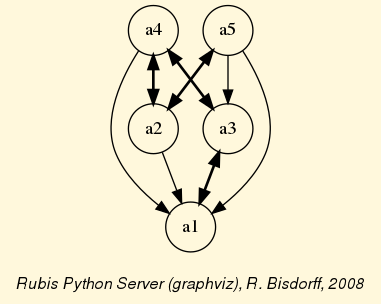
Fig. 1 The tutorial digraph
Some simple methods are easily applicable to this instantiated Digraph object dg , like the following digraphs.Digraph.showStatistics() method.
1 2 3 4 5 6 7 8 9 10 11 12 13 14 15 16 17 18 19 20 21 22 23 24 25 26 27 28 29 30 31 32 33 34 35 36 37 38 39 | >>> dg.showStatistics()
*----- general statistics -------------*
for digraph : <tutorialDigraph.py>
order : 5 nodes
size : 12 arcs
# undetermined : 0 arcs
determinateness : 1.00
arc density : 0.60
double arc density : 0.40
single arc density : 0.40
absence density : 0.20
strict single arc density: 0.40
strict absence density : 0.20
# components : 1
# strong components : 1
transitivity degree : 0.48
: [0, 1, 2, 3, 4, 5]
outdegrees distribution : [0, 1, 1, 3, 0, 0]
indegrees distribution : [0, 1, 2, 1, 1, 0]
mean outdegree : 2.40
mean indegree : 2.40
: [0, 1, 2, 3, 4, 5, 6, 7, 8, 9, 10]
symmetric degrees dist. : [0, 0, 0, 0, 1, 4, 0, 0, 0, 0, 0]
mean symmetric degree : 4.80
outdegrees concentration index : 0.1667
indegrees concentration index : 0.2333
symdegrees concentration index : 0.0333
: [0, 1, 2, 3, 4, 'inf']
neighbourhood depths distribution: [0, 1, 4, 0, 0, 0]
mean neighbourhood depth : 1.80
digraph diameter : 2
agglomeration distribution :
a1 : 58.33
a2 : 33.33
a3 : 33.33
a4 : 50.00
a5 : 50.00
agglomeration coefficient : 45.00
>>> ...
|
Special classes¶
Some special classes of digraphs, like the digraphs.CompleteDigraph, the digraphs.EmptyDigraph or the oriented digraphs.GridDigraph class for instance, are readily available (see Fig. 2).
1 2 3 4 5 6 | >>> from digraphs import GridDigraph
>>> grid = GridDigraph(n=5,m=5,hasMedianSplitOrientation=True)
>>> grid.exportGraphViz('tutorialGrid')
*---- exporting a dot file for GraphViz tools ---------*
Exporting to tutorialGrid.dot
dot -Grankdir=BT -Tpng TutorialGrid.dot -o tutorialGrid.png
|
{kind=link}
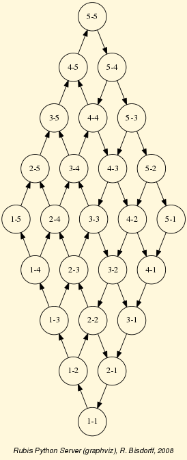
Fig. 2 The tutorial grid graph
For more information about its resources, see the technical documentation of the digraphs module.
Back to Content Table
Manipulating Digraph objects¶
Random digraph¶
We are starting this tutorial with generating a randomly [-1;1]-valued (Normalized=True) digraph of order 7, denoted dg and modelling a binary relation (x S y) defined on the set of nodes of dg. For this purpose, the Digraph3 collection contains a randomDigraphs module providing a specific digraphs.RandomValuationDigraph constructor.
1 2 3 | >>> from randomDigraphs import RandomValuationDigraph
>>> dg = RandomValuationDigraph(order=7,Normalized=True)
>>> dg.save('tutRandValDigraph')
|
With the save() method (see Line 3) we may keep a backup version for future use of dg which will be stored in a file called tutRandValDigraph.py in the current working directory. The Digraph class now provides some generic methods for exploring a given Digraph object, like the showShort(), showAll(), showRelationTable() and the showNeighborhoods() methods.
1 2 3 4 5 6 7 8 9 10 11 12 13 14 15 16 17 18 19 20 21 22 23 24 25 26 27 28 29 30 31 32 33 34 35 36 37 38 39 | >>> dg.showShort()
*----- show summary -------------*
Digraph : randomValuationDigraph
*---- Actions ----*
['1', '2', '3', '4', '5', '6', '7']
*---- Characteristic valuation domain ----*
{'med': Decimal('0.0'), 'hasIntegerValuation': False,
'min': Decimal('-1.0'), 'max': Decimal('1.0')}
*--- Connected Components ---*
1: ['1', '2', '3', '4', '5', '6', '7']
>>> dg.showRelationTable(ReflexiveTerms=False)
* ---- Relation Table -----
r(xSy) | '1' '2' '3' '4' '5' '6' '7'
-------|------------------------------------------------------------
'1' | - -0.48 0.70 0.86 0.30 0.38 0.44
'2' | -0.22 - -0.38 0.50 0.80 -0.54 0.02
'3' | -0.42 0.08 - 0.70 -0.56 0.84 -1.00
'4' | 0.44 -0.40 -0.62 - 0.04 0.66 0.76
'5' | 0.32 -0.48 -0.46 0.64 - -0.22 -0.52
'6' | -0.84 0.00 -0.40 -0.96 -0.18 - -0.22
'7' | 0.88 0.72 0.82 0.52 -0.84 0.04 -
>>> dg.showNeighborhoods()
Neighborhoods observed in digraph 'randomdomValuation'
Gamma :
'1': in => {'5', '7', '4'}, out => {'5', '7', '6', '3', '4'}
'2': in => {'7', '3'}, out => {'5', '7', '4'}
'3': in => {'7', '1'}, out => {'6', '2', '4'}
'4': in => {'5', '7', '1', '2', '3'}, out => {'5', '7', '1', '6'}
'5': in => {'1', '2', '4'}, out => {'1', '4'}
'6': in => {'7', '1', '3', '4'}, out => set()
'7': in => {'1', '2', '4'}, out => {'1', '2', '3', '4', '6'}
Not Gamma :
'1': in => {'6', '2', '3'}, out => {'2'}
'2': in => {'5', '1', '4'}, out => {'1', '6', '3'}
'3': in => {'5', '6', '2', '4'}, out => {'5', '7', '1'}
'4': in => {'6'}, out => {'2', '3'}
'5': in => {'7', '6', '3'}, out => {'7', '6', '2', '3'}
'6': in => {'5', '2'}, out => {'5', '7', '1', '3', '4'}
'7': in => {'5', '6', '3'}, out => {'5'}
|
Warning
Notice that most Digraph class methods will ignore the reflexive couples by considering that the relation is indeterminate, i.e. the characteristic value
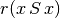
for all action x is put to the median, i.e. indeterminate, value in this case (see [BIS-2004]).Graphviz drawings¶
We may have an even better insight into the Digraph object dg by looking at a graphviz drawing [1] .
1 2 3 4 | >>> dg.exportGraphViz('tutRandValDigraph')
*---- exporting a dot file for GraphViz tools ---------*
Exporting to tutRandValDigraph.dot
dot -Grankdir=BT -Tpng tutRandValDigraph.dot -o tutRandValDigraph.png
|
{kind=link}
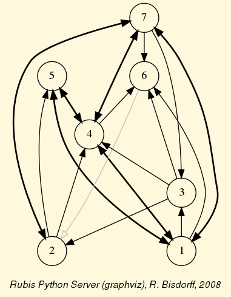
Fig. 3 The tutorial random valuation digraph
Double links are drawn in bold black with an arrowhead at each end, whereas single asymmetric links are drawn in black with an arrowhead showing the direction of the link. Notice the undetermined relational situation (
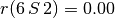
) observed between nodes ‘6’ and ‘2’. The corresponding link is marked in gray with an open arrowhead in the drawing (see Fig. 3).Asymmetric and symmetric parts¶
We may now extract both this symmetric as well as this asymmetric part of digraph dg with the help of two corresponding constructors (see Fig. 4).
1 2 3 4 5 | >>> from digraphs import AsymmetricPartialDigraph, SymmetricPartialDigraph
>>> asymDg = AsymmetricPartialDigraph(dg)
>>> asymDg.exportGraphViz()
>>> symDG = SymmetricPartialDigraph(dg)
>>> symDg.exportGraphViz()
|
{kind=link}
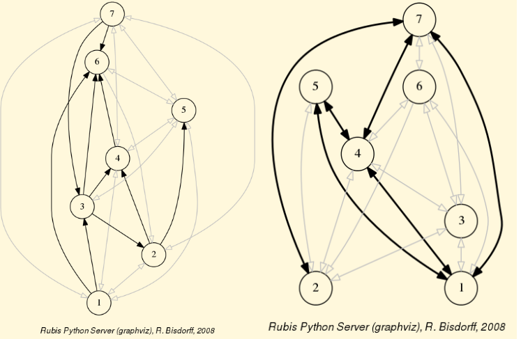
Fig. 4 Asymmetric and symmetric part of the tutorial random valuation digraph
Note
Notice that the partial objects asymDg and symDg put to the indeterminate characteristic value all not-asymmetric, respectively not-symmetric links between nodes (see Fig. 4).
Here below, for illustration the source code of relation constructor of the digraphs.AsymmetricPartialDigraph class:
1 2 3 4 5 6 7 8 9 10 11 12 13 14 15 16 17 18 19 20 | def _constructRelation(self):
actions = self.actions
Min = self.valuationdomain['min']
Max = self.valuationdomain['max']
Med = self.valuationdomain['med']
relationIn = self.relation
relationOut = {}
for a in actions:
relationOut[a] = {}
for b in actions:
if a != b:
if relationIn[a][b] >= Med and relationIn[b][a] <= Med:
relationOut[a][b] = relationIn[a][b]
elif relationIn[a][b] <= Med and relationIn[b][a] >= Med:
relationOut[a][b] = relationIn[a][b]
else:
relationOut[a][b] = Med
else:
relationOut[a][b] = Med
return relationOut
|
Fusion by epistemic disjunction¶
We may recover object dg from both partial objects asymDg and symDg with a bipolar fusion constructor, also called epistemic disjunction, available via the digraphs.FusionDigraph class.
1 2 3 4 5 6 7 8 9 10 11 12 13 | >>> from digraphs import FusionDigraph
>>> fusDg = FusionDigraph(asymDg,symDg,operator='o-max')
>>> fusDg.showRelationTable()
* ---- Relation Table -----
r(xSy) | '1' '2' '3' '4' '5' '6' '7'
-------|------------------------------------------------------------
'1' | 0.00 -0.48 0.70 0.86 0.30 0.38 0.44
'2' | -0.22 0.00 -0.38 0.50 0.80 -0.54 0.02
'3' | -0.42 0.08 0.00 0.70 -0.56 0.84 -1.00
'4' | 0.44 -0.40 -0.62 0.00 0.04 0.66 0.76
'5' | 0.32 -0.48 -0.46 0.64 0.00 -0.22 -0.52
'6' | -0.84 0.00 -0.40 -0.96 -0.18 0.00 -0.22
'7' | 0.88 0.72 0.82 0.52 -0.84 0.04 0.00
|
Dual, converse and codual digraphs¶
We may as readily compute the dual, the converse and the codual (dual and converse) of dg.
1 2 3 4 5 6 7 8 9 10 11 12 13 14 15 16 17 18 19 20 21 22 23 24 25 26 27 28 29 30 31 32 33 34 35 36 | >>> from digraphs import DualDigraph, ConverseDigraph, CoDualDigraph
>>> ddg = DualDigraph(dg)
>>> ddg.showRelationTable()
-r(xSy) | '1' '2' '3' '4' '5' '6' '7'
--------|------------------------------------------
'1 ' | 0.00 0.48 -0.70 -0.86 -0.30 -0.38 -0.44
'2' | 0.22 0.00 0.38 -0.50 0.80 0.54 -0.02
'3' | 0.42 0.08 0.00 -0.70 0.56 -0.84 1.00
'4' | -0.44 0.40 0.62 0.00 -0.04 -0.66 -0.76
'5' | -0.32 0.48 0.46 -0.64 0.00 0.22 0.52
'6' | 0.84 0.00 0.40 0.96 0.18 0.00 0.22
'7' | 0.88 -0.72 -0.82 -0.52 0.84 -0.04 0.00
>>> cdg = ConverseDigraph(dg)
>>> cdg.showRelationTable()
* ---- Relation Table -----
r(ySx) | '1' '2' '3' '4' '5' '6' '7'
--------|------------------------------------------
'1' | 0.00 -0.22 -0.42 0.44 0.32 -0.84 0.88
'2' | -0.48 0.00 0.08 -0.40 -0.48 0.00 0.72
'3' | 0.70 -0.38 0.00 -0.62 -0.46 -0.40 0.82
'4' | 0.86 0.50 0.70 0.00 0.64 -0.96 0.52
'5' | 0.30 0.80 -0.56 0.04 0.00 -0.18 -0.84
'6' | 0.38 -0.54 0.84 0.66 -0.22 0.00 0.04
'7' | 0.44 0.02 -1.00 0.76 -0.52 -0.22 0.00
>>> cddg = CoDualDigraph(dg)
>>> cddg.showRelationTable()
* ---- Relation Table -----
-r(ySx) | '1' '2' '3' '4' '5' '6' '7'
--------|------------------------------------------------------------
'1' | 0.00 0.22 0.42 -0.44 -0.32 0.84 -0.88
'2' | 0.48 0.00 -0.08 0.40 0.48 0.00 -0.72
'3' | -0.70 0.38 0.00 0.62 0.46 0.40 -0.82
'4' | -0.86 -0.50 -0.70 0.00 -0.64 0.96 -0.52
'5' | -0.30 -0.80 0.56 -0.04 0.00 0.18 0.84
'6' | -0.38 0.54 -0.84 -0.66 0.22 0.00 -0.04
'7' | -0.44 -0.02 1.00 -0.76 0.52 0.22 0.00
|
Computing the dual, respectively the converse, may also be done with prefixing the __neg__ (-) or the __invert__ (~) operator. The codual of a Digraph object may, hence, as well be computed with a composition (in either order) of both operations.
1 2 3 4 5 6 7 8 9 10 11 12 13 14 | >>> ddg = -dg # dual of dg
>>> cdg = ~dg # converse of dg
>>> cddg = ~(-dg) # = -(~(dg) codual of dg
>>> cddg.showRelationTable()
* ---- Relation Table -----
-r(ySx) | '1' '2' '3' '4' '5' '6' '7'
--------|------------------------------------------------------------
'1' | 0.00 0.22 0.42 -0.44 -0.32 0.84 -0.88
'2' | 0.48 0.00 -0.08 0.40 0.48 0.00 -0.72
'3' | -0.70 0.38 0.00 0.62 0.46 0.40 -0.82
'4' | -0.86 -0.50 -0.70 0.00 -0.64 0.96 -0.52
'5' | -0.30 -0.80 0.56 -0.04 0.00 0.18 0.84
'6' | -0.38 0.54 -0.84 -0.66 0.22 0.00 -0.04
'7' | -0.44 -0.02 1.00 -0.76 0.52 0.22 0.00
|
Symmetric and transitive closures¶
Symmetric and transitive closure in-site constructors are also available (see Fig. 5). Note that it is a good idea, before going ahead with these in-site operations who irreversibly modify the original dg object, to previously make a backup version of dg. The simplest storage method, always provided by the generic diggraphs.Digraph.save(), writes out in a named file the python content of the Digraph object in string representation.
1 2 3 4 | >>> dg.save('tutRandValDigraph')
>>> dg.closeSymmetric()
>>> dg.closeTransitive()
>>> dg.exportGraphViz('strongComponents')
|
{kind=link}
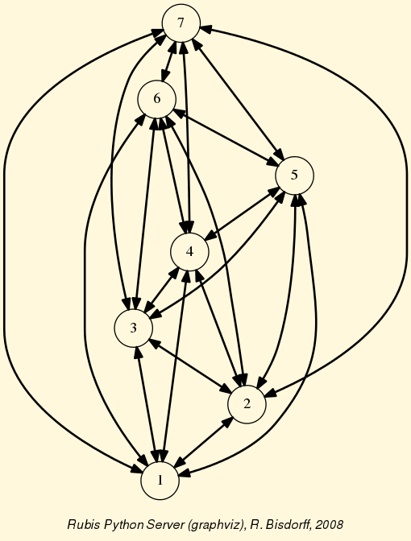
Fig. 5 Symmetric and transitive closure of the tutorial random valuation digraph
Strong components¶
As the original digraph dg was connected (see above the result of the dg.showShort() command), both the symmetric and transitive closures operated together, will necessarily produce a single strong component, i.e. a complete digraph. We may sometimes wish to collapse all strong components in a given digraph and construct the so reduced digraph. Using the digraphs.StrongComponentsCollapsedDigraph constructor here will render a single hyper-node gathering all the original nodes.
1 2 3 4 5 6 7 8 9 10 11 12 13 14 15 16 17 18 19 | >>> from digraphs import StrongComponentsCollapsedDigraph
>>> sc = StrongComponentsCollapsedDigraph(dg)
>>> sc.showAll()
*----- show detail -----*
Digraph : tutRandValDigraph_Scc
*---- Actions ----*
['_7_1_2_6_5_3_4_']
* ---- Relation Table -----
S | 'Scc_1'
-------|---------
'Scc_1' | 0.00
short content
Scc_1 _7_1_2_6_5_3_4_
Neighborhoods:
Gamma :
'frozenset({'7', '1', '2', '6', '5', '3', '4'})': in => set(), out => set()
Not Gamma :
'frozenset({'7', '1', '2', '6', '5', '3', '4'})': in => set(), out => set()
>>> ...
|
CSV storage¶
Sometimes it is required to exchange the graph valuation data in CSV format with a statistical package like R. For this purpose it is possible to export the digraph data into a CSV file. The valuation domain is hereby normalized by default to the range [-1,1] and the diagonal put by default to the minimal value -1.
1 2 3 4 5 6 7 8 9 10 11 | >>> dg = Digraph('tutRandValDigraph')
>>> dg.saveCSV('tutRandValDigraph')
# content of file tutRandValDigraph.csv
"d","1","2","3","4","5","6","7"
"1",-1.0,0.48,-0.7,-0.86,-0.3,-0.38,-0.44
"2",0.22,-1.0,0.38,-0.5,-0.8,0.54,-0.02
"3",0.42,-0.08,-1.0,-0.7,0.56,-0.84,1.0
"4",-0.44,0.4,0.62,-1.0,-0.04,-0.66,-0.76
"5",-0.32,0.48,0.46,-0.64,-1.0,0.22,0.52
"6",0.84,0.0,0.4,0.96,0.18,-1.0,0.22
"7",-0.88,-0.72,-0.82,-0.52,0.84,-0.04,-1.0
|
It is possible to reload a Digraph instance from its previously saved CSV file content.
1 2 3 4 5 6 7 8 9 10 11 12 | >>> dgcsv = CSVDigraph('tutRandValDigraph')
>>> dgcsv.showRelationTable(ReflexiveTerms=False)
* ---- Relation Table -----
r(xSy) | '1' '2' '3' '4' '5' '6' '7'
-------|------------------------------------------------------------
'1' | - -0.48 0.70 0.86 0.30 0.38 0.44
'2' | -0.22 - -0.38 0.50 0.80 -0.54 0.02
'3' | -0.42 0.08 - 0.70 -0.56 0.84 -1.00
'4' | 0.44 -0.40 -0.62 - 0.04 0.66 0.76
'5' | 0.32 -0.48 -0.46 0.64 - -0.22 -0.52
'6' | -0.84 0.00 -0.40 -0.96 -0.18 - -0.22
'7' | 0.88 0.72 0.82 0.52 -0.84 0.04 -
|
It is as well possible to show a colored version of the valued relation table in a system browser window tab (see Fig. 6).
1 2 | >>> dgcsv.showHTMLRelationTable(tableTitle="Tutorial random digraph")
>>> ...
|
{kind=link}
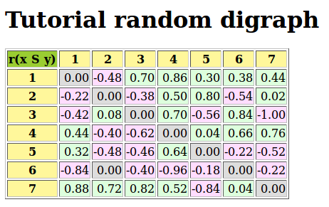
Fig. 6 The valued relation table shown in a browser window
Positive arcs are shown in green and negative in red. Indeterminate -zero-valued- links, like the reflexive diagonal ones or the link between node 6 and node 2, are shown in gray.
Complete, empty and indeterminate digraphs¶
Let us finally mention some special universal classes of digraphs that are readily available in the digraphs module, like the digraphs.CompleteDigraph, the digraphs.EmptyDigraph and the digraphs.IndeterminateDigraph classes, which put all characteristic values respectively to the maximum, the minimum or the median indeterminate characteristic value.
1 2 3 4 5 6 7 8 9 10 11 12 13 14 15 16 17 18 19 20 21 22 23 24 25 26 27 28 29 30 31 32 33 34 35 36 37 38 39 40 41 42 43 44 45 46 47 48 49 50 51 52 53 54 55 56 57 58 59 60 61 | >>> from digraphs import CompleteDigraph,EmptyDigraph,
... IndeterminateDigraph
>>> help(CompleteDigraph)
Help on class CompleteDigraph in module digraphs:
class CompleteDigraph(Digraph)
| Parameters:
| order > 0; valuationdomain=(Min,Max).
| Specialization of the general Digraph class for generating
| temporary complete graphs of order 5 in {-1,0,1} by default.
| Method resolution order:
| CompleteDigraph
| Digraph
| builtins.object
...
>>> e = EmptyDigraph(order=5)
>>> e.showRelationTable()
* ---- Relation Table -----
S | '1' '2' '3' '4' '5'
---- -|---------------------------------------
'1' | -1.00 -1.00 -1.00 -1.00 -1.00
'2' | -1.00 -1.00 -1.00 -1.00 -1.00
'3' | -1.00 -1.00 -1.00 -1.00 -1.00
'4' | -1.00 -1.00 -1.00 -1.00 -1.00
'5' | -1.00 -1.00 -1.00 -1.00 -1.00
>>> e.showNeighborhoods()
Neighborhoods:
Gamma :
'1': in => set(), out => set()
'2': in => set(), out => set()
'5': in => set(), out => set()
'3': in => set(), out => set()
'4': in => set(), out => set()
Not Gamma :
'1': in => {'2', '4', '5', '3'}, out => {'2', '4', '5', '3'}
'2': in => {'1', '4', '5', '3'}, out => {'1', '4', '5', '3'}
'5': in => {'1', '2', '4', '3'}, out => {'1', '2', '4', '3'}
'3': in => {'1', '2', '4', '5'}, out => {'1', '2', '4', '5'}
'4': in => {'1', '2', '5', '3'}, out => {'1', '2', '5', '3'}
>>> i = IndeterminateDigraph()
* ---- Relation Table -----
S | '1' '2' '3' '4' '5'
------|--------------------------------------
'1' | 0.00 0.00 0.00 0.00 0.00
'2' | 0.00 0.00 0.00 0.00 0.00
'3' | 0.00 0.00 0.00 0.00 0.00
'4' | 0.00 0.00 0.00 0.00 0.00
'5' | 0.00 0.00 0.00 0.00 0.00
>>> i.showNeighborhoods()
Neighborhoods:
Gamma :
'1': in => set(), out => set()
'2': in => set(), out => set()
'5': in => set(), out => set()
'3': in => set(), out => set()
'4': in => set(), out => set()
Not Gamma :
'1': in => set(), out => set()
'2': in => set(), out => set()
'5': in => set(), out => set()
'3': in => set(), out => set()
'4': in => set(), out => set()
|
Note
Notice the subtle difference between the neighborhoods of an empty and the neighborhoods of an indeterminate digraph instance. In the first kind, the neighborhoods are known to be completely empty whereas, in the latter, nothing is known about the actual neighborhoods of the nodes. These two cases illustrate why in the case of a bipolar characteristic valuation domain, we need both a gamma and a notGamma function.
Back to Content Table
Computing the winner of an election¶
Linear voting profiles¶
The votingProfiles module provides resources for handling election results [ADT-L2], like the votingProfiles.LinearVotingProfile class. We consider an election involving a finite set of candidates and finite set of weighted voters, who express their voting preferences in a complete linear ranking (without ties) of the candidates. The data is internally stored in two ordered dictionaries, one for the voters and another one for the candidates. The linear ballots are stored in a standard dictionary:
1 2 3 4 5 6 7 8 9 | candidates = OrderedDict([('a1',...), ('a2',...), ('a3', ...), ...}
voters = OrderedDict([('v1',{'weight':10}), ('v2',{'weight':3}), ...}
## each voter specifies a linearly ranked list of candidates
## from the best to the worst (without ties
linearBallot = {
'v1' : ['a2','a3','a1', ...],
'v2' : ['a1','a2','a3', ...],
...
}
|
The module provides a votingProfiles.RandomLinearVotingProfile class for generating random instances of the votingProfiles.LinearVotingProfile class. In an interactive Python session we may obtain for the election of 3 candidates by 5 voters the following result.
1 2 3 4 5 6 7 8 9 10 11 12 13 14 | >>> from votingProfiles import RandomLinearVotingProfile
>>> v = RandomLinearVotingProfile(numberOfVoters=5,
... numberOfCandidates=3
... votersWeights=[2,3,1,5,4])
>>> v.candidates
OrderedDict(['a1',{'name':'a1}), ('a2',{'name':'a2'}), ('a3':{'name':'a3'})])
>>> v.voters
OrderedDict([('v1',{'weight': 2}), ('v2':{'weight': 3}),
('v3',{'weight': 1}), ('v4':{'weight': 5}),
('v5',{'weight': 4})])
>>> v.linearBallot
{'v4': ['a1', 'a3', 'a2'], 'v3': ['a1', 'a3', 'a2'], 'v1': ['a1', 'a2', 'a3'],
'v5': ['a2', 'a3', 'a1'], 'v2': ['a3', 'a2', 'a1']}
>>> ...
|
Notice that in this random example, the five voters are weighted (see Line 4). Their linear ballots can be viewed with the showLinearBallots method.
1 2 3 4 5 6 7 8 9 | >>> v.showLinearBallots()
voters(weight) candidates rankings
v1(2): ['a2', 'a1', 'a3']
v2(3): ['a3', 'a1', 'a2']
v3(1): ['a1', 'a3', 'a2']
v4(5): ['a1', 'a2', 'a3']
v5(4): ['a3', 'a1', 'a2']
# voters: 15
>>> ...
|
Editing of the linear voting profile may be achieved by storing the data in a file, edit it, and reload it again.
1 2 3 | >>> v.save('tutorialLinearVotingProfile')
*--- Saving linear profile in file: <tutorialLinearVotingProfile.py> ---*
>>> v = LinearVotingProfile('tutorialLinearVotingProfile')
|
Computing the winner¶
We may easily compute uni-nominal votes, i.e. how many times a candidate was ranked first, and see who is consequently the simple majority winner(s) in this election.
1 2 3 4 5 | >>> v.computeUninominalVotes()
{'a2': 2, 'a1': 6, 'a3': 7}
>>> v.computeSimpleMajorityWinner()
['a3']
>>> ...
|
As we observe no absolute majority (8/15) of votes for any of the three candidate, we may look for the instant runoff winner instead (see [ADT-L2]).
1 2 3 | >>> v.computeInstantRunoffWinner()
['a1']
>>> ...
|
We may also follow the Chevalier de Borda’s advice and, after a rank analysis of the linear ballots, compute the Borda score of each candidate and hence determine the Borda winner(s).
1 2 3 4 5 6 | >>> v.computeRankAnalysis()
{'a2': [2, 5, 8], 'a1': [6, 9, 0], 'a3': [7, 1, 7]}
>>> v.computeBordaScores()
{'a2': 36, 'a1': 24, 'a3': 30}
>>> v.computeBordaWinners()
['a1']
|
The Borda rank analysis table may be printed out with a corresponding show command.
1 2 3 4 5 6 7 8 9 | >>> v.showRankAnalysisTable()
*---- Borda rank analysis tableau -----*
candi- | alternative-to-rank | Borda
dates | 1 2 3 | score average
-------|-------------------------------------
'a1' | 6 9 0 | 24 1.60
'a3' | 7 1 7 | 30 2.00
'a2' | 2 5 8 | 36 2.40
>>> ...
|
The Condorcet winner¶
In our randomly generated election results, we are lucky: The instant runoff winner and the Borda winner both are candidate a1. However, we could also follow the Marquis de Condorcet’s advice, and compute the majority margins obtained by voting for each individual pair of candidates. For instance, candidate a1 is ranked four times before and once behind candidate a2. Hence the majority margin M(a1,a2) is 4 - 1 = +3. These majority margins define on the set of candidates what we call the Condorcet digraph. The votingProfiles.CondorcetDigraph class (a specialization of the digraphs.Digraph class) is available for handling such pairwise majority margins.
1 2 3 4 5 6 7 8 9 10 11 12 13 14 15 16 17 | >>> from votingProfiles import CondorcetDigraph
>>> cdg = CondorcetDigraph(v,hasIntegerValuation=True)
>>> cdg.showAll()
*----- show detail -------------*
Digraph : rel_randLinearProfile
*---- Actions ----*
['a1', 'a2', 'a3']
*---- Characteristic valuation domain ----*
{'max': Decimal('15.0'), 'med': Decimal('0'),
'min': Decimal('-15.0'), 'hasIntegerValuation': True}
* ---- majority margins -----
M(x,y) | 'a1' 'a2' 'a3'
----------|-------------------------------------------
'a1' | 0 11 1
'a2' | -11 0 -1
'a3' | -1 1 0
Valuation domain: [-15;+15]
|
A candidate x, showing a positive majority margin M(x,y), is beating candidate y with an absolute majority in a pairwise voting. Hence, a candidate showing only positive terms in her row in the Condorcet digraph relation table, beats all other candidates with absolute majority of votes. Condorcet recommends to declare this candidate (is always unique, why?) the winner of the election. Here we are lucky, it is again candidate a1 who is hence the Condorcet winner-
1 2 | >>> cdg.computeCondorcetWinner()
['a1']
|
By seeing the majority margins like a bipolar-valued characteristic function for a global preference relation defined on the set of candidates, we may use all operational resources of the generic Digraph class (see Working with the Digraph3 software resources), and especially its exportGraphViz method [1], for visualizing an election result.
1 2 3 4 | >>> cdg.exportGraphViz('tutorialLinearBallots')
*---- exporting a dot file for GraphViz tools ---------*
Exporting to tutorialLinearBallots.dot
dot -Grankdir=BT -Tpng tutorialLinearBallots.dot -o tutorialLinearBallots.png
|
{kind=link}
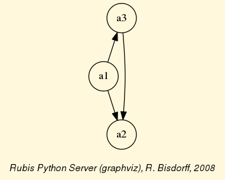
Fig. 7 Visualizing an election result
Cyclic social preferences¶
Usually, when aggregating linear ballots, there appear cyclic social preferences. Let us consider for instance the following linear voting profile and construct the corresponding Condorcet digraph.
1 2 3 4 5 6 7 8 9 10 11 12 13 14 15 16 17 18 19 20 21 | >>> v.showLinearBallots()
voters(weight) candidates rankings
v1(1): ['a1', 'a3', 'a5', 'a2', 'a4']
v2(1): ['a1', 'a2', 'a4', 'a3', 'a5']
v3(1): ['a5', 'a2', 'a4', 'a3', 'a1']
v4(1): ['a3', 'a4', 'a1', 'a5', 'a2']
v5(1): ['a4', 'a2', 'a3', 'a5', 'a1']
v6(1): ['a2', 'a4', 'a5', 'a1', 'a3']
v7(1): ['a5', 'a4', 'a3', 'a1', 'a2']
v8(1): ['a2', 'a4', 'a5', 'a1', 'a3']
v9(1): ['a5', 'a3', 'a4', 'a1', 'a2']
>>> cdg = CondorcetDigraph(v)
>>> cdg.showRelationTable()
* ---- Relation Table -----
S | 'a1' 'a2' 'a3' 'a4' 'a5'
------|----------------------------------------
'a1' | - 0.11 -0.11 -0.56 -0.33
'a2' | -0.11 - 0.11 0.11 -0.11
'a3' | 0.11 -0.11 - -0.33 -0.11
'a4' | 0.56 -0.11 0.33 - 0.11
'a5' | 0.33 0.11 0.11 -0.11 -
|
Now, we cannot find any completely positive row in the relation table. No one of the five candidates is beating all the others with an absolute majority of votes. There is no Condorcet winner anymore. In fact, when looking at a graphviz drawing of this Condorcet digraph, we may observe cyclic preferences, like (a1 > a2 > a3 > a1) for instance.
1 2 3 4 | >>> cdg.exportGraphViz('cycles')
*---- exporting a dot file for GraphViz tools ---------*
Exporting to cycles.dot
dot -Grankdir=BT -Tpng cycles.dot -o cycles.png
|
{kind=link}
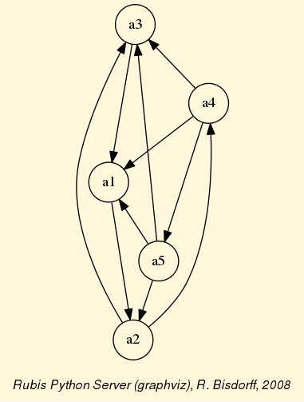
Fig. 8 Cyclic social preferences
But, there may be many cycles appearing in a digraph, and, we may detect and enumerate all minimal chordless circuits in a Digraph instance with the computeChordlessCircuits() method.
1 2 3 4 | >>> cdg.computeChordlessCircuits()
[(['a2', 'a3', 'a1'], frozenset({'a2', 'a3', 'a1'})),
(['a2', 'a4', 'a5'], frozenset({'a2', 'a5', 'a4'})),
(['a2', 'a4', 'a1'], frozenset({'a2', 'a1', 'a4'}))]
|
Condorcet’s approach for determining the winner of an election is hence not decisive in all circumstances and we need to exploit more sophisticated approaches for finding the winner of the election on the basis of the majority margins of the given linear ballots (see [BIS-2008]).
Many more tools for exploiting voting results are available, see the technical documentation of the votingProfiles module.
Back to Content Table
Working with the outrankingDigraphs module¶
See also the technical documentation of the outrankingDigraphs module.
Outranking digraph¶
In this Digraph3 module, the main outrankingDigraphs.BipolarOutrankingDigraph class provides a generic bipolar-valued outranking digraph model. A given object of this class consists in
- a potential set of decision actions : a dictionary describing the potential decision actions or alternatives with ‘name’ and ‘comment’ attributes,
- a coherent family of criteria: a dictionary of criteria functions used for measuring the performance of each potential decision action with respect to the preference dimension captured by each criterion,
- the evaluations: a dictionary of performance evaluations for each decision action or alternative on each criterion function.
- the digraph valuationdomain, a dictionary with three entries: the minimum (-100, means certainly no link), the median (0, means missing information) and the maximum characteristic value (+100, means certainly a link),
- the outranking relation : a double dictionary defined on the Cartesian product of the set of decision alternatives capturing the credibility of the pairwise outranking situation computed on the basis of the performance differences observed between couples of decision alternatives on the given family if criteria functions.
With the help of the outrankingDigraphs.RandomBipolarOutrankingDigraph class (of type outrankingDigraphs.BipolarOutrankingDigraph) , let us generate for illustration a random bipolar-valued outranking digraph consisting of 7 decision actions denoted a01, a02, …, a07.
1 2 3 4 5 6 7 8 9 10 11 12 13 14 15 16 | >>> from outrankingDigraphs import RandomBipolarOutrankingDigraph
>>> odg = RandomBipolarOutrankingDigraph()
>>> odg.showActions()
*----- show digraphs actions --------------*
key: a01
name: random decision action
comment: RandomPerformanceTableau() generated.
key: a02
name: random decision action
comment: RandomPerformanceTableau() generated.
...
...
key: a07
name: random decision action
comment: RandomPerformanceTableau() generated.
>>> ...
|
In this example we consider furthermore a family of seven equisignificant cardinal criteria functions g01, g02, …, g07, measuring the performance of each alternative on a rational scale from 0.0 to 100.00. In order to capture the evaluation’s uncertainty and imprecision, each criterion function g1 to g7 admits three performance discrimination thresholds of 10, 20 and 80 pts for warranting respectively any indifference, preference and veto situations.
1 2 3 4 5 6 7 8 9 10 11 12 13 14 15 16 17 18 19 20 21 22 | >>> odg.showCriteria()
*---- criteria -----*
g01 'digraphs.RandomPerformanceTableau() instance'
Scale = [0.0, 100.0]
Weight = 3.0
Threshold pref : 20.00 + 0.00x ; percentile: 0.28
Threshold ind : 10.00 + 0.00x ; percentile: 0.095
Threshold veto : 80.00 + 0.00x ; percentile: 1.0
g02 'digraphs.RandomPerformanceTableau() instance'
Scale = [0.0, 100.0]
Weight = 3.0
Threshold pref : 20.00 + 0.00x ; percentile: 0.33
Threshold ind : 10.00 + 0.00x ; percentile: 0.19
Threshold veto : 80.00 + 0.00x ; percentile: 0.95
...
...
g07 'digraphs.RandomPerformanceTableau() instance'
Scale = [0.0, 100.0]
Weight = 10.0
Threshold pref : 20.00 + 0.00x ; percentile: 0.476
Threshold ind : 10.00 + 0.00x ; percentile: 0.238
Threshold veto : 80.00 + 0.00x ; percentile: 1.0
|
The performance evaluations of each decision alternative on each criterion are gathered in a performance tableau.
1 2 3 4 5 6 7 8 9 10 11 12 | >>> odg.showPerformanceTableau()
*---- performance tableau -----*
criteria | 'a01' 'a02' 'a03' 'a04' 'a05' 'a06' 'a07'
---------|------------------------------------------------------
'g01' | 9.6 48.8 21.7 37.3 81.9 48.7 87.7
'g02' | 90.9 11.8 96.6 41.0 34.0 53.9 46.3
'g03' | 97.8 46.4 83.3 30.9 61.5 85.4 82.5
'g04' | 40.5 43.6 53.2 17.5 38.6 21.5 67.6
'g05' | 33.0 40.7 96.4 55.1 46.2 58.1 52.6
'g06' | 47.6 19.0 92.7 55.3 51.7 26.6 40.4
'g07' | 41.2 64.0 87.7 71.6 57.8 59.3 34.7
>>> ...
|
Browsing the performances¶
We may visualize the same performance tableau in a two-colors setting in the default system browser with the command.
1 2 | >>> odg.showHTMLPerformanceTableau()
>>> ...
|
{kind=link}
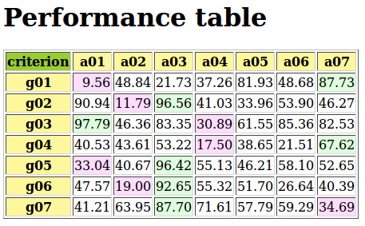
Fig. 9 Visualizing a performance tableau in a browser window
It is worthwhile noticing that green and red marked evaluations indicate best, respectively worst, performances of an alternative on a criterion. In this example, we may hence notice that alternative a03 is in fact best performing on four out of seven criteria.
We may, furthermore, rank the alternatives on the basis of the weighted marginal quintiles and visualize the same performance tableau in an even more colorful and sorted setting.
1 2 | >>> odg.showHTMLPerformanceHeatmap(quantiles=5,colorLevels=5)
>>> ...
|
{kind=link}
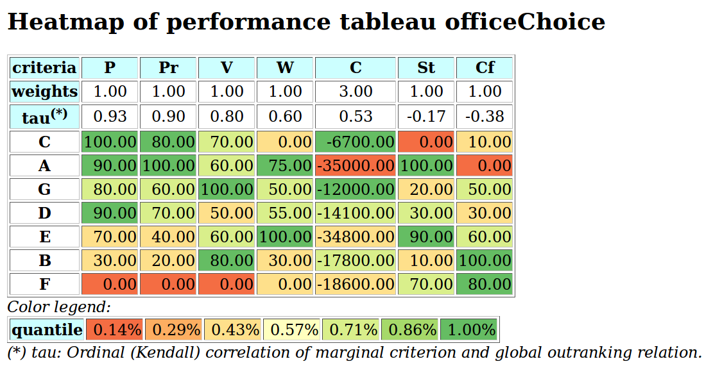
Fig. 10 Ranked heat map of the performance table
There is no doubt that action a03, with a performance in the highest quintile in five out of seven criteria, appears definitely to be best performing. Action a05 shows a more or less average performance on most criteria, whereas action a02 appears to be the weakest alternative.
Valuation semantics¶
Considering the given performance tableau, the outrankingDigraphs.BipolarOutrankingDigraph class constructor computes the characteristic value
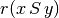
of a pairwise outranking relation “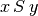
” (see [BIS-2013], [ADT-L7]) in a default valuation domain [-100.0,+100.0] with the median value 0.0 acting as indeterminate characteristic value. The semantics of r(x S y) are the following.
- If
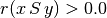
it is more True than False that x outranks y, i.e. alternative x is at least as well performing than alternative y and there is no considerable negative performance difference observed in disfavour of x,- If
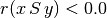
it is more False than True that x outranks y, i.e. alternative x is not at least as well performing than alternative y and there is no considerable positive performance difference observed in favour of x,- If
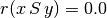
it is indeterminate whether x outranks y or not.
The resulting bipolar-valued outranking relation may be inspected with the following command.
1 2 3 4 5 6 7 8 9 10 11 12 13 | >>> odg.showRelationTable()
* ---- Relation Table -----
r(x S y)| 'a01' 'a02' 'a03' 'a04' 'a05' 'a06' 'a07'
--------|--------------------------------------------------------------
'a01' | +0.00 +29.73 -29.73 +13.51 +48.65 +40.54 +48.65
'a02' | +13.51 +0.00 -100.00 +37.84 +13.51 +43.24 -37.84
'a03' | +83.78 +100.00 +0.00 +91.89 +83.78 +83.78 +70.27
'a04' | +24.32 +48.65 -56.76 +0.00 +24.32 +51.35 +24.32
'a05' | +51.35 +100.00 -70.27 +72.97 +0.00 +51.35 +32.43
'a06' | +16.22 +72.97 -51.35 +35.14 +32.43 +0.00 +37.84
'a07' | +67.57 +45.95 -24.32 +27.03 +27.03 +45.95 +0.00
>>> odg.valuationdomain
{'min': Decimal('-100.0'), 'max': Decimal('100.0'), 'med': Decimal('0.0')}
|
Pairwise comparisons¶
From above given semantics, we may consider that a01 outranks a02 (
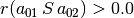
), but not a03 (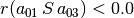
). In order to comprehend the characteristic values shown in the relation table above, we may furthermore have a look at the pairwise multiple criteria comparison between alternatives a01 and a02.1 2 3 4 5 6 7 8 9 10 11 12 13 14 | >>> odg.showPairwiseComparison('a01','a02')
*------------ pairwise comparison ----*
Comparing actions : (a01, a02)
crit. wght. g(x) g(y) diff | ind p concord |
------------------------------- ---------------------------------
g01 3.00 9.56 48.84 -39.28 | 10.00 20.00 -3.00 |
g02 3.00 90.94 11.79 +79.15 | 10.00 20.00 +3.00 |
g03 6.00 97.79 46.36 +51.43 | 10.00 20.00 +6.00 |
g04 5.00 40.53 43.61 -3.08 | 10.00 20.00 +5.00 |
g05 3.00 33.04 40.67 -7.63 | 10.00 20.00 +3.00 |
g06 7.00 47.57 19.00 +28.57 | 10.00 20.00 +7.00 |
g07 10.00 41.21 63.95 -22.74 | 10.00 20.00 -10.00 |
-----------------------------------------------------------------
Valuation in range: -37.00 to +37.00; global concordance: +11.00
|
The outranking valuation characteristic appears as majority margin resulting from the difference of the weights of the criteria in favor of the statement that alternative a01 is at least well performing as alternative a02. No considerable performance difference being observed, no veto or counter-veto situation is triggered in this pairwise comparison. Such a case is, however, observed for instance when we pairwise compare the performances of alternatives a03 and a02.
1 2 3 4 5 6 7 8 9 10 11 12 13 14 15 | >>> odg.showPairwiseComparison('a03','a02')
*------------ pairwise comparison ----*
Comparing actions : (a03, a02)
crit. wght. g(x) g(y) diff | ind p concord | v veto/counter-
-----------------------------------------------------------------------------------
g01 3.00 21.73 48.84 -27.11 | 10.00 20.00 -3.00 |
g02 3.00 96.56 11.79 +84.77 | 10.00 20.00 +3.00 | 80.00 +1.00
g03 6.00 83.35 46.36 +36.99 | 10.00 20.00 +6.00 |
g04 5.00 53.22 43.61 +9.61 | 10.00 20.00 +5.00 |
g05 3.00 96.42 40.67 +55.75 | 10.00 20.00 +3.00 |
g06 7.00 92.65 19.00 +73.65 | 10.00 20.00 +7.00 |
g07 10.00 87.70 63.95 +23.75 | 10.00 20.00 +10.00 |
-----------------------------------------------------------------------------------
Valuation in range: -37.00 to +37.00; global concordance: +31.00
>>> ...
|
This time, we observe a considerable out-performance of a03 against a02 on criterion g02 (see second row in the relation table above). We therefore notice a positively polarized certainly confirmed outranking situation in this case [BIS-2013].
Recoding the valuation¶
All outranking digraphs, being of root type digraphs.Digraph, inherit the methods available under this class. The characteristic valuation domain of an outranking digraph may be recoded with the digraphs.Digraph.recodeValutaion() method below to the integer range [-37,+37], i.e. plus or minus the global significance of the family of criteria considered in this example instance.
1 2 3 4 5 6 7 8 9 10 11 12 13 14 15 16 17 | >>> odg.recodeValuation(-37,+37)
>>> odg.valuationdomain['hasIntegerValuation'] = True
>>> Digraph.showRelationTable(odg)
* ---- Relation Table -----
* ---- Relation Table -----
S | 'a01' 'a02' 'a03' 'a04' 'a05' 'a06' 'a07'
-----|------------------------------------------------------------
'a01' | 0 +11 -11 +5 +17 +14 +17
'a02' | +5 0 -37 +13 +5 +15 -14
'a03' | +31 +37 0 +34 +31 +31 +26
'a04' | +9 +18 -21 0 +9 +19 +9
'a05' | +19 +37 -26 +27 0 +19 +12
'a06' | +6 +27 -19 +13 +12 0 +14
'a07' | +25 +17 -9 +9 +9 +17 0
Valuation domain: {'hasIntegerValuation': True, 'min': Decimal('-37'),
'max': Decimal('37'), 'med': Decimal('0.000')}
>>> ...
|
Note
Notice that the reflexive self comparison characteristic
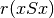
is set by default to the median indeterminate valuation value 0; the reflexive terms of binary relation being generally ignored in most of theDigraph3 resources.
Codual digraph¶
From the theory (see [BIS-2013], [ADT-L7] ) we know that a bipolar-valued outranking relation is weakly complete, i.e. if then
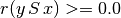
. From this property follows that a bipolar-valued outranking relation verifies the coduality principle: the dual (-) of the converse (~) of the outranking relation corresponds to its strict outranking part. We may visualize the codual (strict) outranking digraph with a graphviz drawing [1].1 2 3 4 5 6 | >>> cdodg = -(~odg)
>>> cdodg.exportGraphViz('codualOdg')
*---- exporting a dot file for GraphViz tools ---------*
Exporting to codualOdg.dot
dot -Grankdir=BT -Tpng codualOdg.dot -o codualOdg.png
>>> ...
|
{kind=link}
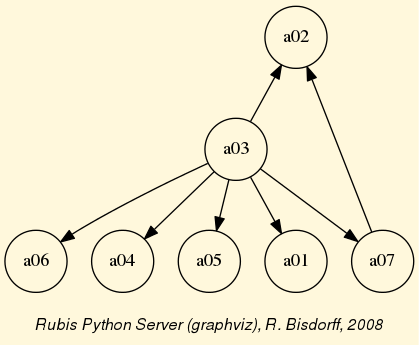
Fig. 11 Codual digraph
It becomes readily clear now from the picture above that alternative a03 strictly outranks in fact all the other alternatives. Hence, a03 appears as Condorcet winner and may be recommended as best decision action in this illustrative preference modelling exercise.
XMCDA 2.0¶
As with all Digraph instances, it is possible to store permanently a copy of the outranking digraph odg. As its outranking relation is automatically generated by the outrankingDigraphs.BipolarOutrankingDigraph class constructor on the basis of a given performance tableau, it is sufficient to save only the latter. For this purpose we are using the XMCDA 2.00 XML encoding scheme of MCDA data, as provided by the Decision Deck Project (see https://www.decision-deck.org/).
1 2 3 4 | >>> PerformanceTableau.saveXMCDA2(odg,'tutorialPerfTab')
*----- saving performance tableau in XMCDA 2.0 format -------------*
File: tutorialPerfTab.xml saved !
>>> ...
|
The resulting XML file may be visualized in a browser window (other than Chrome or Chromium) with a corresponding XMCDA style sheet (see here). Hitting Ctrl U in Firefox will open a browser window showing the underlying xml encoded raw text. It is thus possible to easily edit and update as needed a given performance tableau instance. Reinstantiating again a corresponding updated odg object goes like follow.
1 2 3 4 5 6 7 8 9 10 11 12 13 14 | >>> pt = XMCDA2PerformanceTableau('tutorialPerfTab')
>>> odg = BipolarOutrankingDigraph(pt)
>>> odg.showRelationTable()
* ---- Relation Table -----
S | 'a01' 'a02' 'a03' 'a04' 'a05' 'a06' 'a07'
------|------------------------------------------------------------
'a01' | +0.00 +29.73 -29.73 +13.51 +48.65 +40.54 +48.65
'a02' | +13.51 +0.00 -100.00 +37.84 +13.51 +43.24 -37.84
'a03' | +83.78 +100.00 +0.00 +91.89 +83.78 +83.78 +70.27
'a04' | +24.32 +48.65 -56.76 +0.00 +24.32 +51.35 +24.32
'a05' | +51.35 +100.00 -70.27 +72.97 +0.00 +51.35 +32.43
'a06' | +16.22 +72.97 -51.35 +35.14 +32.43 +0.00 +37.84
'a07' | +67.57 +45.95 -24.32 +27.03 +27.03 +45.95 +0.00
>>> ...
|
We recover the original bipolar-valued outranking characteristics, and we may restart again the preference modelling process.
Many more tools for exploiting bipolar-valued outranking digraphs are available in the Digraph3 resources (see the technical documentation of the outrankingDigraphs module and the perfTabs module).
Back to Content Table
Generating random performance tableaux¶
Introduction¶
The randomPerfTabs module provides several constructors for random performance tableaux generators of different kind, mainly for the purpose of testing implemented methods and tools presented and discussed in the Algorithmic Decision Theory course at the University of Luxembourg. This tutorial concerns the four most useful generators.
1. The simplest model, called RandomPerformanceTableau, generates a set of n decision actions, a set of m real-valued performance criteria, ranging by default from 0.0 to 100.0, associated with default discrimination thresholds: 2.5 (ind.), 5.0 (pref.) and 60.0 (veto). The generated performances are Beta(2.2) distributed on each measurement scale.
2. One of the most useful random generator, called RandomCBPerformanceTableau, proposes two decision objectives, named Costs (to be minimized) respectively Benefits (to be maximized) model; its purpose being to generate more or less contradictory performances on these two, usually opposed, objectives. Low costs will randomly be coupled with low benefits, whereas high costs will randomly be coupled with high benefits.
3. Many multiple criteria decision problems concern three decision objectives which take into account economical, societal as well as environmental aspects. For this type of performance tableau model, we provide a specific generator, called Random3ObjectivesPerformanceTableau.
4. In order to study aggregation of linear orders, we provide a model called RandomRankPerformanceTableau which provides linearly ordered performances without ties on multiple criteria for a given number of decision actions.
Generating standard random performance tableaux¶
The randomPerfTabs.RandomPerformanceTableau class, the simplest of the kind, specializes the generic refTabs.PerformanceTableau class, and takes the following parameters.
numberOfActions := nbr of decision actions.
numberOfCriteria := number performance criteria.
weightDistribution := ‘random’ (default) | ‘fixed’ | ‘equisignificant’:
If ‘random’, weights are uniformly selected randomlyfrom the given weight scale;If ‘fixed’, the weightScale must provided a corresponding weightsdistribution;If ‘equisignificant’, all criterion weights are put to unity.weightScale := [Min,Max] (default =(1,numberOfCriteria).
IntegerWeights := True (default) | False (normalized to proportions of 1.0).
commonScale := [a,b]; common performance measuring scales (default = [0.0,100.0])
commonThresholds := [(q0,q1),(p0,p1),(v0,v1)]; common indifference(q), preference (p) and considerable performance difference discrimination thresholds. For each threshold type x in {q,p,v}, the float x0 value represents a constant percentage of the common scale and the float x1 value a proportional value of the actual performance measure. Default values are [(2.5.0,0.0),(5.0,0.0),(60.0,0,0)].
commonMode := common random distribution of random performance measurements (default = (‘beta’,None,(2,2)) ):
(‘uniform’,None,None), uniformly distributed float values on the given common scales’ range [Min,Max].(‘normal’,*mu*,*sigma*), truncated Gaussian distribution, by default mu = (b-a)/2 and sigma = (b-a)/4.(‘triangular’,*mode*,*repartition*), generalized triangular distribution with a probability repartition parameter specifying the probability mass accumulated until the mode value. By default, mode = (b-a)/2 and repartition = 0.5.(‘beta’,None,(alpha,beta)), a beta generator with default alpha=2 and beta=2 parameters.valueDigits := <integer>, precision of performance measurements (2 decimal digits by default).
missingDataProbability := 0 <= float <= 1.0 ; probability of missing performance evaluation on a criterion for an alternative (default 0.025).
Code example.
1 2 3 4 5 6 7 8 9 10 11 12 13 14 15 16 17 18 19 20 21 22 23 24 25 26 27 28 29 | >>> from randomPerfTabs import RandomPerformanceTableau
>>> t = RandomPerformanceTableau(numberOfActions=21,numberOfCriteria=13,seed=100)
>>> t.actions
{'a01': {'comment': 'RandomPerformanceTableau() generated.',
'name': 'random decision action'},
'a02': { ... },
...
}
>>> t.criteria
{'g01': {'thresholds': {'ind' : (Decimal('10.0'), Decimal('0.0')),
'veto': (Decimal('80.0'), Decimal('0.0')),
'pref': (Decimal('20.0'), Decimal('0.0'))},
'scale': [0.0, 100.0],
'weight': Decimal('1'),
'name': 'digraphs.RandomPerformanceTableau() instance',
'comment': 'Arguments: ; weightDistribution=random;
weightScale=(1, 1); commonMode=None'},
'g02': { ... },
...
}
>>> t.evaluation
{'g01': {'a01': Decimal('15.17'),
'a02': Decimal('44.51'),
'a03': Decimal('-999'), # missing evaluation
...
},
...
}
>>> t.showHTMLPerformanceTableau()
|
{kind=link}
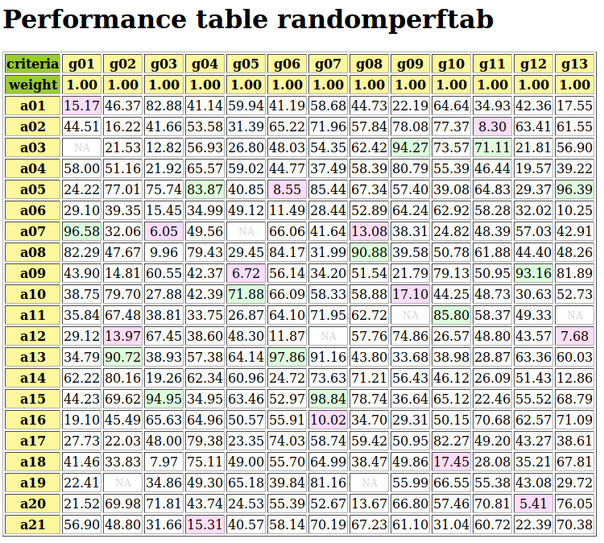
Fig. 12 Browser view on random performance tableau instance
Note
Missing (NA) evaluation are registered in a performance tableau as Decimal(‘-999’) value (see Line 24). Best and worst performance on each criterion are marked in light green, respectively in light red.
Generating random Cost-Benefit tableaux¶
We provide the randomPerfTabs.RandomCBPerformanceTableau class for generating random Cost versus Benefit organized performance tableaux following the directives below:
- We distinguish three types of decision actions: cheap, neutral and expensive ones with an equal proportion of 1/3. We also distinguish two types of weighted criteria: cost criteria to be minimized, and benefit criteria to be maximized; in the proportions 1/3 respectively 2/3.
- Random performances on each type of criteria are drawn, either from an ordinal scale [0;10], or from a cardinal scale [0.0;100.0], following a parametric triangular law of mode: 30% performance for cheap, 50% for neutral, and 70% performance for expensive decision actions, with constant probability repartition 0.5 on each side of the respective mode.
- Cost criteria use mostly cardinal scales (3/4), whereas benefit criteria use mostly ordinal scales (2/3).
- The sum of weights of the cost criteria by default equals the sum weights of the benefit criteria: weighDistribution = ‘equiobjectives’.
- On cardinal criteria, both of cost or of benefit type, we observe following constant preference discrimination quantiles: 5% indifferent situations, 90% strict preference situations, and 5% veto situation.
- Parameters:
- If numberOfActions == None, a uniform random number between 10 and 31 of cheap, neutral or advantageous actions (equal 1/3 probability each type) actions is instantiated
- If numberOfCriteria == None, a uniform random number between 5 and 21 of cost or benefit criteria (1/3 respectively 2/3 probability) is instantiated
- weightDistribution = {‘equiobjectives’|’fixed’|’random’|’equisignificant’ (default = ‘equisignificant’)}
- default weightScale for ‘random’ weightDistribution is 1 - numberOfCriteria
- All cardinal criteria are evaluated with decimals between 0.0 and 100.0 whereas ordinal criteria are evaluated with integers between 0 and 10.
- commonThresholds is obsolete. Preference discrimination is specified as percentiles of concerned performance differences (see below).
- commonPercentiles = {‘ind’:5, ‘pref’:10, [‘weakveto’:90,] ‘veto’:95} are expressed in percents (reversed for vetoes) and only concern cardinal criteria.
Warning
Minimal number of decision actions required is 3 !
Example Python session
1 2 3 4 5 6 7 8 9 10 11 12 13 14 15 16 17 18 19 20 21 22 23 24 25 26 27 28 29 30 31 | >>> from randomPerfTabs import RandomCBPerformanceTableau
>>> t = RandomCBPerformanceTableau(
... numberOfActions=7,
... numberOfCriteria=5,
... weightDistribution='equiobjectives',
... commonPercentiles={'ind':5,'pref':10,'veto':95},
... seed=100)
>>> t.showActions()
*----- show decision action --------------*
key: a1
short name: a1
name: random cheap decision action
key: a2
short name: a2
name: random neutral decision action
...
key: a7
short name: a7
name: random advantageous decision action
>>> t.showCriteria()
*---- criteria -----*
g1 'random ordinal benefit criterion'
Scale = (0, 10)
Weight = 0.167
g2 'random cardinal cost criterion'
Scale = (0.0, 100.0)
Weight = 0.250
Threshold ind : 1.76 + 0.00x ; percentile: 0.095
Threshold pref : 2.16 + 0.00x ; percentile: 0.143
Threshold veto : 73.19 + 0.00x ; percentile: 0.952
...
|
In the example above, we may notice the three types of decision actions (Lines 10-19), as well as the two types (Lines 22-25) of criteria with either an ordinal or a cardinal performance measuring scale. In the latter case, by default about 5% of the random performance differences will be below the indifference and 10% below the preference discriminating threshold. About 5% will be considered as considerably large. More statistics about the generated performances is available as follows.
1 2 3 4 5 6 7 8 9 10 11 12 13 14 15 16 17 18 19 20 21 22 23 24 25 26 27 28 29 30 31 | >>> t.showStatistics()
*-------- Performance tableau summary statistics -------*
Instance name : randomCBperftab
#Actions : 7
#Criteria : 5
*Statistics per Criterion*
Criterion name : g1
Criterion weight : 2
criterion scale : 0.00 - 10.00
mean evaluation : 5.14
standard deviation : 2.64
maximal evaluation : 8.00
quantile Q3 (x_75) : 8.00
median evaluation : 6.50
quantile Q1 (x_25) : 3.50
minimal evaluation : 1.00
mean absolute difference : 2.94
standard difference deviation : 3.74
Criterion name : g2
Criterion weight : 3
criterion scale : -100.00 - 0.00
mean evaluation : -49.32
standard deviation : 27.59
maximal evaluation : 0.00
quantile Q3 (x_75) : -27.51
median evaluation : -35.98
quantile Q1 (x_25) : -54.02
minimal evaluation : -91.87
mean absolute difference : 28.72
standard difference deviation : 39.02
...
|
A (potentially ranked) colored heat map with 5 color levels is also provided.
>>> t.showHTMLPerformanceHeatmap(colorLevels=5,Ranked=False)
{kind=link}
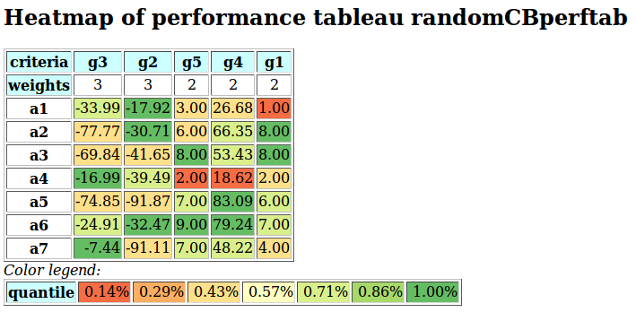
Fig. 13 Unranked heat map of a random Cost-Benefit performance tableau
Such a performance tableau may be stored and re-accessed in the XMCDA2 encoded format.
1 2 3 4 5 6 | >>> t.saveXMCDA2('temp')
*----- saving performance tableau in XMCDA 2.0 format -------------*
File: temp.xml saved !
>>> from perfTabs import XMCDA2PerformanceTableau
>>> t = XMCDA2PerformanceTableau('temp')
>>> ...
|
If needed for instance in an R session, a CSV version of the performance tableau may be created as follows.
1 2 3 4 5 6 7 8 9 10 11 | >>> t.saveCSV('temp')
* --- Storing performance tableau in CSV format in file temp.csv
...$ less temp.csv
"actions","g1","g2","g3","g4","g5"
"a1",1.00,-17.92,-33.99,26.68,3.00
"a2",8.00,-30.71,-77.77,66.35,6.00
"a3",8.00,-41.65,-69.84,53.43,8.00
"a4",2.00,-39.49,-16.99,18.62,2.00
"a5",6.00,-91.87,-74.85,83.09,7.00
"a6",7.00,-32.47,-24.91,79.24,9.00
"a7",4.00,-91.11,-7.44,48.22,7.00
|
Back to Content Table
Generating three objectives tableaux¶
We provide the randomPerfTabs.Random3ObjectivesPerformanceTableau class for generating random performance tableaux concerning three preferential decision objectives which take respectively into account economical, societal as well as environmental aspects.
Each decision action is qualified randomly as performing weak (-), fair (~) or good (+) on each of the three objectives.
Generator directives are the following:
- numberOfActions = 20 (default),
- numberOfCriteria = 13 (default),
- weightDistribution = ‘equiobjectives’ (default) | ‘random’ | ‘equisignificant’,
- weightScale = (1,numberOfCriteria): only used when random criterion weights are requested,
- integerWeights = True (default): False gives normlized rational weights,
- commonScale = (0.0,100.0),
- commonThresholds = [(5.0,0.0),(10.0,0.0),(60.0,0.0)]: Performance discrimination thresholds may be set for ‘ind’, ‘pref’ and ‘veto’,
- commonMode = [‘triangular’,’variable’,0.5]: random number generators of various other types (‘uniform’,’beta’) are available,
- valueDigits = 2 (default): evaluations are encoded as Decimals,
- missingProbability = 0.05 (default): random insertion of missing values with given probability,
- seed= None.
Note
If the mode of the triangular distribution is set to ‘variable’, three modes at 0.3 (-), 0.5 (~), respectively 0.7 (+) of the common scale span are set at random for each coalition and action.
Warning
Minimal number of decision actions required is 3 !
Example Python session
1 2 3 4 5 6 7 8 9 10 11 12 13 14 15 16 17 18 19 20 21 22 23 24 25 26 27 | >>> from randomPerfTabs import Random3ObjectivesPerformanceTableau
>>> t = Random3ObjectivesPerformanceTableau(
numberOfActions=31,
numberOfCriteria=13,
weightDistribution='equiobjectives',
seed=120)
>>> t.showObjectives()
*------ show objectives -------"
Eco: Economical aspect
g04 criterion of objective Eco 20
g05 criterion of objective Eco 20
g08 criterion of objective Eco 20
g11 criterion of objective Eco 20
Total weight: 80.00 (4 criteria)
Soc: Societal aspect
g06 criterion of objective Soc 16
g07 criterion of objective Soc 16
g09 criterion of objective Soc 16
g10 criterion of objective Soc 16
g13 criterion of objective Soc 16
Total weight: 80.00 (5 criteria)
Env: Environmental aspect
g01 criterion of objective Env 20
g02 criterion of objective Env 20
g03 criterion of objective Env 20
g12 criterion of objective Env 20
Total weight: 80.00 (4 criteria)
|
In the example code above, we notice that 5 equisignificant criteria (g06, g07, g09, g10, g13) evaluate for instance the performance of the decision actions from the societal point of view. 4 equisignificant criteria do the same from the economical, respectively the environmental point of view. The equiobjectives directive results hence in a balanced total weight (80.00) for each decision objective.
1 2 3 4 5 6 7 8 9 10 11 12 13 14 | >>> t.showActions()
key: a01
name: random decision action Eco+ Soc- Env+
profile: {'Eco': 'good', 'Soc': 'weak', 'Env': 'good'}
key: a02
...
key: a26
name: random decision action Eco+ Soc+ Env-
profile: {'Eco': 'good', 'Soc': 'good', 'Env': 'weak'}
...
key: a30
name: random decision action Eco- Soc- Env-
profile: {'Eco': 'weak', 'Soc': 'weak', 'Env': 'weak'}
...
|
Variable triangular modes (0.3, 0.5 or 0.7 of the span of the measure scale) for each objective result in different performance status for each decision action with respect to the three objectives. Action a01 , for instance, will probably show good performances wrt the economical and environmental aspects, and weak performances wrt the societal aspect.
For testing purposes we provifde a special perfTabs.PartialPerformanceTableau class for extracting a partial performance tableau from a given tableau instance. In the example blow, we construct the partial performance tableaux corresponding to each on of the three decision objectives.
1 2 3 4 5 6 7 | >>> from perfTabs import PartialPerformanceTableau
>>> teco = PartialPerformanceTableau(t,criteriaSubset=\
t.objectives['Eco']['criteria'])
>>> tsoc = PartialPerformanceTableau(t,criteriaSubset=\
t.objectives['Soc']['criteria'])
>>> tenv = PartialPerformanceTableau(t,criteriaSubset=\
t.objectives['Env']['criteria'])
|
One may thus compute a partial bipolar-valued outranking digraph for each individual objective.
1 2 3 4 | >>> from outrankingDigraphs import BipolarOutrankingDigraph
>>> geco = BipolarOutrankingDigraph(teco)
>>> gsoc = BipolarOutrankingDigraph(tsoc)
>>> genv = BipolarOutrankingDigraph(tenv)
|
The three partial digraphs: geco, gsoc and genv, hence model the preferences represented in each one of the partial performance tableaux. And, we may aggregate these three outranking digraphs with an epistemic fusion operator.
1 2 3 4 5 6 7 8 9 10 11 12 13 14 15 16 17 18 19 20 21 22 23 24 25 26 27 28 | >>> from digraphs import FusionLDigraph
>>> gfus = FusionLDigraph([geco,gsoc,genv])
>>> gfus.strongComponents()
{frozenset({'a30'}),
frozenset({'a10', 'a03', 'a19', 'a08', 'a07', 'a04', 'a21', 'a20',
'a13', 'a23', 'a16', 'a12', 'a24', 'a02', 'a31', 'a29',
'a05', 'a09', 'a28', 'a25', 'a17', 'a14', 'a15', 'a06',
'a01', 'a27', 'a11', 'a18', 'a22'}),
frozenset({'a26'})}
>>> from digraphs import StrongComponentsCollapsedDigraph
>>> scc = StrongComponentsCollapsedDigraph(gfus)
>>> scc.showActions()
*----- show digraphs actions --------------*
key: frozenset({'a30'})
short name: Scc_1
name: _a30_
comment: collapsed strong component
key: frozenset({'a10', 'a03', 'a19', 'a08', 'a07', 'a04', 'a21', 'a20', 'a13',
'a23', 'a16', 'a12', 'a24', 'a02', 'a31', 'a29', 'a05', 'a09', 'a28', 'a25',
'a17', 'a14', 'a15', 'a06', 'a01', 'a27', 'a11', 'a18', 'a22'})
short name: Scc_2
name: _a10_a03_a19_a08_a07_a04_a21_a20_a13_a23_a16_a12_a24_a02_a31_\
a29_a05_a09_a28_a25_a17_a14_a15_a06_a01_a27_a11_a18_a22_
comment: collapsed strong component
key: frozenset({'a26'})
short name: Scc_3
name: _a26_
comment: collapsed strong component
|
A graphviz drawing illustrates the apparent preferential links between the strong components.
1 2 3 4 | >>> scc.exportGraphViz('scFusionObjectives')
*---- exporting a dot file for GraphViz tools ---------*
Exporting to scFusionObjectives.dot
dot -Grankdir=BT -Tpng scFusionObjectives.dot -o scFusionObjectives.png
|
{kind=link}
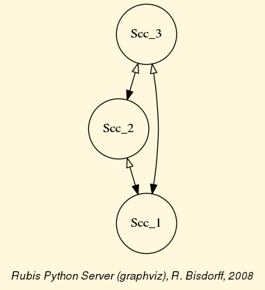
Fig. 14 Strong components digraph
Decision action a26 (Eco+ Soc+ Env-) appears dominating the other decision alternatives, whereas decision action a30 (Eco- Soc- Env-) appears to be dominated by all the others.
Generating random linearly ranked performances¶
Finally, we provide the randomPerfTabs.RandomRankPerformanceTableau class for generating multiple criteria ranked performances, ie on each criterion, all decision actions appear linearly ordered without ties.
This type of random performance tabeau is matching the votingDigrahs.RandomLinearVotingProfile class provided by the votingProfiles module.
- Parameters:
number of actions,
number of performance criteria,
weightDistribution := equisignificant | random (default, see above above)
weightScale := (1, 1 | numberOfCriteria (default when random))
integerWeights := Boolean (True = default)
commonThresholds (default) := {
‘ind’:(0,0),‘pref’:(1,0),‘veto’:(numberOfActions,0)} (default)
Back to Content Table
Ranking with multiple incommensurable criteria¶
The ranking problem¶
We need to rank without ties a set X of items (usually decision alternatives) that are evaluated on multiple incommensurable performance criteria; yet, for which we may know their pairwise valued outranking situation characteristics, i.e. r(x S y) for all x, y in X (see [BIS-2013]).
Unfortunately, the Condorcet digraph, associated with such a given outranking digraph, presents only exceptionally a linear ordering. Usually, pairwise majority comparisons do not render even a complete or, at least, a transitive partial outranking relation.
Let us consider a didactic outranking digraph generated from a random Cost-Benefit performance tableau concerning 9 decision alternatives evaluated on 13 performance criteria.
1 2 3 4 5 6 7 8 9 10 11 12 13 14 15 16 17 | >>> from outrankingDigraphs import *
>>> t = RandomCBPerformanceTableau(numberOfActions=9,
... numberOfCriteria=13,seed=2)
>>> g = BipolarOutrankingDigraph(t,Normalized=True)
>>> g.showRelationTable(ReflexiveTerms=False)
* ---- Relation Table -----
S | 'a1' 'a2' 'a3' 'a4' 'a5' 'a6' 'a7' 'a8' 'a9'
-----|----------------------------------------------------------------
'a1' | - +0.00 +0.24 +0.24 +0.00 +0.17 +0.26 +0.07 +0.00
'a2' | +0.00 - -0.50 +0.00 -0.13 +0.00 +0.00 -0.02 +0.00
'a3' | +0.14 +0.50 - +0.40 +0.36 +0.50 +0.71 +0.69 +1.00
'a4' | +0.05 +0.00 -0.40 - +0.00 +0.21 +0.26 -0.10 +0.10
'a5' | +0.00 +0.36 -0.36 +0.00 - +0.26 +0.00 +0.26 -1.00
'a6' | -0.10 +0.00 -0.29 -0.07 +0.02 - +0.24 +0.19 +0.04
'a7' | -0.26 +0.00 -0.29 -0.02 +0.00 -0.10 - +0.00 -1.00
'a8' | -0.07 +0.33 -0.24 +0.10 +0.05 +0.29 +0.00 - -0.02
'a9' | +0.00 +0.00 -1.00 -0.10 +1.00 +0.33 +1.00 +0.02 -
|
Some ranking rules will work on the associated Condorcet digraph, i.e. the strict median cut polarised digraph.
1 2 3 4 5 6 7 8 9 10 11 12 13 14 15 | >>> c = PolarisedOutrankingDigraph(g,level=0,KeepValues=False,
... StrictCut=True)
>>> c.showRelationTable(ReflexiveTerms=False,IntegerValues=True)
* ---- Relation Table -----
S | 'a1' 'a2' 'a3' 'a4' 'a5' 'a6' 'a7' 'a8' 'a9',
-----|------------------------------------------------------------
'a1' | - 0 +1 +1 0 +1 +1 +1 0
'a2' | 0 - -1 0 -1 0 0 -1 0
'a3' | +1 +1 - +1 +1 +1 +1 +1 +1
'a4' | +1 0 -1 - 0 +1 +1 -1 +1
'a5' | 0 +1 -1 0 - +1 0 +1 -1
'a6' | -1 0 -1 -1 +1 - +1 +1 +1
'a7' | -1 0 -1 -1 0 -1 - 0 -1
'a8' | -1 +1 -1 +1 +1 +1 0 - -1
'a9' | 0 0 -1 -1 +1 +1 +1 +1 -
|
To estimate how difficult this ranking problem may be, we can have a look at the corresponding strict outranking digraph graphviz drawing.
1 2 3 4 5 | >>> gcd = ~(-g) # converse of the negation of g
>>> gcd.exportGraphViz('rankingTutorial')
*---- exporting a dot file for GraphViz tools ---------*
Exporting to rankingTutorial.dot
dot -Grankdir=BT -Tpng rankingTutorial.dot -o rankingTutorial.png
|
{kind=link}
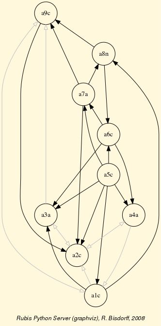
Fig. 15 The strict outranking digraph
The shown strict outranking relation is apparently not transitive: for instance, alternative a9 outranks alternative a5 and alternative a5 outranks a2, however a9 does not outrank a2. We may compute the transitivity degree of the outranking digraph, ie the ratio of the number of outranking arcs over the number of arcs of the transitive closue of the digraph gcd.
1 2 | >>> gcd.computeTransitivityDegree()
Decimal('0.508')
|
The outranking relation is hence very far from being transitive; a serious problem when a linear ordering of the decision alternatives is looked for. Let us furthermore see if there are any cyclic outrankings.
1 2 3 4 5 | >>> len(gcd.computeChordlessCircuits())
1
>>> gcd.showChordlessCircuits()
*---- Chordless circuits ----*
['a4', 'a9', 'a8'] , credibility : 0.024
|
There is one chordless circuit detected in the given strict outranking digraph gcd, namely a4 outranks a9, the latter outranks a8, and a8 outranks again a4. Any potential linear ordering of these three alternatives will, in fact, always contradict somehow the given outranking relation.
Several heuristic ranking rules have been proposed for constructing a linear ordering which is closest in some specific sense to a given outranking relation.
The Digraph3 resources provide some of the most common of these ranking rules, like Copeland ‘s, Kemeny ‘s, Slater ‘s, Kohler and Tideman ‘s ranking rules.
The Copeland ranking¶
Copeland’s rule, the most intuitive one as it works well for any outranking relation which models in fact a linear order, computes for each alternative a score resulting from the difference between its crisp out-degree (number of validated (+1) crisp outranking situations) and its crisp in-degree (number of validated crisp (+1) outranked situations).
1 2 3 4 5 6 7 8 9 10 11 12 13 14 | >>> from linearOrders import CopelandOrder
>>> cop = CopelandOrder(g,Debug=True)
Copeland score for a1 = +3 (5 - 3)
Copeland score for a2 = -3 (0 - 3)
Copeland score for a3 = +7 (8 - 1)
Copeland score for a4 = +1 (4 - 3)
Copeland score for a5 = -1 (3 - 4)
Copeland score for a6 = -2 (4 - 6)
Copeland score for a7 = -5 (0 - 5)
Copeland score for a8 = -1 (4 - 5)
Copeland score for a9 = +1 (4 - 3)
['a7', 'a2', 'a6', 'a8', 'a5', 'a9', 'a4', 'a1', 'a3']
>>> cop.showRanking()
['a3', 'a1', 'a4', 'a9', 'a5', 'a8', 'a6', 'a2', 'a7']
|
Alternative a3 has the best score (+7), followed by alternative a1 (+3). Alternatives a4 and a9 have the same score (+1); following the lexicographic rule, a4 is hence ranked before a9. Same situation is observed for a5 and a8 with a score of -1.
Notice by the way that Copeland scores, as computed in the associated Condorcet relation table or similarly in the codual digraph drawing above, are in fact invariant under a codual - converse of the negation ~(-g) - transform of the outranking digraph.
Copeland’s rule actually renders a linear order which is indeed highly correlated, in the ordinal Kendall sense (see [BIS-2012]), with the given pairwise outranking relation.
1 2 3 | >>> corr = g.computeOrdinalCorrelation(cop)
>>> print("Fitness of Copeland's ranking: %.3f" % corr['correlation'])
Fitness of Copeland's ranking: 0.906
|
The Net-Flows ranking¶
The valued version of the Copeland rule, called Net-Flows rule, is working directly on the given valued outranking digraph g. For each alternative x we compute a net flow score that is the sum of the differences between the outranking characteristics and the outranked characteristics r(y S x) for all pairs of alternatives where y is different from x.
1 2 3 4 5 6 7 8 9 10 11 12 13 14 15 16 17 | >>> from linearOrders import NetFlowsOrder
>>> nf = NetFlowsOrder(g)
>>> nf.netFlows
[(Decimal('7.143'), 'a3'),
(Decimal('2.155'), 'a9'),
(Decimal('1.214'), 'a1'),
(Decimal('-0.429'), 'a4'),
(Decimal('-0.690'), 'a8'),
(Decimal('-1.631'), 'a6'),
(Decimal('-1.774'), 'a5'),
(Decimal('-1.845'), 'a2'),
(Decimal('-4.143'), 'a7')]
>>> nf.showRanking()
['a3', 'a9', 'a1', 'a4', 'a8', 'a6', 'a5', 'a2', 'a7']
>>> corr = g.computeOrdinalCorrelation(nf)
>>> print("Fitness of net flows ranking: %.3f" % corr['correlation'])
Fitness of net flows ranking: 0.828
|
The Net-Flows ranking is here, in this didactic example, not as much correlated with the given outranking relation as its crisp cousin ranking.
To appreciate the effective quality of both the Copeland and the Net-Flows rankings, it is useful to consider Kemeny’s and Slater’s optimal ranking rules.
Kemeny rankings¶
A Kemeny ranking is a linear order which is closest, in the sense of the ordinal Kendall distance (see [BIS-2012]), to the given valued outranking digraph g.
1 2 3 4 5 6 7 | >>> from linearOrders import KemenyOrder
>>> ke = KemenyOrder(g,orderLimit=9) # default orderLimit is 7
>>> ke.showRanking()
['a1', 'a3', 'a4', 'a9', 'a5', 'a8', 'a2', 'a6', 'a7']
>>> corr = g.computeOrdinalCorrelation(ke)
>>> print("Fitness of Kemeny's ranking: %.3f" % corr['correlation'])
Fitness of Kemeny's ranking: 0.9175
|
So, +0.9175 is the highest possible ordinal correlation (fitness) any potential ranking can achieve with the given pairwise outranking relation. A Kemeny ranking may not be unique, and the first one discovered in a brute permutation trying computation, is retained. In our example we hence obtain seven optimal Kemeny rankings with a same maximal Kemeny index of 15.095.
1 2 3 4 5 6 7 8 9 10 | >>> ke.maximalRankings
[['a1', 'a3', 'a4', 'a9', 'a5', 'a8', 'a2', 'a6', 'a7'],
['a1', 'a3', 'a4', 'a9', 'a5', 'a8', 'a6', 'a2', 'a7'],
['a1', 'a3', 'a4', 'a9', 'a5', 'a8', 'a6', 'a7', 'a2'],
['a1', 'a3', 'a9', 'a5', 'a8', 'a2', 'a4', 'a6', 'a7'],
['a1', 'a3', 'a9', 'a5', 'a8', 'a4', 'a2', 'a6', 'a7'],
['a1', 'a3', 'a9', 'a5', 'a8', 'a4', 'a6', 'a2', 'a7'],
['a1', 'a3', 'a9', 'a5', 'a8', 'a4', 'a6', 'a7', 'a2']]
>>> ke.maxKemenyIndex
Decimal('15.095')
|
We may visualize the partial order defined by the epistemic disjunction of these seven Kemeny rankings (see weakOrders module) as follows.
1 2 3 4 5 6 7 8 9 10 11 12 13 | >>> from weakOrders import KemenyWeakOrder
>>> wke = KemenyWeakOrder(g,orderLimit=9)
>>> wke.exportGraphViz('tutorialKemeny')
*---- exporting a dot file for GraphViz tools ---------*
Exporting to tutorialKemeny.dot
0 { rank = same; a1; }
1 { rank = same; a3; }
2 { rank = same; a4; a9; }
3 { rank = same; a5; }
4 { rank = same; a8; }
5 { rank = same; a2; a6; }
6 { rank = same; a7; }
dot -Grankdir=TB -Tpng tutorialKemeny.dot -o tutorialKemeny.png
|
{kind=link}
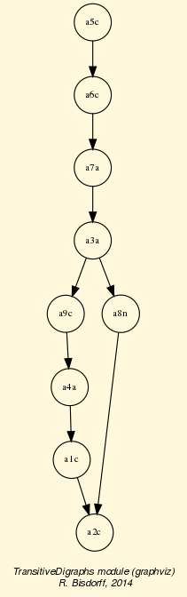
Fig. 16 Epistemic disjunction of Kemeny rankings
It is interesting to notice that all seven Kemeny rankings place alternative a1 at rank 1 before alternative a3. This is precisely the only inversion that separates the Copeland ranking (see above) from being optimal in the Kemeny sense.
Slater rankings¶
The Slater ranking rule is similar to Kemeny’s, but it is working, instead, on the associated crisp Condorcet digraph c. It renders here the following results.
1 2 3 4 5 6 7 8 9 10 | >>> sl = KemenyOrder(c,orderLimit=9)
>>> len(sl.maximalRankings)
174
>>> sl.showRanking()
['a1', 'a3', 'a8', 'a4', 'a6', 'a9', 'a5', 'a2', 'a7']
>>> corr = g.computeOrdinalCorrelation(sl)
>>> print("Fitness of Slater's ranking: %.3f" % corr['correlation'])
Fitness of Slater's ranking: 0.844
>>> slw = KemenyWeakOrder(c,orderLimit=9)
>>> slw.exportGraphViz('tutorialSlater')
|
We notice that the first crisp Slater ranking is a rather good fit (+0.844), better apparently than the Net-Flows ranking. However, there are in fact 174 such potentially optimal Slater rankings. The corresponding epistemic disjunction gives the follwowing partial ordering.
{kind=link}
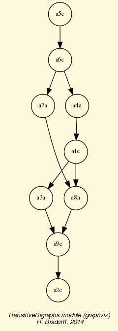
Fig. 17 Epistemic disjunction of Slater rankings
What precise ranking result should we hence adopt ?
Kemeny ‘s as well as Slater ‘s ranking rules are furthermore computationally difficult problems and effective ranking results are only computable for tiny outranking digraphs (< 15 objects).
More efficient ranking heuristics, like the Copeland and the Net-Flows rules, are therefore needed in practice.
Kohler’s ranking-by-choosing rule¶
Kohler’s ranking-by-choosing rule can be formulated like this.
At step r (r goes from 1 to n) do the following:
- Compute for each row of the valued outranking relation table (see above) the smallest value;
- Select the row where this minimum is maximal. Ties are resolved in lexicographic order;
- Put the selected decision alternative at rank r;
- Delete the corresponding row and column from the relation table and restart until the table is empty.
Here, we find a better fitness (0.868) when compared with Slater’s (0.844) or the Net-Flows result (0.828), but not as good as Copeland crisp rule’s result (+0.906).
Tideman’s Ranked-Pairs rule¶
A further ranking heuristic, the Ranked-Pairs rule, is based on a prudent incremental construction of linear orders that avoids on the fly any cycling outrankings. The ranking procedure may be formulated as follows:
Rank the ordered pairs
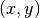
of alternatives in decreasing order of the outranking characteristic values ;Consider the pairs in that order (ties are resolved by a lexicographic rule):
- if the next pair does not create a cycle with the pairs already blocked, block this pair;
- if the next pair creates a cycle with the already blocked pairs, skip it.
In our didactic outranking example, we get the following result.
1 2 3 4 5 6 7 8 9 10 11 12 13 14 15 16 17 18 19 20 21 22 23 | >>> from linearOrders import RankedPairsOrder
>>> rp = RankedPairsOrder(g,Debug=True)
next pair: ('a3', 'a9') 1.00
added: (a3,a9) characteristic: 1.00 (1.0)
added: (a9,a3) characteristic: -1.00 (-1.0)
...
...
next pair: ('a8', 'a4') 0.09523809523809523809523809524
Circuit detected !!
next pair: ('a1', 'a8') 0.07142857142857142857142857143
added: (a1,a8) characteristic: 0.07 (1.0)
added: (a8,a1) characteristic: -0.07 (-1.0)
...
...
next pair: ('a2', 'a4') 0.00
Circuit detected !!
next pair: ('a2', 'a6') 0.00
added: (a2,a6) characteristic: 0.00 (1.0)
added: (a6,a2) characteristic: 0.00 (-1.0)
...
...
>>> rp.showRanking()
['a1', 'a3', 'a4', 'a9', 'a5', 'a8', 'a2', 'a6', 'a7']
|
The Ranked-Pairs rule actually renders one of the seven optimal Kemeny rankings as we may verify below.
1 2 3 | >>> corr = g.computeOrdinalCorrelation(rp)
>>> print("Fitness of Tideman's ranking: %.3f" % corr['correlation'])
Fitness of Tideman's ranking: 0.918
|
Unfortunately, the Ranked-Pairs ranking rule is again not efficiently scalable to outranking digraphs of larger orders (> 100). For such outranking digraphs, with several hundred of alternatives, only the Copeland and the Net-Flows ranking rules, with a polynomial complexity of
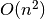
where n is the order of the outranking digraph, remain in fact computationally efficient.Ranking big performance tableaux¶
None of the previous ranking heuristics, using essentially only the information given by the outranking relation, are scalable for big outranking digraphs gathering millions of pairwise outranking situations. We may notice, however, that a given outranking digraph -the association of a set of decision alternatives and an outranking relation- is, following the methodological requirements of the outranking approach, necessarily associated with a corresponding performance tableau. And, we may use this underlying performance data for linearly decomposing big sets of decision alternatives into ordered quantiles equivalence classes. This decomposition will lead to a pre-ranked sparse outranking digraph.
In the coding example, we generate for instance, by using multiprocessing techniques, first, a cost benefit performance tableau of 100 decision alternatives and, secondly, we construct a pre-ranked sparse outranking digraph instance called bg. Notice bwt the BigData flag used here for generating a parcimonous performance tableau.
1 2 3 4 5 6 7 8 9 10 11 12 13 14 15 16 17 18 19 20 21 22 23 24 25 26 27 28 | >>> from sparseOutrankingDigraphs import PreRankedOutrankingDigraph
>>> tp = RandomCBPerformanceTableau(numberOfActions=100,BigData=True,
... Threading=MP,
... seed=100)
>>> bg = PreRankedOutrankingDigraph(tp,quantiles=20,
... LowerClosed=False,
... minimalComponentSize=1,
... Threading=True)
>>> print(bg)
*----- show short --------------*
Instance name : randomCBperftab_mp
# Actions : 100
# Criteria : 7
Sorting by : 10-Tiling
Ordering strategy : average
Ranking rule : Copeland
# Components : 20
Minimal order : 1
Maximal order : 20
Average order : 5.0
fill rate : 10.061%
---- Constructor run times (in sec.) ----
Total time : 0.17790
QuantilesSorting : 0.09019
Preordering : 0.00043
Decomposing : 0.08522
Ordering : 0.00000
<class 'sparseOutrankingDigraphs.PreRankedOutrankingDigraph'> instance
|
The total run time of the sparseOutrankingDigraphs.PreRankedOutrankingDigraph constructor is less than a fifth of a second. The corresponding multiple criteria deciles sorting leads to 20 quantiles equivalence classes. The corresponding pre-ranked decomposition may be visualized as follows.
1 2 3 4 5 6 7 8 9 10 11 12 13 14 15 16 17 18 19 20 21 22 23 24 | >>> bg.showDecomposition()
*--- quantiles decomposition in decreasing order---*
0. ]0.80-0.90] : [49, 10, 52]
1. ]0.70-0.90] : [45]
2. ]0.70-0.80] : [18, 84, 86, 79]
3. ]0.60-0.80] : [41, 70]
4. ]0.50-0.80] : [44]
5. ]0.60-0.70] : [2, 35, 68, 37, 7, 8, 75, 12, 80, 21, 55, 90, 30, 95]
6. ]0.50-0.70] : [19]
7. ]0.40-0.70] : [69]
8. ]0.50-0.60] : [96, 1, 66, 67, 38, 33, 72, 73, 71, 13, 77, 16, 82,
85, 22, 25, 88, 57, 87, 91]
9. ]0.30-0.70] : [42]
10. ]0.40-0.60] : [47]
11. ]0.30-0.60] : [0, 32, 48]
12. ]0.40-0.50] : [34, 5, 31, 83, 76, 78, 15, 51, 14, 54, 56, 27, 60,
29, 94, 63]
13. ]0.30-0.50] : [4, 50, 92, 39]
14. ]0.20-0.50] : [43]
15. ]0.30-0.40] : [97, 99, 36, 6, 89, 61, 93]
16. ]0.20-0.40] : [65, 20, 46, 62]
17. ]0.20-0.30] : [64, 81, 3, 53, 24, 40, 74, 28, 26, 58]
18. ]0.10-0.30] : [17, 98, 11]
19. ]0.10-0.20] : [9, 59, 23]
|
The best decile (]80%-90%]) gathers decision alternatives 49, 10, and 52. Worst decile (]10%-20%]) gathers alternatives 9, 59, and 23.
Each one of these 20 ordered components may now be locally ranked by using a suitable ranking rule. Best operational results, both in run times and quality, are more or less equally given with the Copeland and the NetFlows rules. The eventually obtained linear ordering (from the worst to best) is the following.
1 2 3 4 5 6 7 8 9 | >>> print(bg.boostedOrder)
[59, 9, 23, 17, 11, 98, 26, 81, 40, 64, 3, 74,
28, 53, 24, 58, 65, 62, 46, 20, 93, 89, 97, 61,
99, 6, 36, 43, 4, 50, 39, 92, 94, 60, 14, 76, 63,
51, 56, 34, 5, 54, 27, 78, 15, 29, 31, 83, 32, 0,
48, 47, 42, 16, 1, 66, 72, 71, 38, 57, 33, 73, 88,
85, 82, 22, 96, 91, 67, 87, 13, 77, 25, 69, 19, 21,
95, 35, 80, 37, 7, 12, 68, 2, 90, 55, 30, 75, 8, 44,
41, 70, 79, 86, 84, 18, 45, 49, 10, 52]
|
Alternative 52 appears first ranked, whereas alternative 59 is last ranked. The quality of this ranking result may be assessed by computing its ordinal correlation with the corresponding standard outranking relation.
1 2 3 4 | >>> g = BipolarOutrankingDigraph(tp,Normalized=True,Threading=True)
>>> g.computeOrderCorrelation(bg.boostedOrder)
{'correlation': 0.7485,
'determination': 0.4173}
|
This ranking heuristic is readily scalable with ad hoc HPC tuning to several millions of decision alternatives (see [BIS-2016]).
Back to Content Table
HPC ranking with big outranking digraphs¶
C-compiled Python modules¶
The Digraph3 collection provides cythonized [6], i.e. C-compiled and optimised versions of the main python modules for tackling multiple criteria decision problems facing very large sets of decision alternatives ( > 10000 ). Such problems appear usually with a combinatorial organisation of the potential decision alternatives, as is frequently the case in bioinformatics for instance. If HPC facilities with nodes supporting numerous cores (> 20) and big RAM (> 50GB) are available, ranking up to several millions of alternatives (see [BIS-2016]) becomes effectively tractable.
Four cythonized Digraph3 modules, prefixed with the letter c and taking a pyx extension, are provided with their corresponding setup tools in the Digraph3/cython directory, namely
- cRandPerfTabs.pyx
- cIntegerOutrankingDigraphs.pyx
- cIntegerSortingDigraphs.pyx
- cSparseIntegerOutrankingDigraphs.pyx
Their automatic compilation and installation, alongside the standard Digraph3 python3 modules, requires the cython compiler [6] ( …$ pip3 install cython ) and a C compiler (…$ sudo apt install gcc on Ubuntu).
Big Data performance tableaux¶
In order to efficiently type the C variables, the cRandPerfTabs module provides the usual random performance tableau models, but, with integer action keys, float performance evaluations, integer criteria weights and float discrimination thresholds. And, to limit as much as possible memory occupation of class instances, all the usual verbose comments are dropped from the description of the actions and criteria dictionaries.
1 2 3 4 5 6 7 8 9 10 11 12 13 14 15 16 17 18 19 20 21 22 23 24 25 26 27 28 29 30 31 32 33 34 35 36 37 38 39 40 41 42 43 44 45 | >>> from cRandPerfTabs import *
>>> t = cRandomPerformanceTableau(numberOfActions=4,numberOfCriteria=2)
>>> t
*------- PerformanceTableau instance description ------*
Instance class : cRandomPerformanceTableau
Seed : None
Instance name : cRandomperftab
# Actions : 4
# Criteria : 2
Attributes : ['randomSeed', 'name', 'actions', 'criteria',
'evaluation', 'weightPreorder']
>>> t.actions
OrderedDict([(1, {'name': '#1'}), (2, {'name': '#2'}),
(3, {'name': '#3'}), (4, {'name': '#4'})])
>>> t.criteria
OrderedDict([
('g1', {'name': 'RandomPerformanceTableau() instance',
'comment': 'Arguments: ; weightDistribution=equisignificant;
weightScale=(1, 1); commonMode=None',
'thresholds': {'ind': (10.0, 0.0),
'pref': (20.0, 0.0),
'veto': (80.0, 0.0)},
'scale': (0.0, 100.0),
'weight': 1,
'preferenceDirection': 'max'}),
('g2', {'name': 'RandomPerformanceTableau() instance',
'comment': 'Arguments: ; weightDistribution=equisignificant;
weightScale=(1, 1); commonMode=None',
'thresholds': {'ind': (10.0, 0.0),
'pref': (20.0, 0.0),
'veto': (80.0, 0.0)},
'scale': (0.0, 100.0),
'weight': 1,
'preferenceDirection': 'max'})])
>>> t.evaluation
{'g1': {1: 35.17, 2: 56.4, 3: 1.94, 4: 5.51},
'g2': {1: 95.12, 2: 90.54, 3: 51.84, 4: 15.42}}
>>> t.showPerformanceTableau()
Criteria | 'g1' 'g2'
Actions | 1 1
---------|---------------
'#1' | 91.18 90.42
'#2' | 66.82 41.31
'#3' | 35.76 28.86
'#4' | 7.78 37.64
|
Conversions from the Big Data model to the standard model and vice versa are provided:
1 2 3 4 5 6 7 8 9 10 11 12 | >>> t1 = t.convert2Standard()
>>> t1.convertWeight2Decimal()
>>> t1.convertEvaluation2Decimal()
>>> t1
*------- PerformanceTableau instance description ------*
Instance class : PerformanceTableau
Seed : None
Instance name : std_cRandomperftab
# Actions : 4
# Criteria : 2
Attributes : ['name', 'actions', 'criteria', 'weightPreorder',
'evaluation', 'randomSeed']
|
C-implemented integer-valued outranking digraphs¶
The C compiled version of the bipolar-valued digraph models takes integer relation characteristic values.
1 2 3 4 5 6 7 8 9 10 11 12 13 14 15 16 17 18 19 20 21 22 23 | >>> t = cRandomPerformanceTableau(numberOfActions=1000,numberOfCriteria=2)
>>> from cIntegerOutrankingDigraphs import *
>>> g = IntegerBipolarOutrankingDigraph(t,Threading=True,nbrCores=4)
>>> g
*------- Object instance description ------*
Instance class : IntegerBipolarOutrankingDigraph
Instance name : rel_cRandomperftab
# Actions : 1000
# Criteria : 2
Size : 465024
Determinateness : 56.877
Valuation domain : {'min': -2, 'med': 0, 'max': 2,
'hasIntegerValuation': True}
---- Constructor run times (in sec.) ----
Total time : 4.23880
Data input : 0.01203
Compute relation : 3.60788
Gamma sets : 0.61889
#Threads : 4
Attributes : ['name', 'actions', 'criteria', 'totalWeight',
'valuationdomain', 'methodData', 'evaluation',
'order', 'runTimes', 'nbrThreads', 'relation',
'gamma', 'notGamma']
|
On a classic intel-i7 equipped PC with four single threaded cores, the cIntegerOutrankingDigraphs.IntegerBipolarOutrankingDigraph constructor takes about four seconds for computing a million pairwise outranking characteristic values. In a similar setting, the standard outrankingDigraphs.BipolarOutrankingDigraph class constructor operates more than two times slower.
1 2 3 4 5 6 7 8 9 10 11 12 13 14 15 16 17 18 19 20 | >>> from outrankingDigraphs import BipolarOutrankingDigraph
>>> g1 = BipolarOutrankingDigraph(t1,Threading=True,nbrCores=4)
>>> g1
*------- Object instance description ------*
Instance class : BipolarOutrankingDigraph
Instance name : rel_std_cRandomperftab
# Actions : 1000
# Criteria : 2
Size : 465024
Determinateness : 56.817
Valuation domain : {'min': Decimal('-100.0'),
'med': Decimal('0.0'),
'max': Decimal('100.0'),
'precision': Decimal('0')}
---- Constructor run times (in sec.) ----
Total time : 8.63340
Data input : 0.01564
Compute relation : 7.52787
Gamma sets : 1.08987
#Threads : 4
|
By far, most of the run time is in each case needed for computing the individual pairwise outranking characteristic values. Notice also below the memory occupations of both outranking digraph instances.
1 2 3 4 5 6 7 8 9 | >>> from digraphsTools import total_size
>>> total_size(g)
108662777
>>> total_size(g1)
212679272
>>> total_size(g.relation)/total_size(g)
0.34
>>> total_size(g.gamma)/total_size(g)
0.45
|
About 103MB for g and 202MB for g1. The standard Decimal valued BipolarOutrankingDigraph instance g1 thus nearly doubles the memory occupation of the corresponding IntegerBipolarOutrankingDigraph g instance (see Line 3 and 5 above). 3/4 of this memory occupation is due to the g.relation (34%) and the g.gamma (45%) dictionaries. And these ratios quadratically grow with the digraph order. To limit the object sizes for really big outranking digraphs, we need to abandon the complete implementation of adjacency tables and gamma functions.
The sparse outranking digraph implementation¶
The idea is to first decompose the complete outranking relation into an ordered collection of equivalent quantile performance classes. Let us consider for this illustration a random performance tableau with 100 decision alternatives evaluated on 7 criteria.
1 2 3 | >>> from cRandPerfTabs import *
>>> t = cRandomPerformanceTableau(numberOfActions=100,
... numberOfCriteria=7,seed=100)
|
We sort the 100 decision alternatives into overlapping quartile classes and rank with respect to the average quantile limits.
1 2 3 4 5 6 7 8 9 10 11 12 13 14 15 16 17 18 19 20 21 22 23 24 25 26 27 28 29 30 31 32 | >>> from cSparseIntegerOutrankingDigraphs import *
>>> sg = SparseIntegerOutrankingDigraph(t,quantiles=4)
>>> sg
*----- Object instance description --------------*
Instance class : SparseIntegerOutrankingDigraph
Instance name : cRandomperftab_mp
# Actions : 100
# Criteria : 7
Sorting by : 4-Tiling
Ordering strategy : average
Ranking rule : Copeland
# Components : 6
Minimal order : 1
Maximal order : 35
Average order : 16.7
fill rate : 24.970%
---- Constructor run times (in sec.) ----
Nbr of threads : 1
Total time : 0.08212
QuantilesSorting : 0.01481
Preordering : 0.00022
Decomposing : 0.06707
Ordering : 0.00000
Attributes : ['runTimes', 'name', 'actions', 'criteria',
'evaluation', 'order', 'dimension',
'sortingParameters', 'nbrOfCPUs',
'valuationdomain', 'profiles', 'categories',
'sorting', 'minimalComponentSize',
'decomposition', 'nbrComponents', 'nd',
'components', 'fillRate',
'maximalComponentSize', 'componentRankingRule',
'boostedRanking']
|
We obtain in this example here a decomposition into 6 linearly ordered components with a maximal component size of 35 for component c3.
1 2 3 4 5 6 7 8 9 10 11 12 | >>> sg.showDecomposition()
*--- quantiles decomposition in decreasing order---*
c1. ]0.75-1.00] : [3, 22, 24, 34, 41, 44, 50, 53, 56, 62, 93]
c2. ]0.50-1.00] : [7, 29, 43, 58, 63, 81, 96]
c3. ]0.50-0.75] : [1, 2, 5, 8, 10, 11, 20, 21, 25, 28, 30, 33,
35, 36, 45, 48, 57, 59, 61, 65, 66, 68, 70,
71, 73, 76, 82, 85, 89, 90, 91, 92, 94, 95, 97]
c4. ]0.25-0.75] : [17, 19, 26, 27, 40, 46, 55, 64, 69, 87, 98, 100]
c5. ]0.25-0.50] : [4, 6, 9, 12, 13, 14, 15, 16, 18, 23, 31, 32,
37, 38, 39, 42, 47, 49, 51, 52, 54, 60, 67, 72,
74, 75, 77, 78, 80, 86, 88, 99]
c6. ]<-0.25] : [79, 83, 84]
|
A restricted outranking relation is stored for each component with more than one alternative. The resulting global relation map of the first ranked 75 alternatives looks as follows.
>>> sg.showRelationMap(toIndex=75)
{kind=link}
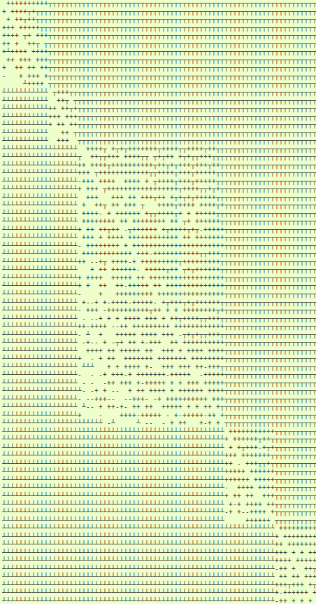
Fig. 18 Sparse quartiles-sorting decomposed outranking relation (extract).
- Legend:
- outranking for certain ( ┬ )
- outranked for certain ( ┴ )
- more or less outranking (+ )
- more or less outranked (-)
- indeterminate ( )
With a fill rate of 25%, the memory occupation of this sparse outranking digraph sg instance takes now only 769kB, compared to the 1.7MB required by a corresponding standard IntegerBipolarOutrankingDigraph instance.
1 2 | >>> print('%.0fkB' % (total_size(sg)/1024) )
769kB
|
For sparse outranking digraphs, the adjacency table is implemented as a dynamic self.relation(x,y) function instead of a double dictionary self.relation[x][y]:
1 2 3 4 5 6 7 8 9 10 11 12 13 14 15 16 17 18 19 20 21 22 23 24 25 26 27 28 29 30 31 32 33 | def relation(self, int x, int y):
"""
*Parameters*:
* x (int action key),
* y (int action key).
Dynamic construction of the global outranking
characteristic function *r(x S y)*.
"""
cdef int Min, Med, Max, rx, ry
Min = self.valuationdomain['min']
Med = self.valuationdomain['med']
Max = self.valuationdomain['max']
if x == y:
return Med
cx = self.actions[x]['component']
cy = self.actions[y]['component']
#print(self.components)
rx = self.components[cx]['rank']
ry = self.components[cy]['rank']
if rx == ry:
try:
rxpg = self.components[cx]['subGraph'].relation
return rxpg[x][y]
except AttributeError:
componentRanking = self.components[cx]['componentRanking']
if componentRanking.index(x) < componentRanking.index(x):
return Max
else:
return Min
elif rx > ry:
return Min
else:
return Max
|
Ranking big sets of decision alternatives¶
We may now rank the complete set of 100 decision alternatives by locally ranking with the Copeland or the NetFlows rule, for instance, all these individual components.
1 2 3 4 5 6 7 8 | >>> sg.boostedRanking
[22, 53, 3, 34, 56, 62, 24, 44, 50, 93, 41, 63, 29, 58,
96, 7, 43, 81, 91, 35, 25, 76, 66, 65, 8, 10, 1, 11, 61,
30, 48, 45, 68, 5, 89, 57, 59, 85, 82, 73, 33, 94, 70,
97, 20, 92, 71, 90, 95, 21, 28, 2, 36, 87, 40, 98, 46, 55,
100, 64, 17, 26, 27, 19, 69, 6, 38, 4, 37, 60, 31, 77, 78,
47, 99, 18, 12, 80, 54, 88, 39, 9, 72, 86, 42, 13, 23, 67,
52, 15, 32, 49, 51, 74, 16, 14, 75, 79, 83, 84]
|
When actually computing linear rankings of a set of alternatives, the local outranking relations are of no practical usage, and we may furthermore reduce the memory occupation of the resulting digraph by
- refining the ordering of the quantile classes by taking into account how well an alternative is outranking the lower limit of its quantile class, respectively the upper limit of its quantile class is not outranking the alternative;
- dropping the local outranking digraphs and keeping for each quantile class only a locally ranked list of alternatives.
We provide therefore the cSparseIntegerOutrankingDigraphs.cQuantilesRankingDigraph class.
1 2 3 4 5 6 7 8 9 10 11 12 13 14 15 16 17 18 19 20 21 22 23 24 25 26 27 28 29 | >>> qr = cQuantilesRankingDigraph(t,4)
>>> qr
*----- Object instance description --------------*
Instance class : cQuantilesRankingDigraph
Instance name : cRandomperftab_mp
# Actions : 100
# Criteria : 7
Sorting by : 4-Tiling
Ordering strategy : optimal
Ranking rule : Copeland
# Components : 47
Minimal order : 1
Maximal order : 10
Average order : 2.1
fill rate : 2.566%
---- Constructor run times (in sec.) ----
Nbr of threads : 1
Total time : 0.03702
QuantilesSorting : 0.01785
Preordering : 0.00022
Decomposing : 0.01892
Ordering : 0.00000
Attributes : ['runTimes', 'name', 'actions', 'order',
'dimension', 'sortingParameters', 'nbrOfCPUs',
'valuationdomain', 'profiles', 'categories',
'sorting', 'minimalComponentSize',
'decomposition', 'nbrComponents', 'nd',
'components', 'fillRate', 'maximalComponentSize',
'componentRankingRule', 'boostedRanking']
|
With this optimised quantile ordering strategy, we obtain now 47 performance equivalence classes.
1 2 3 4 5 6 7 8 9 10 11 12 13 14 15 16 17 18 19 20 21 22 23 24 25 26 27 28 29 30 31 | >>> qr.components
OrderedDict([
('c01', {'rank': 1,
'lowQtileLimit': ']0.75',
'highQtileLimit': '1.00]',
'componentRanking': [53]}),
('c02', {'rank': 2,
'lowQtileLimit': ']0.75',
'highQtileLimit': '1.00]',
'componentRanking': [3, 23, 63, 50]}),
('c03', {'rank': 3,
'lowQtileLimit': ']0.75',
'highQtileLimit': '1.00]',
'componentRanking': [34, 44, 56, 24, 93, 41]}),
...
...
...
('c45', {'rank': 45,
'lowQtileLimit': ']0.25',
'highQtileLimit': '0.50]',
'componentRanking': [49]}),
('c46', {'rank': 46,
'lowQtileLimit': ']0.25',
'highQtileLimit': '0.50]',
'componentRanking': [52, 16, 86]}),
('c47', {'rank': 47,
'lowQtileLimit': ']<',
'highQtileLimit': '0.25]',
'componentRanking': [79, 83, 84]})])
>>> print('%.0fkB' % (total_size(qr)/1024) )
208kB
|
We observe an even more considerably less voluminous memory occupation: 208kB compared to the 769kB of the SparseIntegerOutrankingDigraph instance. It is opportune, however, to measure the loss of quality of the resulting Copeland ranking when working with sparse outranking digraphs.
1 2 3 4 5 6 7 8 9 10 11 12 13 14 | >>> from cIntegerOutrankingDigraphs import *
>>> ig = IntegerBipolarOutrankingDigraph(t)
>>> print('Complete outranking : %+.4f'\
... % (ig.computeOrderCorrelation(ig.computeCopelandOrder())\
... ['correlation']))
Complete outranking : +0.7474
print('Sparse 4-tiling : %+.4f'\
... % (ig.computeOrderCorrelation(\
... list(reversed(sg.boostedRanking)))['correlation']))
Sparse 4-tiling : +0.7172
>>> print('Optimzed sparse 4-tiling: %+.4f'\
... % (ig.computeOrderCorrelation(\
... list(reversed(qr.boostedRanking)))['correlation']))
Optimzed sparse 4-tiling: +0.7051
|
The best ranking correlation with the pairwise outranking situations (+0.75) is naturally given when we apply the Copeland rule to the complete outranking digraph. When we apply the same rule to the sparse 4-tiled outranking digraph, we get a correlation of +0.72, and when applying the Copeland rule to the optimised 4-tiled digraph, we still obtain a correlation of +0.71. These results actually depend on the number of quantiles we use as well as on the given model of random performance tableau. In case of Random3ObjectivesPerformanceTableau instances, for instance, we would get in a similar setting a complete outranking correlation of +0.86, a sparse 4-tiling correlation of +0.82, and an optimzed sparse 4-tiling correlation of +0.81.
HPC quantiles ranking records¶
Following from the separability property of the q-tiles sorting of each action into each q-tiles class, the q-sorting algorithm may be safely split into as much threads as are multiple processing cores available in parallel. Furthermore, the ranking procedure being local to each diagonal component, these procedures may as well be safely processed in parallel threads on each component restricted outrankingdigraph.
Using the HPC platform of the University of Luxembourg (https://hpc.uni.lu/), the following run times for very big ranking problems could be achieved both:
by running the cythonized python modules in an Intel compiled virtual Python 3.6.5 environment [GCC Intel(R) 17.0.1 –enable-optimizations c++ gcc 6.3 mode] on Debian 8 Linux.
{kind=link}
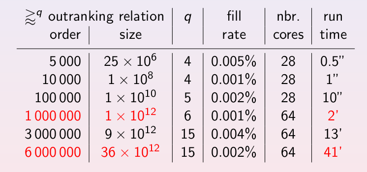
Fig. 19 HPC-UL Ranking Performance Records (Spring 2018)
Example python session on the HPC-UL Iris-126 -skylake node [7]
(myPy365ICC) [rbisdorff@iris-126 Test]$ python Python 3.6.5 (default, May 9 2018, 09:54:28) [GCC Intel(R) C++ gcc 6.3 mode] on linux Type "help", "copyright", "credits" or "license" for more information. >>>>>> from cRandPerfTabs import\ ... cRandom3ObjectivesPerformanceTableau as cR3ObjPT >>> pt = cR3ObjPT(numberOfActions=1000000, ... numberOfCriteria=21, ... weightDistribution='equiobjectives', ... commonScale = (0.0,1000.0), ... commonThresholds = [(2.5,0.0),(5.0,0.0),(75.0,0.0)], ... commonMode = ['beta','variable',None], ... missingDataProbability=0.05, ... seed=16) >>> import cSparseIntegerOutrankingDigraphs as iBg >>> qr = iBg.cQuantilesRankingDigraph(pt,quantiles=10, ... quantilesOrderingStrategy='optimal', ... minimalComponentSize=1, ... componentRankingRule='NetFlows', ... LowerClosed=False, ... Threading=True, ... tempDir='/tmp', ... nbrOfCPUs=28) >>> qr *----- Object instance description --------------* Instance class : cQuantilesRankingDigraph Instance name : random3ObjectivesPerfTab_mp # Actions : 1000000 # Criteria : 21 Sorting by : 10-Tiling Ordering strategy : optimal Ranking rule : NetFlows # Components : 233645 Minimal order : 1 Maximal order : 153 Average order : 4.3 fill rate : 0.001% ---- Constructor run times (in sec.) ---- Nbr of threads : 28 Total time : 177.02770 QuantilesSorting : 99.55377 Preordering : 5.17954 Decomposing : 72.29356
On this 2x14c Intel Xeon Gold 6132 @ 2.6 GHz equipped HPC node with 132GB RAM [7], deciles sorting and locally ranking a million decision alternatives evaluated on 21 incommensurable criteria, by balancing an economic, an environmental and a societal decision objective, takes us about 3 minutes (see Lines 37-42 above); with 1.5 minutes for the deciles sorting and, a bit more than one minute, for the local ranking of the individual components.
The optimised deciles sorting leads to 233645 components (see Lines 32-36 above) with a maximal order of 153. The fill rate of the adjacency table is reduced to 0.001%. Of the potential trillion (10^12) pairwise outrankings, we effectively keep only 10 millions (10^7). This high number of components results from the high number of involved performance criteria (21), leading in fact to a very refined epistemic discrimination of majority outranking margins.
A non-optimised deciles sorting would instead give at most 110 components with inevitably very big intractable local digraph orders. Proceeding with a more detailed quantiles sorting, for reducing the induced decomposing run times, leads however quickly to intractable quantiles sorting times. A good compromise is given when the quantiles sorting and decomposing steps show somehow equivalent run times; as is the case in our example session: 99.6 versus 77.3 seconds (see Lines 40 and 42 above).
Let us inspect the 21 marginal performances of the five best-ranked alternatives listed below.
1 2 3 4 5 6 7 8 9 10 11 12 13 14 15 16 17 18 19 20 21 22 23 24 25 26 27 | >>> pt.showPerformanceTableau(\
... actionsSubset=qr.boostedRanking[:5],\
... Transposed=True)
*---- performance tableau -----*
criteria | weights | #773909 #668947 #567308 #578560 #426464
---------|-------------------------------------------------------
'Ec01' | 42 | 969.81 844.71 917.00 NA 808.35
'So02' | 48 | NA 891.52 836.43 NA 899.22
'En03' | 56 | 687.10 NA 503.38 873.90 NA
'So04' | 48 | 455.05 845.29 866.16 800.39 956.14
'En05' | 56 | 809.60 846.87 939.46 851.83 950.51
'Ec06' | 42 | 919.62 802.45 717.39 832.44 974.63
'Ec07' | 42 | 889.01 722.09 606.11 902.28 574.08
'So08' | 48 | 862.19 699.38 907.34 571.18 943.34
'En09' | 56 | 857.34 817.44 819.92 674.60 376.70
'Ec10' | 42 | NA 874.86 NA 847.75 739.94
'En11' | 56 | NA 824.24 855.76 NA 953.77
'Ec12' | 42 | 802.18 871.06 488.76 841.41 599.17
'En13' | 56 | 827.73 839.70 864.48 720.31 877.23
'So14' | 48 | 943.31 580.69 827.45 815.18 461.04
'En15' | 56 | 794.57 801.44 924.29 938.70 863.72
'Ec16' | 42 | 581.15 599.87 949.84 367.34 859.70
'So17' | 48 | 881.55 856.05 NA 796.10 655.37
'Ec18' | 42 | 863.44 520.24 919.75 865.14 914.32
'So19' | 48 | NA NA NA 790.43 842.85
'Ec20' | 42 | 582.52 831.93 820.92 881.68 864.81
'So21' | 48 | 880.87 NA 628.96 746.67 863.82
|
The given ranking problem involves 8 criteria assessing the economic performances, 7 criteria assessing the societal performances and 6 criteria assessing the environmental performances of the decision alternatives. The sum of criteria significance weights (336) is the same for all three decision objectives. The five best-ranked alternatives are, in decreasing order: #773909, #668947, #567308, #578560 and #426464.
Their random performance evaluations were obviously drawn on all criteria with a good (+) performance profile, i.e. a Beta(alpha = 5.8661, beta = 2.62203) law (see the tutorial Generating random performance tableaux).
1 2 3 4 5 6 7 8 | >>> for x in qr.boostedRanking[:5]:
... print(pt.actions[x]['name'],\
... pt.actions[x]['profile'])
#773909 {'Eco': '+', 'Soc': '+', 'Env': '+'}
#668947 {'Eco': '+', 'Soc': '+', 'Env': '+'}
#567308 {'Eco': '+', 'Soc': '+', 'Env': '+'}
#578560 {'Eco': '+', 'Soc': '+', 'Env': '+'}
#426464 {'Eco': '+', 'Soc': '+', 'Env': '+'}
|
We consider now a partial performance tableau best10, consisting only, for instance, of the ten best-ranked alternatives, with which we may compute a corresponding integer outranking digraph valued in the range (-1008, +1008).
1 2 3 4 5 6 7 8 9 10 11 12 13 14 15 16 17 18 19 20 21 22 23 24 25 26 | >>> best10 = cPartialPerformanceTableau(pt,qr.boostedRanking[:10])
>>> from cIntegerOutrankingDigraphs import *
>>> g = IntegerBipolarOutrankingDigraph(best10)
>>> >>> g.valuationdomain
{'min': -1008, 'med': 0, 'max': 1008, 'hasIntegerValuation': True}
>>> g.showRelationTable(ReflexiveTerms=False)
* ---- Relation Table -----
r(x>y) | #773909 #668947 #567308 #578560 #426464 #298061 #155874 #815552 #279729 #928564
--------|-----------------------------------------------------------------------------------
#773909 | - +390 +90 +270 -50 +340 +220 +60 +116 +222
#668947 | +78 - +42 +250 -22 +218 +56 +172 +74 +64
#567308 | +70 +418 - +180 +156 +174 +266 +78 +256 +306
#578560 | -4 +78 +28 - -12 +100 -48 +154 -110 -10
#426464 | +202 +258 +284 +138 - +416 +312 +382 +534 +278
#298061 | -48 +68 +172 +32 -42 - +54 +48 +248 +374
#155874 | +72 +378 +322 +174 +274 +466 - +212 +308 +418
#815552 | +78 +126 +272 +318 +54 +194 +172 - -14 +22
#279729 | +240 +230 -110 +290 +72 +140 +388 +62 - +250
#928564 | +22 +228 -14 +246 +36 +78 +56 +110 +318 -
r(x>y) image range := [-1008;+1008]
>>> g.condorcetWinners()
[155874, 426464, 567308]
>>> g.computeChordlessCircuits()
[]
>>> g.computeTransitivityDegree()
Decimal('0.78')
|
Three alternatives -#155874, #426464 and #567308- qualify as Condorcet winners, i.e. they each positively outrank all the other nine alternatives. No chordless outranking circuits are detected, yet the transitivity of the apparent outranking relation is not given. And, no clear ranking alignment hence appears when inspecting the strict outranking digraph (ie the codual ~(-g) of g) shown in Fig. 20.
1 2 3 4 | >>> (~(-g)).exportGraphViz()
*---- exporting a dot file dor GraphViz tools ---------*
Exporting to converse-dual_rel_best10.dot
dot -Tpng converse-dual_rel_best10.dot -o converse-dual_rel_best10.png
|
{kind=link}
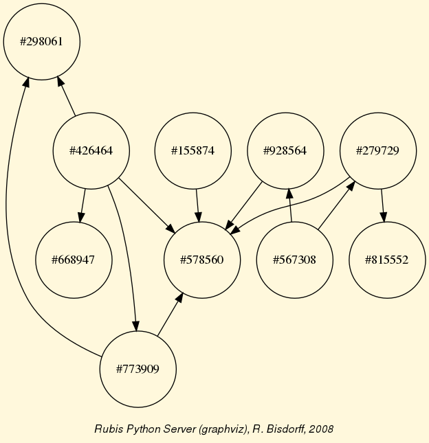
Fig. 20 Validated strict outranking situations between the ten best-ranked alternatives
Restricted to these ten best-ranked alternatives, the Copeland, the NetFlows as well as the Kemeny ranking rule will all rank alternative #426464 first and alternative #578560 last. Otherwise the three ranking rules produce in this case more or less different rankings.
1 2 3 4 5 6 7 8 | >>> g.computeCopelandRanking()
[426464, 567308, 155874, 279729, 773909, 928564, 668947, 815552, 298061, 578560]
>>> g.computeNetFlowsRanking()
[426464, 155874, 773909, 567308, 815552, 279729, 928564, 298061, 668947, 578560]
>>> from linearOrders import *
>>> ke = KemenyOrder(g,orderLimit=10)
>>> ke.kemenyRanking
[426464, 773909, 155874, 815552, 567308, 298061, 928564, 279729, 668947, 578560]
|
Note
It is therefore important to always keep in mind that, based on pairwise outranking situations, there does not exist any unique optimal ranking; especially when we face such big data problems. Changing the number of quantiles, the component ranking rule, the optimised quantile ordering strategy, all this will indeed produce, sometimes even substantially, different global ranking results.
Back to Content Table
Computing a best choice recommendation¶
See also the lecture 7 notes from the MICS Algorithmic Decision Theory course: [ADT-L7].
What site to choose ?¶
A SME, specialized in printing and copy services, has to move into new offices, and its CEO has gathered seven potential office sites.
address ID Comment Avenue de la liberté A High standing city center Bonnevoie B Industrial environment Cessange C Residential suburb location Dommeldange D Industrial suburb environment Esch-Belval E New and ambitious urbanization far from the city Fentange F Out in the countryside Avenue de la Gare G Main town shopping street
Three decision objectives are guiding the CEO’s choice:
- minimize the yearly costs induced by the moving,
- maximize the future turnover of the SME,
- maximize the new working conditions.
The decision consequences to take into account for evaluating the potential new office sites with respect to each of the three objectives are modelled by the following family of criteria.
Objective ID Name Comment Yearly costs C Costs Annual rent, charges, and cleaning Future turnover St Standing Image and presentation Future turnover V Visibility Circulation of potential customers Future turnover Pr Proximity Distance from town center Working conditions W Space Working space Working conditions Cf Comfort Quality of office equipment Working conditions P Parking Available parking facilities
The evaluation of the seven potential sites on each criterion are gathered in the following performance tableau.
Criterion weight A B C D E F G Costs 3.0 35.0K€ 17.8K€ 6.7K€ 14.1K€ 34.8K€ 18.6K€ 12.0K€ Stan 1.0 100 10 0 30 90 70 20 Visi 1.0 60 80 70 50 60 0 100 Prox 1.0 100 20 80 70 40 0 60 Wksp 1.0 75 30 0 55 100 0 50 Wkcf 1.0 0 100 10 30 60 80 50 Park 1.0 90 30 100 90 70 0 80
Except the Costs criterion, all other criteria admit for grading a qualitative satisfaction scale from 0% (worst) to 100% (best). We may thus notice that site A is the most expensive, but also 100% satisfying the Proximity as well as the Standing criterion. Whereas the site C is the cheapest one; providing however no satisfaction at all on both the Standing and the Working Space criteria.
All qualitative criteria, supporting their respective objective, are considered to be equi-significant (weights = 1.0). As a consequence, the three objectives are considered equally important (total weight = 3.0 each).
Concerning annual costs, we notice that the CEO is indifferent up to a performance difference of 1000€, and he actually prefers a site if there is at least a positive difference of 2500€. The grades observed on the six qualitative criteria (measured in percentages of satisfaction) are very subjective and rather imprecise. The CEO is hence indifferent up to a satisfaction difference of 10%, and he claims a significant preference when the satisfaction difference is at least of 20%. Furthermore, a satisfaction difference of 80% represents for him a considerably large performance difference, triggering a veto situation the case given (see [BIS-2013]).
In view of this performance tableau, what is now the office site we may recommend to the CEO as best choice ?
Performance tableau¶
The XMCDA 2.0 encoded version of this performance tableau is available for downloading here officeChoice.xml.
We may inspect the performance tableau data with the computing resources provided by the perfTabs module module.
1 2 3 4 5 6 7 8 9 10 11 12 13 14 | >>> from perfTabs import *
>>> t = XMCDA2PerformanceTableau('officeChoice')
>>> help(t) # for discovering all the methods available
>>> t.showPerformanceTableau()
*---- performance tableau -----*
criteria | weights | 'A' 'B' 'C' 'D' 'E' 'F' 'G'
---------|---------------------------------------------------------------------------------
'C' | 3.00 | -35000.00 -17800.00 -6700.00 -14100.00 -34800.00 -18600.00 -12000.00
'Cf' | 1.00 | 0.00 100.00 10.00 30.00 60.00 80.00 50.00
'P' | 1.00 | 90.00 30.00 100.00 90.00 70.00 0.00 80.00
'Pr' | 1.00 | 100.00 20.00 80.00 70.00 40.00 0.00 60.00
'St' | 1.00 | 100.00 10.00 0.00 30.00 90.00 70.00 20.00
'V' | 1.00 | 60.00 80.00 70.00 50.00 60.00 0.00 100.00
'W' | 1.00 | 75.00 30.00 0.00 55.00 100.00 0.00 50.00
|
We thus recover all the input data. To measure the actual preference discrimination we observe on each criterion, we may use the PerformanceTableau.showCriteria() method.
1 2 3 4 5 6 7 8 9 10 11 12 13 14 | >>> t.showCriteria()
*---- criteria -----*
C 'Costs'
Scale = (Decimal('0.00'), Decimal('50000.00'))
Weight = 0.333
Threshold ind : 1000.00 + 0.00x ; percentile: 0.095
Threshold pref : 2500.00 + 0.00x ; percentile: 0.143
Cf 'Comfort'
Scale = (Decimal('0.00'), Decimal('100.00'))
Weight = 0.111
Threshold ind : 10.00 + 0.00x ; percentile: 0.095
Threshold pref : 20.00 + 0.00x ; percentile: 0.286
Threshold veto : 80.00 + 0.00x ; percentile: 0.905
...
|
On the Costs criterion, 9.5% of the performance differences are considered insignificant and 14.3% below the preference discrimination threshold (lines 6-7). On the qualitative Comfort criterion, we observe again 9.5% of insignificant performance differences (line 11). Due to the imprecision in the subjective grading, we notice here 28.6% of performance differences below the preference discrimination threshold (Line 12). Furthermore, 100.0 - 90.5 = 9.5% of the performance differences are judged considerably large (Line 13); 80% and more of satisfaction differences triggering in fact a veto situation. Same information is available for all the other criteria.
A colorful comparison of all the performances is shown by the heat map statistics, illustrating the respective quantile class of each performance. As the set of potential alternatives is tiny, we choose here a classification into performance quintiles.
>>> t.showHTMLPerformanceHeatmap(colorLevels=5)
{kind=link}
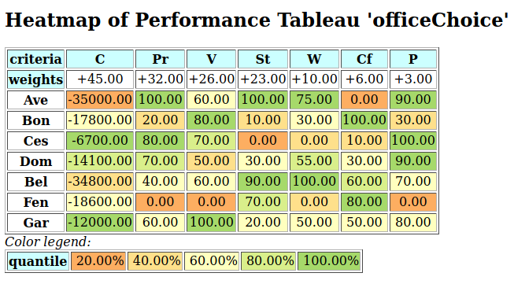
Fig. 21 Heatmap of the office choice performance tableau
Site A shows extreme and contradictory performances: highest Costs and no Working Comfort on one hand, and total satisfaction with respect to Standing, Proximity and Parking facilities on the other hand. Similar, but opposite, situation is given for site C: unsatisfactory Working Space, no Standing and no Working Comfort on the one hand, and lowest Costs, best Proximity and Parking facilities on the other hand. Contrary to these contradictory alternatives, we observe two appealing compromise decision alternatives: sites D and G. Finally, site F is clearly the less satisfactory alternative of all.
Outranking digraph¶
To help now the CEO choosing the best site, we are going to compute pairwise outrankings (see [BIS-2013]) on the set of potential sites. For two sites x and y, the situation “x outranks y”, denoted (x S y), is given if there is:
- a significant majority of criteria concordantly supporting that site x is at least as satisfactory as site y, and
- no considerable counter-performance observed on any discordant criterion.
The credibility of each pairwise outranking situation (see [BIS-2013]), denoted r(x S y), is measured in a bipolar significance valuation [-100.00, 100.00], where positive terms r(x S y) > 0.0 indicate a validated, and negative terms r(x S y) < 0.0 indicate a non-validated outrankings; whereas the median value r(x S y) = 0.0 represents an indeterminate situation (see [BIS-2004]).
{kind=link}
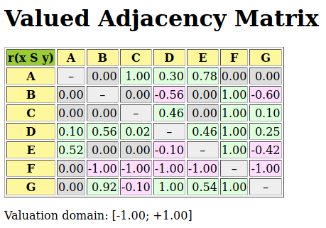
Fig. 22 The office choice outranking digraph
For computing such a bipolar-valued outranking digraph from the given performance tableau t, we use the BipolarOutrankingDigraph constructor from the outrankingDigraphs module module. The Digraph.showHTMLRelationTable method shows here the resulting bipolar-valued adjacency matrix in a system browser window (see Fig. 22).
1 2 3 | >>> from outrankingDigraphs import BipolarOutrankingDigraph
>>> g = BipolarOutrankingDigraph(t)
>>> g.showHTMLRelationTable()
|
We may notice that Alternative D is positively outranking all other potential office sites (a Condorcet winner). Yet, alternatives A (the most expensive) and C (the cheapest) are not outranked by any other site; they are in fact weak Condorcet winners.
1 2 3 4 | >>> g.condorcetWinners()
['D']
>>> g.weakCondorcetWinners()
['A', 'C', 'D']
|
We may get even more insight in the apparent outranking situations when looking at the Condorcet digraph (see Fig. 23).
1 2 3 4 | >>> g.exportGraphViz('officeChoice')
*---- exporting a dot file for GraphViz tools ---------*
Exporting to officeChoice.dot
dot -Grankdir=BT -Tpng officeChoice.dot -o officeChoice.png
|
{kind=link}
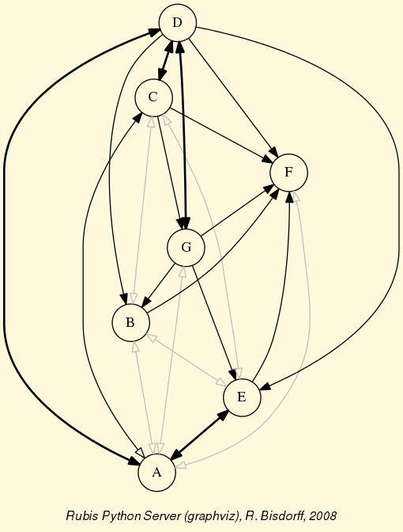
Fig. 23 The office choice outranking digraph
One may check that the outranking digraph g does not admit in fact a cyclic strict preference situation.
1 2 3 4 5 6 | >>> g.computeChordlessCircuits()
[]
>>> g.showChordlessCircuits()
No circuits observed in this digraph.
*---- Chordless circuits ----*
0 circuits.
|
Rubis best choice recommendations¶
Following the Rubis outranking method (see [BIS-2008]), potential best choice recommendations are determined by the outranking prekernels (weakly independent and strictly outranking choices) of the chordless odd circuits augmented outranking digraph. As we observe no circuits here, we may directly compute the prekernels of g (see the tutorial On computing digraph kernels).
1 2 3 4 5 6 7 8 9 10 11 12 13 14 15 16 17 18 19 20 21 22 23 24 25 26 27 28 29 30 31 32 33 34 35 | >>> g.showPreKernels()
*--- Computing preKernels ---*
Dominant preKernels :
['D']
independence : 100.0
dominance : 11.111
absorbency : -100.0
covering : 1.000
['B', 'E', 'C']
independence : 0.00
dominance : 11.111
absorbency : -100.0
covering : 0.500
['A', 'G']
independence : 0.00
dominance : 55.556
absorbency : 0.00
covering : 0.700
Absorbent preKernels :
['F', 'A']
independence : 0.00
dominance : 0.00
absorbency : 100.0
covering : 0.700
*----- statistics -----
graph name: rel_officeChoice.xml
number of solutions
dominant kernels : 3
absorbent kernels: 1
cardinality frequency distributions
cardinality : [0, 1, 2, 3, 4, 5, 6, 7]
dominant kernel : [0, 1, 1, 1, 0, 0, 0, 0]
absorbent kernel: [0, 0, 1, 0, 0, 0, 0, 0]
Execution time : 0.00018 sec.
Results in sets: dompreKernels and abspreKernels.
|
We notice three potential best choice recommendations: the Condorcet winner D (Line 4), the triplet B, C and E (Line 9), and finally the pair A and G (Line 14). The Rubis best choice recommendation is given by the most determined prekernel; the one supported by the most significant criteria coalition. This result is shown with the following command.
1 2 3 4 5 6 7 8 9 10 11 12 13 14 15 16 17 18 19 20 21 22 23 24 25 26 27 28 29 30 31 32 33 34 35 36 37 38 39 40 41 42 43 | >>> g.showBestChoiceRecommendation(CoDual=False)
*****************************************
Rubis best choice recommendation(s) (BCR)
(in decreasing order of determinateness)
Credibility domain: [-100.00,100.00]
=== >> potential best choice(s)
* choice : ['D']
+-irredundancy : 100.00
independence : 100.00
dominance : 11.11
absorbency : -100.00
covering (%) : 100.00
determinateness (%) : 55.56
- most credible action(s) = { 'D': 2.07, }
=== >> potential best choice(s)
* choice : ['A', 'G']
+-irredundancy : 0.00
independence : 0.00
dominance : 55.56
absorbency : 0.00
covering (%) : 70.00
determinateness (%) : 50.00
- most credible action(s) = { }
=== >> potential best choice(s)
* choice : ['B', 'C', 'E']
+-irredundancy : 0.00
independence : 0.00
dominance : 11.11
absorbency : -100.00
covering (%) : 50.00
determinateness (%) : 50.00
- most credible action(s) = { }
=== >> potential worst choice(s)
* choice : ['A', 'F']
+-irredundancy : 0.00
independence : 0.00
dominance : 0.00
absorbency : 100.00
covered (%) : 70.00
determinateness (%) : 50.00
- most credible action(s) = { }
Execution time: 0.014 seconds
~~~~~~~~~~~~~~~~~~~~~~~~~~~~~
|
We notice in Line 6 above that the most significantly supported best choice recommendation is indeed the Condorcet winner D with a majority of 56% of the criteria significance (see Line 12). Both other potential best choice recommendations, as well as the potential worst choice recommendation, are not positively validated as best, resp. worst choices. They may or may not be considered so. Alternative A, with extreme contradictory performances, appears both, in a best and a worst choice recommendation (see Lines 27 and 37) and seams hence not actually comparable to its competitors.
The same Rubis best choice recommendation, encoded in XMCDA 2.0 and presented in the default system browser, is provided by the xmcda module. In a python3 session working in the directory where the XMCDA encoded problem data is stored, we may proceed as follows.
1 2 3 4 | >>> import xmcda
>>> xmcda.showXMCDARubisBestChoiveRecommendation(\
prolemFileName='officeChoice',\
valuationType='bipolar')
|
And, in a system browser window, browse the solution file.
The valuationType parameter allows to work:
- on the standard bipolar-valued outranking digraph (valuationType = ‘bipolar’, default),
- on the normalized –[-1,1] valued– bipolar outranking digraph (valuationType = ‘normalized’),
- on the robust –ordinal criteria weights– bipolar outranking digraph (valuationType = ‘robust’),
- on the confident outranking digraph (valuationType = ‘confident’),
- ignoring considerable performances differences (valuationType = ‘noVeto’).
Rubis strict best choice recommendation¶
When comparing the performances of alternatives D and G on a pairwise perspective (see below), we notice that, with the given preference discrimination thresholds, alternative G is actually certainly at least as good as alternative D ( r(G outranks D) = 100.0).
1 2 3 4 5 6 7 8 9 10 11 12 13 14 | >>> g.showPairwiseComparison('G','D')
*------------ pairwise comparison ----*
Comparing actions : (G, D)
crit. wght. g(x) g(y) diff. | ind pref concord |
=========================================================================
C 3.00 -12000.00 -14100.00 +2100.00 | 1000.00 2500.00 +3.00 |
Cf 1.00 50.00 30.00 +20.00 | 10.00 20.00 +1.00 |
P 1.00 80.00 90.00 -10.00 | 10.00 20.00 +1.00 |
Pr 1.00 60.00 70.00 -10.00 | 10.00 20.00 +1.00 |
St 1.00 20.00 30.00 -10.00 | 10.00 20.00 +1.00 |
V 1.00 100.00 50.00 +50.00 | 10.00 20.00 +1.00 |
W 1.00 50.00 55.00 -5.00 | 10.00 20.00 +1.00 |
=========================================================================
Valuation in range: -9.00 to +9.00; global concordance: +9.00
|
However, we must as well notice that the cheapest alternative C is in fact strictly outranking alternative G.
1 2 3 4 5 6 7 8 9 10 11 12 13 14 | >>> g.showPairwiseComparison('C','G')
*------------ pairwise comparison ----*
Comparing actions : (C, G)/(G, C)
crit. wght. g(x) g(y) diff. | ind. pref. (C,G)/(G,C) |
=============================================================================
C 3.00 -6700.00 -12000.00 +5300.00 | 1000.00 2500.00 +3.00/-3.00 |
Cf 1.00 10.00 50.00 -40.00 | 10.00 20.00 -1.00/+1.00 |
P 1.00 100.00 80.00 +20.00 | 10.00 20.00 +1.00/-1.00 |
Pr 1.00 80.00 60.00 +20.00 | 10.00 20.00 +1.00/-1.00 |
St 1.00 0.00 20.00 -20.00 | 10.00 20.00 -1.00/+1.00 |
V 1.00 70.00 100.00 -30.00 | 10.00 20.00 -1.00/+1.00 |
W 1.00 0.00 50.00 -50.00 | 10.00 20.00 -1.00/+1.00 |
=========================================================================
Valuation in range: -9.00 to +9.00; global concordance: +1.00/-1.00
|
To model these strict outranking situations, we may compute the Rubis best choice recommendation on the codual, the converse (~) of the dual (-), of the outranking digraph instance g (see [BIS-2013]), as follows.
1 2 3 4 5 6 7 8 9 10 11 12 13 14 15 16 17 18 19 20 21 22 23 24 25 26 | >>> g.showRubisBestChoiceRecommendation(CoDual=True,ChoiceVector=True)
* --- Rubis best choice recommendation(s) ---*
(in decreasing order of determinateness)
Credibility domain: {'min':-100.0, 'max': 100.0', 'med':0.0'}
=== >> potential best choice(s)
* choice : ['A', 'C', 'D']
+-irredundancy : 0.00
independence : 0.00
dominance : 11.11
absorbency : 0.00
covering (%) : 41.67
determinateness (%) : 53.17
characteristic vector :
{ 'D': 11.11, 'A': 0.00, 'C': 0.00, 'G': 0.00,
'B': -11.11, 'E': -11.11, 'F': -11.11 }
=== >> potential worst choice(s)
* choice : ['A', 'F']
+-irredundancy : 0.00
independence : 0.00
dominance : -55.56
absorbency : 100.00
covered (%) : 50.00
determinateness (%) : 50.00
characteristic vector :
{'A': 0.00, 'B': 0.00, 'C': 0.00, 'D': 0.00,
'E': 0.00, 'F': 0.00, 'G': 0.00, }
|
It is interesting to notice that the strict best choice recommendation consists in the set of weak Condorcet winners: ‘A’, ‘C’ and ‘D’ (see Line 6). In the corresponding characteristic vector (see Line 14-15), representing the bipolar credibility degree with which each alternative may indeed be considered a best choice (see the tutorial on Bipolar-valued kernel membership characteristic vectors and [BIS-2006a], [BIS-2006b]), we find confirmed that alternative D is the only positively validated one, whereas both extreme alternatives - A (the most expensive) and C (the cheapest) - stay in an indeterminate situation. They may be potential best choice candidates besides D. Notice furthermore that compromise alternative G, while not actually included in the crisp best choice recommendation, shows as well an indeterminate situation with respect to being or not a potential best choice candidate.
We may also notice (see Line 17 and Line 21) that both alternatives A and F are reported as certainly outranked choices, hence a potential worst choice recommendation . This confirms again the global incomparability status of alternative A.
Weakly ordering¶
To get a more complete insight in the overall strict outranking situations, we may use the weakOrders.RankingByChoosingDigraph constructor imported from the weakOrders module, for computing a ranking-by-choosing result from the strict outranking digraph instance gcd.
1 2 3 4 5 6 7 8 9 10 11 12 13 14 15 16 17 18 19 | >>> from weakOrders import RankingByChoosingDigraph
>>> gcd = ~(-g)
>>> rbc = RankingByChoosingDigraph(gcd)
Threading ... ## multiprocessing if 2 cores are available
Exiting computing threads
>>> rbc.showRankingByChoosing()
Ranking by Choosing and Rejecting
1st ranked ['D'] (0.28)
2nd ranked ['C', 'G'] (0.17)
2nd last ranked ['B', 'C', 'E'] (0.22)
1st last ranked ['A', 'F'] (0.50)
>>> rbc.exportGraphViz('officeChoiceRanking')
*---- exporting a dot file for GraphViz tools ---------*
Exporting to officeChoiceRanking.dot
0 { rank = same; A; C; D; }
1 { rank = same; G; }
2 { rank = same; E; B; }
3 { rank = same; F; }
dot -Grankdir=TB -Tpng officeChoiceRanking.dot -o officeChoiceRanking.png
|
{kind=link}
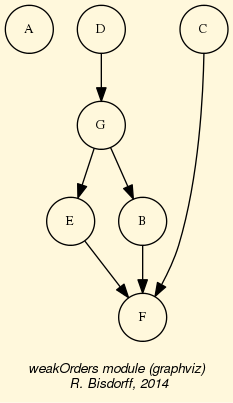
Fig. 24 Ranking-by-choosing from the office choice outranking digraph
In this ranking-by-choosing method, where we operate the epistemic fusion of iterated (strict) best and worst choices, compromise alternative D is indeed ranked before compromise alternative G. If the computing node supports multiple processor cores, best and worst choosing iterations are run in parallel. The overall partial ordering result shows again the important fact that the most expensive site A, and the cheapest site C, both appear incomparable with most of the other alternatives, as is apparent from the Hasse diagram (see above) of the ranking-by-choosing relation.
The best choice recommendation appears hence depending on the very importance the CEO is attaching to each of the three objectives he is considering. In the setting here, where he considers all three objectives to be equally important (minimize costs = 3.0, maximize turnover = 3.0, and maximize working conditions = 3.0), site D represents actually the best compromise. However, if Costs do not play much a role, it would be perhaps better to decide to move to the most advantageous site A; or if, on the contrary, Costs do matter a lot, moving to the cheapest alternative C could definitely represent a more convincing recommendation.
It might be worth, as an exercise, to modify on the one hand this importance balance in the XMCDA data file by lowering the significance of the Costs criterion; all criteria are considered equi-significant (weight = 1.0) for instance. It may as well be opportune, on the other hand, to rank the importance of the three objectives as follows: minimize costs (weight = 9.0) > maximize turnover (weight = 3 x 2.0) > maximize working conditions (weight = 3 x 1.0). What will become the best choice recommendation under both working hypotheses?
Back to Content Table
Rating with learned quantile norms¶
Introduction¶
In this tutorial we address the problem of rating multiple criteria performances of a set of potential decision alternatives with respect to empirical order statistics, ie performance quantiles learned from historical performance data gathered from similar decision alternatives observed in the past (see [CPSTAT-L5]).
To illustrate the decision problem we face, consider for a moment that, in a given decision aid study, we observe, for instance in the Table below, the multi-criteria performances of two potential decision alternatives, named a1001 and a1010, marked on 7 incommensurable preference criteria: 2 costs criteria c1 and c2 (to minimize) and 6 benefits criteria b1 to b5 (to maximize).
Criterion b1 b2 b3 b4 b5 c1 c2 weight 2 2 2 2 2 5 5 a1001 37.0 2 2 61.0 31.0 -4 -40.0 a1010 32.0 9 6 55.0 51.0 -4 -35.0
The performances on benefits criteria b1, b4 and b5 are measured on a cardinal scale from 0.0 (worst) to 100.0 (best) whereas, the performances on the benefits criteria b2 and b3 and on the cost criterion c1 are measured on an ordinal scale from 0 (worst) to 10 (best), respectively -10 (worst) to 0 (best). The performances on the cost criterion c2 are again measured on a cardinal negative scale from -100.00 (worst) to 0.0 (best).
The importance (sum of weights) of the costs criteria is equal to the importance (sum of weights) of the benefits criteria taken all together.
The non trivial decision problem we now face here, is to decide, how the multiple criteria performances of a1001, respectively a1010, may be rated (excellent ? good ?, or fair ?; perhaps even, weak ? or very weak ?) in an order statistical sense, when compared with all potential similar multi-criteria performances one has already encountered in the past.
To solve this absolute rating decision problem, first, we need to estimate multi-criteria performance quantiles from historical records.
Incremental learning of historical performance quantiles¶
See also the technical documentation of the performanceQuantiles module.
Suppose that we see flying in random multiple criteria performances from a given model of random performance tableau (see the randomPerfTabs module). The question we address here is to estimate empirical performance quantiles on the basis of so far observed performance vectors. For this task, we are inspired by [CHAM-2006] and [NR3-2007], who present an efficient algorithm for incrementally updating a quantile-binned cumulative distribution function (CDF) with newly observed CDFs.
The performanceQuantiles.PerformanceQuantiles class implements such a performance quantiles estimation based on a given performance tableau. Its main components are:
- Ordered objectives and a criteria dictionaries from a valid performance tableau instance;
- A list quantileFrequencies of quantile frequencies like quartiles [0.0, 0.25, 05, 0.75,1.0], quintiles [0.0, 0.2, 0.4, 0.6, 0.8, 1.0] or deciles [0.0, 0.1, 0.2, … 1.0] for instance;
- An ordered dictionary limitingQuantiles of so far estimated lower (default) or upper quantile class limits for each frequency per criterion;
- An ordered dictionary historySizes for keeping track of the number of evaluations seen so far per criterion. Missing data may make these sizes vary from criterion to criterion.
Below, an example Python session concerning 900 decision alternatives randomly generated from a Cost-Benefit Performance tableau model from which are also drawn the performances of alternatives a1001 and a1010 above.
1 2 3 4 5 6 7 8 9 10 11 12 13 14 | >>> from performanceQuantiles import PerformanceQuantiles
>>> from randomPerfTabs import RandomCBPerformanceTableau
>>> nbrActions=900
>>> nbrCrit = 7
>>> seed = 100
>>> tp = RandomCBPerformanceTableau(numberOfActions=nbrActions,\
... numberOfCriteria=nbrCrit,seed=seed)
>>> pq = PerformanceQuantiles(tp,\
... numberOfBins = 'quartiles',\
... LowerClosed=True)
>>> pq.__dict__.keys()
dict_keys(['objectives', 'LowerClosed', 'name',
'quantilesFrequencies', 'criteria', 'historySizes',
'limitingQuantiles', ... ])
|
The performanceQuantiles.PerformanceQuantiles class parameter numberOfBins (see Line 9 above), choosing the wished number of quantile frequencies, may be either quartiles (4 bins), quintiles (5 bins), deciles (10 bins) , dodeciles (20 bins) or any other integer number of quantile bins. The quantile bins may be either lower closed (default) or upper-closed.
1 2 3 4 5 6 7 8 9 10 11 12 13 14 15 16 | >>> # Printing out the estimated quartile limits
>>> pq.showLimitingQuantiles(ByObjectives=True)
---- Historical performance quantiles -----*
Costs
criteria | weights | '0.00' '0.25' '0.50' '0.75' '1.00'
---------|-------------------------------------------------------
'c1' | 5 | -10 -7 -5 -3 0
'c2' | 5 | -96.37 -70.65 -50.10 -30.00 -1.43
Benefits
criteria | weights | '0.00' '0.25' '0.50' '0.75' '1.00'
---------|-------------------------------------------------------
'b1' | 2 | 1.99 29.82 49,44 70.73 99.83
'b2' | 2 | 0 3 5 7 10
'b3' | 2 | 0 3 5 7 10
'b4' | 2 | 3.27 30.10 50.82 70.89 98.05
'b5' | 2 | 0.85 29.08 48.55 69.98 97.56
|
Both objectives are equi-important; the sum of weights (10) of the costs criteria balance the sum of weights (10) of the benefits criteria (see column 2). The preference direction of the costs criteria c1 and c2 is negative; the lesser the costs the better it is, whereas all the benefits criteria b1 to b5 show positive preference directions, ie the higher the benefits the better it is. The columns entitled ‘0.0’, resp. ‘1.0’ show the quartile Q0, resp. Q4, ie the worst, resp. best performance observed so far on each criterion. Column ‘0.5’ shows the median (Q2) observed on the criteria.
New decision alternatives with random multiple criteria performance vectors from the same random performance tableau model may now be generated with ad hoc random performance generators. We provide for experimental purpose, in the randomPerfTabs module, three such generators: one for the standard randomPerfTabs.RandomPerformanceTableau model, one the for the two objectives randomPerfTabs.RandomCBPerformanceTableau Cost-Benefit model, and one for the randomPerfTabs.Random3ObjectivesPerformanceTableau model with three objectives concerning respectively economic, environmental or social aspects.
Given a new Performance Tableau with 100 new decision alternatives, the so far estimated historical quantile limits may be updated as follows:
1 2 3 4 5 6 | >>> # generate 100 new random decision alternatives
>>> from randomPerfTabs import RandomPerformanceGenerator
>>> rpg = RandomPerformanceGenerator(tp,seed=seed)
>>> newTab = rpg.randomPerformanceTableau(100)
>>> # Updating the quartile norms shown above
>>> pq.updateQuantiles(newTab,historySize=None)
|
Parameter historySize (see Line 6) of the performanceQuantiles.PerformanceQuantiles.updateQuantiles() method allows to balance the new evaluations against the historical ones. With historySize = None (the default setting), the balance in the example above is 900/1000 (90%, weight of historical data) against 100/1000 (10%, weight of the new incoming observations). Putting historySize = 0, for instance, will ignore all historical data (0/100 against 100/100) and restart building the quantile estimation with solely the new incomping data. The updated quantile limits may be shown in a browser view (see Fig. 25).
1 2 | >>> # showing the updated quantile limits in a browser view
>>> pq.showHTMLLimitingQuantiles(Transposed=True)
|
{kind=link}
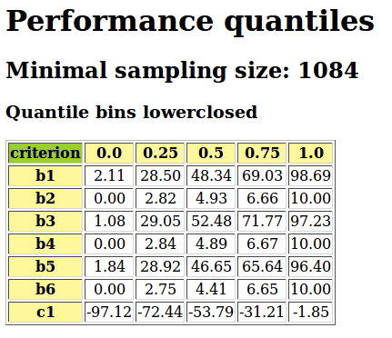
Fig. 25 Showing the updated quartiles limits
Rating new performances with quantile norms¶
For absolute rating of a newly given set of decision alternatives with the help of empirical performance quantiles estimated from historical data, we provide the sortingDigraphs.NormedQuantilesRatingDigraph class, a specialisation of the sortingDigraphs.QuantilesSortingDigraph class.
The constructor requires a valid performanceQuantiles.PerformanceQuantiles instance.
Note
It is important to notice that the sortingDigraphs.NormedQuantilesRatingDigraph class, contrary to the generic outrankingDigraphs.OutrankingDigraph class, does not inherit from the generic perfTabs.PerformanceTableau class, but instead from the performanceQuantiles.PerformanceQuantiles class. The actions in such a sortingDigraphs.NormedQuantilesRatingDigraph class instance contain not only the newly given decision alternatives, but also the historical quantile profiles obtained from a given performanceQuantiles.PerformanceQuantiles class instance, ie estimated quantile bins’ performance limits from historical performance data.
We reconsider the PerformanceQuantiles object instance pq as computed in the previous section. Let newActions be a list of 10 new decision alternatives generated with the same random performance tableau model and including the two decision alternatives a1001 and a1010 mentioned at the beginning.
1 2 3 4 5 6 7 8 9 10 11 12 13 14 15 16 17 18 19 20 21 22 23 24 25 26 27 28 29 | >>> from sortingDigraphs import NormedQuantilesRatingDigraph
>>> newActions = rpg.randomActions(10)
>>> nqr = NormedQuantilesRatingDigraph(pq,newActions,rankingRule='best')
>>> nqr
*----- Object instance description -----------*
Instance class : NormedQuantilesRatingDigraph
Instance name : normedRatingDigraph
# Criteria : 7
# Quantile profiles : 4
# New actions : 10
Size : 93
Determinateness (%) : 52.17
Attributes: ['runTimes','objectives','criteria',
'LowerClosed','quantilesFrequencies','limitingQuantiles',
'historySizes','cdf','name','newActions','evaluation',
'categories','criteriaCategoryLimits','profiles','profileLimits',
'hasNoVeto','actions','completeRelation','relation',
'concordanceRelation','valuationdomain','order','gamma',
'notGamma','rankingRule','rankingCorrelation','rankingScores',
'actionsRanking','ratingCategories','ratingRelation',
'relationOrig','rankingByBestChoosing']
*------ Constructor run times (in sec.) ------*
#Threads : 1
Total time : 0.01636
Data input : 0.00051
Quantile classes : 0.00006
Compute profiles : 0.00005
Compute relation : 0.01420
Compute rating : 0.00154
|
Data input to the sortingDigraphs.NormedQuantilesRatingDigraph class constructor (see Line 3) are a valid PerformanceQuantiles object pq and a compatible list newActions of new decision alternatives generated from the same random origin.
Let us have a look at the digraph’s nodes, here called newActions.
1 2 3 4 5 6 7 8 9 10 11 | >>> nqr.showPerformanceTableau(actionsSubset=nqr.newActions)
*---- performance tableau -----*
criteria | a1001 a1002 a1003 a1004 a1005 a1006 a1007 a1008 a1009 a1010
---------|-------------------------------------------------------------
'b1' | 37.0 27.0 24.0 16.0 42.0 33.0 39.0 64.0 42.0 32.0
'b2' | 2.0 5.0 8.0 3.0 3.0 3.0 6.0 5.0 4.0 9.0
'b3' | 2.0 4.0 2.0 1.0 6.0 3.0 2.0 6.0 6.0 6.0
'b4' | 61.0 54.0 74.0 25.0 28.0 20.0 20.0 49.0 44.0 55.0
'b5' | 31.0 63.0 61.0 48.0 30.0 39.0 16.0 96.0 57.0 51.0
'c1' | -4.0 -6.0 -8.0 -5.0 -1.0 -5.0 -1.0 -6.0 -6.0 -4.0
'c2' | -40.0 -23.0 -37.0 -37.0 -24.0 -27.0 -73.0 -43.0 -94.0 -35.0
|
Among the 10 new incoming decision alternatives (see below), we recognize alternatives a1001 (see column 2) and a1010 (see last column) we have mentioned in our introduction.
The NormedQuantilesRatingDigraphdigraph instance’s actions dictionary also contains the closed lower limits of the four quartile classes: m1 = [0.0- [, m2 = [0.25- [, m3 = [0.5- [, m4 = [0.75 - [.
1 2 3 4 5 6 7 8 9 10 11 | >>> nqr.showPerformanceTableau(actionsSubset=nqr.profiles)
*---- Quartiles limit profiles -----*
criteria | 'm1' 'm2' 'm3' 'm4'
---------|----------------------------
'b1' | 2.0 28.8 49.6 75.3
'b2' | 0.0 2.9 4.9 6.7
'b3' | 0.0 2.9 4.9 8.0
'b4' | 3.3 35.9 58.6 72.0
'b5' | 0.8 32.8 48.1 69.7
'c1' | -10.0 -7.4 -5.4 -3.4
'c2' | -96.4 -72.2 -52.3 -34.0
|
The main run time (see Lines 23-29 of the object description above) is spent by the class constructor in computing a bipolar-valued outranking relation on the extended actions set including both the new alternatives as well as the quartile class limits. In case of large volumes, ie many new decision alternatives and centile classes for instance, a multi-threading version may be used when multiple processing cores are available (see the technical description of the sortingDigraphs.NormedQuantilesRatingDigraph class).
The actual rating procedure will rely on a complete ranking of the new decision alternatives as well as the quantile class limits obtained from the corresponding bipolar-valued outranking digraph. Two efficient and scalable ranking rules, the Copeland and its valued version, the Netflows rule may be used for this purpose. The rankingRule parameter allows to choose one of both. With rankingRule=’best’ (see Line 2 above) the NormedQuantilesRatingDigraph constructor will choose the ranking rule that results in the highest ordinal correlation with the given outranking relation (see [BIS-2012]).
In this rating example, the NetFlows rule appears to be the more appropriate ranking rule.
1 2 3 4 5 6 7 8 9 10 | >>> print('Ranking rule :', nqr.rankingRule)
Ranking rule : NetFlows
>>> print('Actions ranking :', nqr.actionsRanking)
Actions ranking :
['m4', 'a1005', 'a1010', 'a1008', 'a1002', 'a1006',
'm3', 'a1003', 'a1001', 'a1007', 'a1004', 'a1009',
'm2', 'm1']
>>> print('Ranking correlation : %+.2f' %\
... (nqr.rankingCorrelation['correlation']) )
Ranking correlation : +0.938
|
We achieve here a linear ranking without ties (from best to worst) of the digraph’s actions, ie including the new decision alternatives as well as the quartile limits m1 to m4, which is very close in an ordinal sense (tau = 0.94) to the underlying valued outranking relation.
The eventual rating procedure is based on the lower quantile limits, such that we may collect the quartile classes’ contents in increasing order of the quartiles ‘ lower limits.
1 2 3 4 | >>> print('Rating categories:', nqr.ratingCategories)
Rating categories: OrderedDict([
('m2', ['a1003', 'a1001', 'a1007', 'a1004', 'a1009']),
('m3', ['a1005', 'a1010', 'a1008', 'a1002', 'a1006'])])
|
We notice above that no new decision alternative is rated in the lowest [0.0-0.25[, respectively highest [0.75- [ quartile class. Indeed, the rating result is shown, in descending order, as follows:
1 2 3 4 | >>> nqr.showQuantilesRating()
*-------- Quartiles rating result ---------
[0.50 - 0.75[ ['a1005', 'a1010', 'a1008', 'a1002', 'a1006']
[0.25 - 0.50[ ['a1003', 'a1001', 'a1007', 'a1004', 'a1009']
|
The same result may even more conviently be consulted in a browser view via a specialised rating heatmap format ( see perfTabs:PerformanceTableau.showHTMLPerformanceHeatmap() method (see Fig. 26).
1 2 | >>> nqr.showHTMLRatingHeatmap(pageTitle='Heatmap of Quartiles Rating',
... Correlations=True,colorLevels=5)
|
{kind=link}
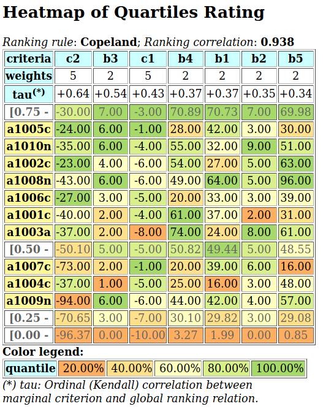
Fig. 26 Heatmap of normed quartiles ranking
Using furthermore a specialised version of the weakOrders.WeakOrder.exportGraphViz() method allows drawing the same rating result in a Hasse diagram format (see Fig. 27).
1 2 3 4 | >>> nqr.exportRatingGraphViz('normedRatingDigraph')
*---- exporting a dot file for GraphViz tools ---------*
Exporting to normedRatingDigraph.dot
dot -Grankdir=TB -Tpng normedRatingDigraph.dot -o normedRatingDigraph.png
|
{kind=link}
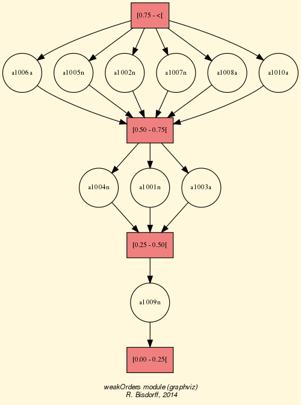
Fig. 27 Normed quartiles rating digraph
We may now answer the normed rating decision problem stated at the beginning. Decision alternative a1001 is rated in quartile Q2 and alternative a1010 in quartile Q3 (see Table below). Indeed, the performances of decision alternative a1001 were generated with a triangular law at a low mode, i.e. low costs but also low benefits, whereas the performances of alternative a1010 were generated with a median mode.
Rating Criterion b1 b2 b3 b4 b5 c1 c2 quartiles weight 2 2 2 2 2 5 5 Q2 a1001 37.0 2 2 61.0 31.0 -4 -40.0 Q3 a1010 32.0 9 6 55.0 51.0 -4 -35.0
A more precise rating result may be achieved when we use deciles instead of quartiles for estimating the historical cumulative distribution functions.
1 2 3 4 5 6 7 8 9 10 | >>> pq1 = PerformanceQuantiles(tp, numberOfBins = 'deciles',\
... LowerClosed=True)
...
>>> nqr1 = NormedQuantilesRatingDigraph(pq1,newActions,rankingRule='best')
>>> nqr1.showQuantilesRating()
*-------- Deciles rating result ---------
[0.60 - 0.70[ ['a1005', 'a1010', 'a1008', 'a1002']
[0.50 - 0.60[ ['a1006', 'a1001', 'a1003']
[0.40 - 0.50[ ['a1007', 'a1004']
[0.30 - 0.40[ ['a1009']
|
Compared with the quartiles rating result, we notice that the five alternatives (a1002, a1005, a1006, a1008, and a1010), rated before into the third quartile class [0.50-0.75[, are now divided up: alternatives a1002, a1005, a1008 and a1010 attain the 7th decile class [0.6-0.7[, whereas alternative a1006 attains only the the 6th decile class [0.5-0.6[. Of the five Q2 [0.25-0.50[ rated alternatives (a1001, a1003, a1004, a1006 and a1007), alternatives a1001 and a1003 are now rated in the 6th decile class [0.5 - 0.6[, whereas a1004 and a1007 are rated the 5th decile class [0.4-0.5[ and a1009 is lowest rated in the 4th decile class [0.3 - 0.4[.
A browser view may again more conveniently illustrate this preciser deciles rating result (see Fig. 28).
1 2 | >>> nqr1.showHTMLRatingHeatmap(pageTitle='Heatmap of the deciles rating',\
... colorLevels=5,Correlations=True)
|
{kind=link}
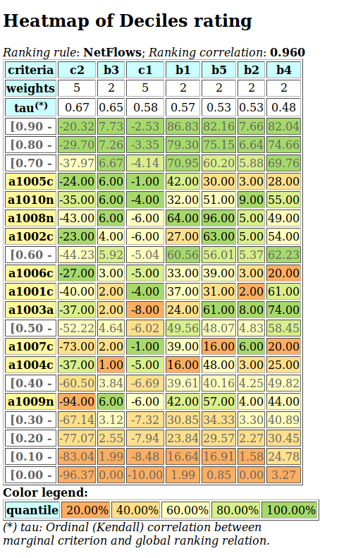
Fig. 28 Heatmap of mormed deciles rating
In this preciser deciles rating, decision alternatives a1001 and a1010 are now rated in the 6th decile (D6), respectively in the 7th decile (D7).
More generally, in the case of industrial production monitoring problems, for instance, where large volumes of historical performance data may be available, it may be of interest to estimate even more precisely the marginal cumulative distribution functions with dodeciles or even centiles. Especially if tail rating results, i.e. distinguishing very best, or very worst multiple criteria performances, becomes a critical purpose. Similarly, the historySize parameter may be used for monitoring on the fly unstable random multiple criteria performance data.
Back to Content Table
Working with the graphs module¶
See also the technical documentation of the graphs module.
Structure of a Graph object¶
In the graphs module, the root graphs.Graph class provides a generic simple graph model, without loops and multiple links. A given object of this class consists in:
- the graph vertices : a dictionary of vertices with ‘name’ and ‘shortname’ attributes,
- the graph valuationDomain , a dictionary with three entries: the minimum (-1, means certainly no link), the median (0, means missing information) and the maximum characteristic value (+1, means certainly a link),
- the graph edges : a dictionary with frozensets of pairs of vertices as entries carrying a characteristic value in the range of the previous valuation domain,
- and its associated gamma function : a dictionary containing the direct neighbors of each vertice, automatically added by the object constructor.
See the technical documentation of the graphs module.
Example Python3 session
1 2 3 | >>> from graphs import Graph
>>> g = Graph(numberOfVertices=7,edgeProbability=0.5)
>>> g.save(fileName='tutorialGraph')
|
The saved Graph instance named tutorialGraph.py is encoded in python3 as follows:
1 2 3 4 5 6 7 8 9 10 11 12 13 14 15 16 17 18 19 20 21 22 23 24 25 26 27 28 29 30 31 32 33 34 | # Graph instance saved in Python format
vertices = {
'v1': {'shortName': 'v1', 'name': 'random vertex'},
'v2': {'shortName': 'v2', 'name': 'random vertex'},
'v3': {'shortName': 'v3', 'name': 'random vertex'},
'v4': {'shortName': 'v4', 'name': 'random vertex'},
'v5': {'shortName': 'v5', 'name': 'random vertex'},
'v6': {'shortName': 'v6', 'name': 'random vertex'},
'v7': {'shortName': 'v7', 'name': 'random vertex'},
}
valuationDomain = {'min':-1,'med':0,'max':1}
edges = {
frozenset(['v1','v2']) : -1,
frozenset(['v1','v3']) : -1,
frozenset(['v1','v4']) : -1,
frozenset(['v1','v5']) : 1,
frozenset(['v1','v6']) : -1,
frozenset(['v1','v7']) : -1,
frozenset(['v2','v3']) : 1,
frozenset(['v2','v4']) : 1,
frozenset(['v2','v5']) : -1,
frozenset(['v2','v6']) : 1,
frozenset(['v2','v7']) : -1,
frozenset(['v3','v4']) : -1,
frozenset(['v3','v5']) : -1,
frozenset(['v3','v6']) : -1,
frozenset(['v3','v7']) : -1,
frozenset(['v4','v5']) : 1,
frozenset(['v4','v6']) : -1,
frozenset(['v4','v7']) : 1,
frozenset(['v5','v6']) : 1,
frozenset(['v5','v7']) : -1,
frozenset(['v6','v7']) : -1,
}
|
The stored graph can be recalled and plotted with the generic graphs.Graph.exportGraphViz() [1] method as follows.
1 2 3 4 5 6 | >>> g = Graph('tutorialGraph')
>>> g.exportGraphViz()
*---- exporting a dot file for GraphViz tools ---------*
Exporting to tutorialGraph.dot
fdp -Tpng tutorialGraph.dot -o tutorialGraph.png
>>> ...
|
{kind=link}
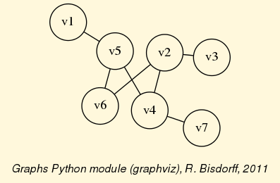
Fig. 29 Tutorial graph instance
Properties, like the gamma function and vertex degrees and neighbourhooddepths may be shown with a graphs.Graph.showShort() method.
1 2 3 4 5 6 7 8 9 10 11 12 13 14 15 16 17 18 | >>> g.showShort()
*---- short description of the graph ----*
Name : 'tutorialGraph'
Vertices : ['v1', 'v2', 'v3', 'v4', 'v5', 'v6', 'v7']
Valuation domain : {'min': -1, 'med': 0, 'max': 1}
Gamma function :
v1 -> ['v5']
v2 -> ['v6', 'v4', 'v3']
v3 -> ['v2']
v4 -> ['v5', 'v2', 'v7']
v5 -> ['v1', 'v6', 'v4']
v6 -> ['v2', 'v5']
v7 -> ['v4']
degrees : [0, 1, 2, 3, 4, 5, 6]
distribution : [0, 3, 1, 3, 0, 0, 0]
nbh depths : [0, 1, 2, 3, 4, 5, 6, 'inf.']
distribution : [0, 0, 1, 4, 2, 0, 0, 0]
>>> ...
|
A Graph instance corresponds bijectively to a symmetric Digraph instance and we may easily convert from one to the other with the graphs.Graph.graph2Digraph(), and vice versa with the digraphs.Digraph.digraph2Graph() method. Thus, all resources of the digraphs.Digraph class, suitable for symmetric digraphs, become readily available, and vice versa.
1 2 3 4 5 6 7 8 9 10 11 12 13 14 15 16 17 18 19 20 21 22 23 24 25 26 27 28 29 30 31 | >>> dg = g.graph2Digraph()
>>> dg.showRelationTable(ndigits=0,ReflexiveTerms=False)
* ---- Relation Table -----
S | 'v1' 'v2' 'v3' 'v4' 'v5' 'v6' 'v7'
-----|------------------------------------------
'v1' | - -1 -1 -1 1 -1 -1
'v2' | -1 - 1 1 -1 1 -1
'v3' | -1 1 - -1 -1 -1 -1
'v4' | -1 1 -1 - 1 -1 1
'v5' | 1 -1 -1 1 - 1 -1
'v6' | -1 1 -1 -1 1 - -1
'v7' | -1 -1 -1 1 -1 -1 -
>>> g1 = dg.digraph2Graph()
>>> g1.showShort()
*---- short description of the graph ----*
Name : 'tutorialGraph'
Vertices : ['v1', 'v2', 'v3', 'v4', 'v5', 'v6', 'v7']
Valuation domain : {'med': 0, 'min': -1, 'max': 1}
Gamma function :
v1 -> ['v5']
v2 -> ['v3', 'v6', 'v4']
v3 -> ['v2']
v4 -> ['v5', 'v7', 'v2']
v5 -> ['v6', 'v1', 'v4']
v6 -> ['v5', 'v2']
v7 -> ['v4']
degrees : [0, 1, 2, 3, 4, 5, 6]
distribution : [0, 3, 1, 3, 0, 0, 0]
nbh depths : [0, 1, 2, 3, 4, 5, 6, 'inf.']
distribution : [0, 0, 1, 4, 2, 0, 0, 0]
>>> ...
|
q-coloring of a graph¶
A 3-coloring of the tutorial graph g may for instance be computed and plotted with the graphs.Q_Coloring class as follows.
1 2 3 4 5 6 7 8 9 10 11 12 13 14 15 16 | >>> from graphs import Q_Coloring
>>> qc = Q_Coloring(g)
Running a Gibbs Sampler for 42 step !
The q-coloring with 3 colors is feasible !!
>>> qc.showConfiguration()
v5 lightblue
v3 gold
v7 gold
v2 lightblue
v4 lightcoral
v1 gold
v6 lightcoral
>>> qc.exportGraphViz('tutorial-3-coloring')
*---- exporting a dot file for GraphViz tools ---------*
Exporting to tutorial-3-coloring.dot
fdp -Tpng tutorial-3-coloring.dot -o tutorial-3-coloring.png
|
{kind=link}
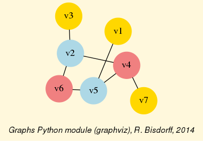
Fig. 30 3-Coloring of the tutorial graph
Actually, with the given tutorial graph instance, a 2-coloring is already feasible.
1 2 3 4 5 6 7 8 9 10 11 12 13 14 15 | >>> qc = Q_Coloring(g,colors=['gold','coral'])
Running a Gibbs Sampler for 42 step !
The q-coloring with 2 colors is feasible !!
>>> qc.showConfiguration()
v5 gold
v3 coral
v7 gold
v2 gold
v4 coral
v1 coral
v6 coral
>>> qc.exportGraphViz('tutorial-2-coloring')
*---- exporting a dot file for GraphViz tools ---------*
Exporting to tutorial-2-coloring.dot
fdp -Tpng tutorial-2-coloring.dot -o tutorial-2-coloring.png
|
{kind=link}
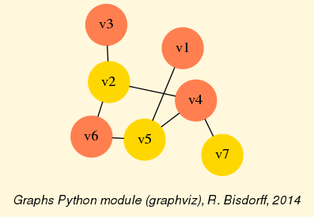
Fig. 31 2-coloring of the tutorial graph
MIS and clique enumeration¶
2-colorings define independent sets of vertices that are maximal in cardinality; for short called a MIS. Computing such MISs in a given Graph instance may be achieved by the graphs.Graph.showMIS() method.
1 2 3 4 5 6 7 8 9 10 11 12 13 14 15 16 17 18 19 20 | >>> g = Graph('tutorialGraph')
>>> g.showMIS()
*--- Maximal Independent Sets ---*
['v2', 'v5', 'v7']
['v3', 'v5', 'v7']
['v1', 'v2', 'v7']
['v1', 'v3', 'v6', 'v7']
['v1', 'v3', 'v4', 'v6']
number of solutions: 5
cardinality distribution
card.: [0, 1, 2, 3, 4, 5, 6, 7]
freq.: [0, 0, 0, 3, 2, 0, 0, 0]
execution time: 0.00032 sec.
Results in self.misset
>>> g.misset
[frozenset({'v7', 'v2', 'v5'}),
frozenset({'v3', 'v7', 'v5'}),
frozenset({'v1', 'v2', 'v7'}),
frozenset({'v1', 'v6', 'v7', 'v3'}),
frozenset({'v1', 'v6', 'v4', 'v3'})]
|
A MIS in the dual of a graph instance g (its negation -g ), corresponds to a maximal clique, ie a maximal complete subgraph in g. Maximal cliques may be directly enumerated with the graphs.Graph.showCliques() method.
1 2 3 4 5 6 7 8 9 10 11 12 13 14 15 16 17 18 19 20 21 | >>> g.showCliques()
*--- Maximal Cliques ---*
['v2', 'v3']
['v4', 'v7']
['v2', 'v4']
['v4', 'v5']
['v1', 'v5']
['v2', 'v6']
['v5', 'v6']
number of solutions: 7
cardinality distribution
card.: [0, 1, 2, 3, 4, 5, 6, 7]
freq.: [0, 0, 7, 0, 0, 0, 0, 0]
execution time: 0.00049 sec.
Results in self.cliques
>>> g.cliques
[frozenset({'v2', 'v3'}), frozenset({'v4', 'v7'}),
frozenset({'v2', 'v4'}), frozenset({'v4', 'v5'}),
frozenset({'v1', 'v5'}), frozenset({'v6', 'v2'}),
frozenset({'v6', 'v5'})]
>>> ...
|
Line graphs and maximal matchings¶
The module also provides a graphs.LineGraph constructor. A line graph represents the adjacencies between edges of the given graph instance. We may compute for instance the line graph of the 5-cycle graph.
1 2 3 4 5 6 7 8 9 10 11 12 13 14 15 16 17 18 19 20 21 22 23 24 25 26 27 28 29 30 31 32 33 34 35 36 | >>> g = CycleGraph(order=5)
>>> g
*------- Graph instance description ------*
Instance class : CycleGraph
Instance name : cycleGraph
Graph Order : 5
Graph Size : 5
Valuation domain : [-1.00; 1.00]
Attributes : ['name', 'order', 'vertices', 'valuationDomain',
'edges', 'size', 'gamma']
>>> lg = LineGraph(g)
>>> lg
*------- Graph instance description ------*
Instance class : LineGraph
Instance name : line-cycleGraph
Graph Order : 5
Graph Size : 5
Valuation domain : [-1.00; 1.00]
Attributes : ['name', 'graph', 'valuationDomain', 'vertices',
'order', 'edges', 'size', 'gamma']
>>> lg.showShort()
*---- short description of the graph ----*
Name : 'line-cycleGraph'
Vertices : [frozenset({'v1', 'v2'}), frozenset({'v1', 'v5'}), frozenset({'v2', 'v3'}),
frozenset({'v3', 'v4'}), frozenset({'v4', 'v5'})]
Valuation domain : {'min': Decimal('-1'), 'med': Decimal('0'), 'max': Decimal('1')}
Gamma function :
frozenset({'v1', 'v2'}) -> [frozenset({'v2', 'v3'}), frozenset({'v1', 'v5'})]
frozenset({'v1', 'v5'}) -> [frozenset({'v1', 'v2'}), frozenset({'v4', 'v5'})]
frozenset({'v2', 'v3'}) -> [frozenset({'v1', 'v2'}), frozenset({'v3', 'v4'})]
frozenset({'v3', 'v4'}) -> [frozenset({'v2', 'v3'}), frozenset({'v4', 'v5'})]
frozenset({'v4', 'v5'}) -> [frozenset({'v4', 'v3'}), frozenset({'v1', 'v5'})]
degrees : [0, 1, 2, 3, 4]
distribution : [0, 0, 5, 0, 0]
nbh depths : [0, 1, 2, 3, 4, 'inf.']
distribution : [0, 0, 5, 0, 0, 0]
|
Iterated line graph constructions are usually expanding, except for chordless cycles, where the same cycle is repeated, and for non-closed paths, where iterated line graphs progressively reduce one by one the number of vertices and edges and become eventually an empty graph.
Notice that the MISs in the line graph provide maximal matchings - maximal sets of independent edges - of the original graph.
1 2 3 4 5 6 7 8 9 10 11 12 13 14 15 16 17 18 19 20 21 | >>> c8 = CycleGraph(order=8)
>>> lc8 = LineGraph(c8)
>>> lc8.showMIS()
*--- Maximal Independent Sets ---*
[frozenset({'v3', 'v4'}), frozenset({'v5', 'v6'}), frozenset({'v1', 'v8'})]
[frozenset({'v2', 'v3'}), frozenset({'v5', 'v6'}), frozenset({'v1', 'v8'})]
[frozenset({'v8', 'v7'}), frozenset({'v2', 'v3'}), frozenset({'v5', 'v6'})]
[frozenset({'v8', 'v7'}), frozenset({'v2', 'v3'}), frozenset({'v4', 'v5'})]
[frozenset({'v7', 'v6'}), frozenset({'v3', 'v4'}), frozenset({'v1', 'v8'})]
[frozenset({'v2', 'v1'}), frozenset({'v8', 'v7'}), frozenset({'v4', 'v5'})]
[frozenset({'v2', 'v1'}), frozenset({'v7', 'v6'}), frozenset({'v4', 'v5'})]
[frozenset({'v2', 'v1'}), frozenset({'v7', 'v6'}), frozenset({'v3', 'v4'})]
[frozenset({'v7', 'v6'}), frozenset({'v2', 'v3'}), frozenset({'v1', 'v8'}),
frozenset({'v4', 'v5'})]
[frozenset({'v2', 'v1'}), frozenset({'v8', 'v7'}), frozenset({'v3', 'v4'}),
frozenset({'v5', 'v6'})]
number of solutions: 10
cardinality distribution
card.: [0, 1, 2, 3, 4, 5, 6, 7, 8]
freq.: [0, 0, 0, 8, 2, 0, 0, 0, 0]
execution time: 0.00029 sec.
|
The two last MISs of cardinality 4 (see Lines 13-16 above) give isomorphic perfect maximum matchings of the 8-cycle graph. Every vertex of the cycle is adjacent to a matching edge. Odd cyle graphs do not admid any perfect matching.
1 2 3 4 5 6 7 8 | >>> maxMatching = c8.computeMaximumMatching()
>>> c8.exportGraphViz(fileName='maxMatchingcycleGraph',
... matching=maxMatching)
*---- exporting a dot file for GraphViz tools ---------*
Exporting to maxMatchingcyleGraph.dot
Matching: {frozenset({'v1', 'v2'}), frozenset({'v5', 'v6'}),
frozenset({'v3', 'v4'}), frozenset({'v7', 'v8'}) }
circo -Tpng maxMatchingcyleGraph.dot -o maxMatchingcyleGraph.png
|
{kind=link}
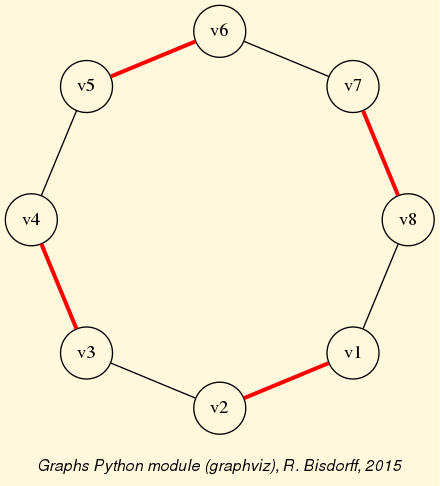
Fig. 32 A perfect maximum matching of the 8-cycle graph
Grids and the Ising model¶
Special classes of graphs, like n x m rectangular or triangular grids (graphs.GridGraph and graphs.IsingModel) are available in the graphs module. For instance, we may use a Gibbs sampler again for simulating an Ising Model on such a grid.
1 2 3 4 5 6 7 8 9 10 11 12 13 14 | >>> from graphs import GridGraph, IsingModel
>>> g = GridGraph(n=15,m=15)
>>> g.showShort()
*----- show short --------------*
Grid graph : grid-6-6
n : 6
m : 6
order : 36
>>> im = IsingModel(g,beta=0.3,nSim=100000,Debug=False)
Running a Gibbs Sampler for 100000 step !
>>> im.exportGraphViz(colors=['lightblue','lightcoral'])
*---- exporting a dot file for GraphViz tools ---------*
Exporting to grid-15-15-ising.dot
fdp -Tpng grid-15-15-ising.dot -o grid-15-15-ising.png
|
{kind=link}
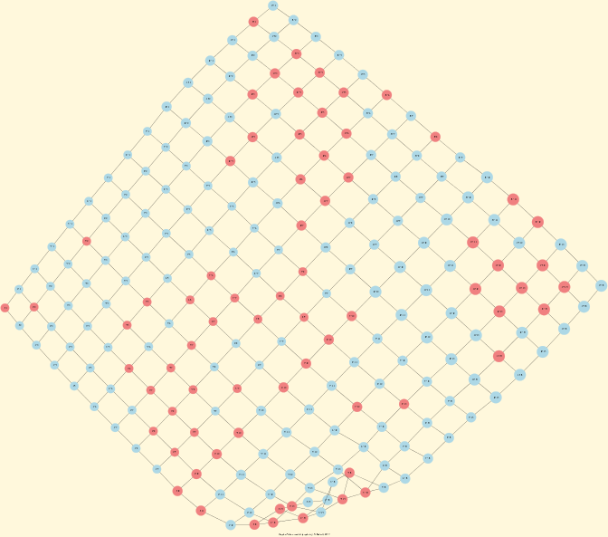
Fig. 33 Ising model of the 15x15 grid graph
Simulating Metropolis random walks¶
Finally, we provide the graphs.MetropolisChain class, a specialization of the graphs.Graph class, for implementing a generic Metropolis MCMC (Monte Carlo Markov Chain) sampler for simulating random walks on a given graph following a given probability probs = {‘v1’: x, ‘v2’: y, ...} for visiting each vertex (see Lines 14-22).
1 2 3 4 5 6 7 8 9 10 11 12 13 14 15 16 17 18 19 20 21 22 23 24 25 26 27 28 29 30 31 32 33 34 35 36 37 38 39 | >>> from graphs import MetropolisChain
>>> g = Graph(numberOfVertices=5,edgeProbability=0.5)
>>> g.showShort()
*---- short description of the graph ----*
Name : 'randomGraph'
Vertices : ['v1', 'v2', 'v3', 'v4', 'v5']
Valuation domain : {'max': 1, 'med': 0, 'min': -1}
Gamma function :
v1 -> ['v2', 'v3', 'v4']
v2 -> ['v1', 'v4']
v3 -> ['v5', 'v1']
v4 -> ['v2', 'v5', 'v1']
v5 -> ['v3', 'v4']
>>> probs = {} # initialize a potential stationary probability vector
>>> n = g.order # for instance: probs[v_i] = n-i/Sum(1:n) for i in 1:n
>>> i = 0
>>> verticesList = [x for x in g.vertices]
>>> verticesList.sort()
>>> for v in verticesList:
... probs[v] = (n - i)/(n*(n+1)/2)
... i += 1
>>> met = MetropolisChain(g,probs)
>>> frequency = met.checkSampling(verticesList[0],nSim=30000)
>>> for v in verticesList:
... print(v,probs[v],frequency[v])
v1 0.3333 0.3343
v2 0.2666 0.2680
v3 0.2 0.2030
v4 0.1333 0.1311
v5 0.0666 0.0635
>>> met.showTransitionMatrix()
* ---- Transition Matrix -----
Pij | 'v1' 'v2' 'v3' 'v4' 'v5'
-----|-------------------------------------
'v1' | 0.23 0.33 0.30 0.13 0.00
'v2' | 0.42 0.42 0.00 0.17 0.00
'v3' | 0.50 0.00 0.33 0.00 0.17
'v4' | 0.33 0.33 0.00 0.08 0.25
'v5' | 0.00 0.00 0.50 0.50 0.00
|
The checkSampling() method (see Line 23) generates a random walk of nSim=30000 steps on the given graph and records by the way the observed relative frequency with which each vertex is passed by. In this example, the stationary transition probability distribution, shown by the showTransitionMatrix() method above (see Lines 31-), is quite adequately simulated.
For more technical information and more code examples, look into the technical documentation of the graphs module. For the readers interested in algorithmic applications of Markov Chains we may recommend consulting O. Häggström’s 2002 book: [FMCAA].
Back to Content Table
Computing the non isomorphic MISs of the n-cycle graph¶
Due to the public success of our common 2008 publication with Jean-Luc Marichal [ISOMIS-08] , we present in this tutorial an example Python session for computing the non isomorphic maximal independent sets (MISs) from the 12-cycle graph, i.e. a digraphs.CirculantDigraph class instance of order 12 and symmetric circulants 1 and -1.
1 2 3 4 5 6 7 8 9 10 11 12 13 | >>> from digraphs import CirculantDigraph
>>> c12 = CirculantDigraph(order=12,circulants=[1,-1])
>>> c12 # 12-cycle digraph instance
*------- Digraph instance description ------*
Instance class : CirculantDigraph
Instance name : c12
Digraph Order : 12
Digraph Size : 24
Valuation domain : [-1.0, 1.0]
Determinateness : 100.000
Attributes : ['name', 'order', 'circulants', 'actions',
'valuationdomain', 'relation', 'gamma',
'notGamma']
|
Such n-cycle graphs are also provided as undirected graph instances by the graphs.CycleGraph class.
1 2 3 4 5 6 7 8 9 10 11 12 | >>> from graphs import CycleGraph
>>> cg12 = CycleGraph(order=12)
>>> cg12
*------- Graph instance description ------*
Instance class : CycleGraph
Instance name : cycleGraph
Graph Order : 12
Graph Size : 12
Valuation domain : [-1.0, 1.0]
Attributes : ['name', 'order', 'vertices', 'valuationDomain',
'edges', 'size', 'gamma']
>>> cg12.exportGraphViz('cg12')
|
{kind=link}
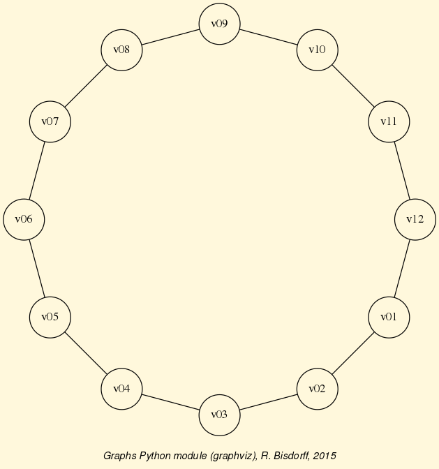
Fig. 34 The 12-cycle graph
A non isomorphic MIS corresponds in fact to a set of isomorphic MISs, i.e. an orbit of MISs under the automorphism group of the 12-cycle graph. We are now first computing all maximal independent sets that are detectable in the 12-cycle digraph with the digraphs.Digraph.showMIS() method.
1 2 3 4 5 6 7 | >>> c12.showMIS(withListing=False)
*--- Maximal independent choices ---*
number of solutions: 29
cardinality distribution
card.: [0, 1, 2, 3, 4, 5, 6, 7, 8, 9, 10, 11, 12]
freq.: [0, 0, 0, 0, 3, 24, 2, 0, 0, 0, 0, 0, 0]
Results in c12.misset
|
In the 12-cycle graph, we observe 29 labelled MISs: – 3 of cardinality 4, 24 of cardinality 5, and 2 of cardinality 6. In case of n-cycle graphs with n > 20, as the cardinality of the MISs becomes big, it is preferable to use the shell perrinMIS command compiled from C and installed [3] along with all the Digraphs3 python modules for computing the set of MISs observed in the graph.
...$ echo 12 | /usr/local/bin/perrinMIS # -------------------------------------- # # Generating MIS set of Cn with the # # Perrin sequence algorithm. # # Temporary files used. # # even versus odd order optimised. # # RB December 2006 # # Current revision Dec 2018 # # -------------------------------------- # Input cycle order ? <-- 12 mis 1 : 100100100100 mis 2 : 010010010010 mis 3 : 001001001001 ... ... ... mis 27 : 001001010101 mis 28 : 101010101010 mis 29 : 010101010101 Cardinalities: 0 : 0 1 : 0 2 : 0 3 : 0 4 : 3 5 : 24 6 : 2 7 : 0 8 : 0 9 : 0 10 : 0 11 : 0 12 : 0 Total: 29 execution time: 0 sec. and 2 millisec.
Reading in the result of the perrinMIS shell command, stored in a file called by default curd.dat, may be operated with the digraphs.Digraph.readPerrinMisset() method.
1 2 3 4 5 6 7 8 9 10 11 12 | >>> c12.readPerrinMisset(file='curd.dat')
>>> c12.misset
{frozenset({'5', '7', '10', '1', '3'}),
frozenset({'9', '11', '5', '2', '7'}),
frozenset({'7', '2', '4', '10', '12'}),
...
...
...
frozenset({'8', '4', '10', '1', '6'}),
frozenset({'11', '4', '1', '9', '6'}),
frozenset({'8', '2', '4', '10', '12', '6'})
}
|
For computing the corresponding non isomorphic MISs, we actually need the automorphism group of the c12-cycle graph. The digraphs.Digraph class therefore provides the digraphs.Digraph.automorphismGenerators() method which adds automorphism group generators to a digraphs.Digraph class instance with the help of the external shell <dreadnaut> command from the nauty software package [2].
1 2 3 4 5 6 7 8 9 10 11 | >>> c12.automorphismGenerators()
...
Permutations
{'1': '1', '2': '12', '3': '11', '4': '10', '5':
'9', '6': '8', '7': '7', '8': '6', '9': '5', '10':
'4', '11': '3', '12': '2'}
{'1': '2', '2': '1', '3': '12', '4': '11', '5': '10',
'6': '9', '7': '8', '8': '7', '9': '6', '10': '5',
'11': '4', '12': '3'}
>>> print('grpsize = ', c12.automorphismGroupSize)
grpsize = 24
|
The 12-cycle graph automorphism group is generated with both the permutations above and has group size 24.
The command digraphs.Digraph.showOrbits() renders now the labelled representatives of each of the four orbits of isomorphic MISs observed in the 12-cycle graph (see Lines 7-10).
1 2 3 4 5 6 7 8 9 10 11 12 13 | >>> c12.showOrbits(c12.misset,withListing=False)
...
*---- Global result ----
Number of MIS: 29
Number of orbits : 4
Labelled representatives and cardinality:
1: ['2','4','6','8','10','12'], 2
2: ['2','5','8','11'], 3
3: ['2','4','6','9','11'], 12
4: ['1','4','7','9','11'], 12
Symmetry vector
stabilizer size: [1, 2, 3, ..., 8, 9, ..., 12, 13, ...]
frequency : [0, 2, 0, ..., 1, 0, ..., 1, 0, ...]
|
The corresponding group stabilizers’ sizes and frequencies – orbit 1 with 12 symmetry axes, orbit 2 with 8 symmetry axes, and orbits 3 and 4 both with one symmetry axis (see Lines 11-13), are illustrated in the corresponding unlabelled graphs of Fig. 35 below.
{kind=link}
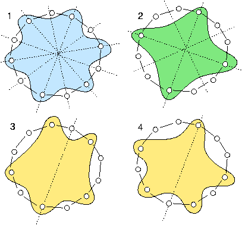
Fig. 35 The symmetry axes of the four non isomorphic MISs of the 12-cycle graph
The non isomorphic MISs in the 12-cycle graph represent in fact all the ways one may write the number 12 as the circular sum of ‘2’s and ‘3’s without distinguishing opposite directions of writing. The first orbit corresponds to writing six times a ‘2’; the second orbit corresponds to writing four times a ‘3’. The third and fourth orbit correspond to writing two times a ‘3’ and three times a ‘2’. There are two non isomorphic ways to do this latter circular sum. Either separating the ‘3’s by one and two ‘2’s, or by zero and three ‘2’s (see Bisdorff & Marichal [ISOMIS-08] ).
Back to Content Table
On computing digraph kernels¶
What is a graph kernel ?¶
We call choice in a graph, respectively a digraph, a subset of its vertices, resp. of its nodes or actions. A choice Y is called internally stable or independent when there exist no links (edges) or relations (arcs) between its members. Furthermore, a choice Y is called externally stable when for each vertex, node or action x not in Y, there exists at least a member y of Y such that x is linked or related to y. Now, an internally and externally stable choice is called a kernel.
A first trivial example is immediately given by the maximal independent vertices sets (MISs) of the n-cycle graph (see Computing the non isomorphic MISs of the n-cycle graph). Indeed, each MIS in the n-cycle graph is by definition independent, ie internally stable, and each non selected vertex in the n-cycle graph is in relation with either one or even two members of the MIS. See, for instance, the four non isomorphic MISs of the 12-cycle graph as shown in Fig. 35.
In all graph or symmetric digraph, the maximality condition imposed on the internal stability is equivalent to the external stability condition. Indeed, if there would exist a vertex or node not related to any of the elements of a choice, then we may safely add this vertex or node to the given choice without violating its internal stability. All kernels must hence be maximal independent choices. In fact, in a topological sense, they correspond to maximal holes in the given graph.
We may illustrate this coincidence between MISs and kernels in graphs and symmetric digraphs with the following random 3-regular graph instance (see Fig. 36).
1 2 3 4 5 6 | >>> from graphs import RandomRegularGraph
>>> g = RandomRegularGraph(order=12,degree=3,seed=100)
>>> g.exportGraphViz('random3RegularGraph')
*---- exporting a dot file for GraphViz tools ---------*
Exporting to random3RegularGraph.dot
fdp -Tpng random3RegularGraph.dot -o random3RegularGraph.png
|
{kind=link}
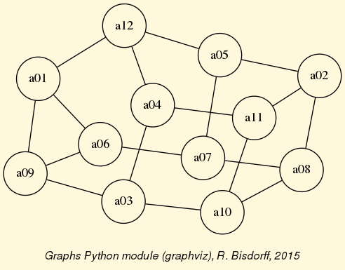
Fig. 36 A random 3-regular graph instance
A random MIS in this graph may be computed for instance by using the graphs.MISModel class.
1 2 3 4 5 6 7 8 9 | >>> from graphs import MISModel
>>> mg = MISModel(g)
Iteration: 1
Running a Gibbs Sampler for 660 step !
{'a06', 'a02', 'a12', 'a10'} is maximal !
>>> mg.exportGraphViz('random3RegularGraph_mis')
*---- exporting a dot file for GraphViz tools ---------*
Exporting to random3RegularGraph-mis.dot
fdp -Tpng random3RegularGraph-mis.dot -o random3RegularGraph-mis.png
|
{kind=link}
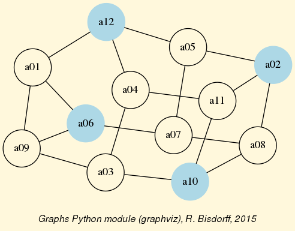
Fig. 37 A random MIS colored in the random 3-regular graph
It is easily verified in Fig. 37 above, that the computed MIS renders indeed a valid kernel of the given graph. The complete set of kernels of this 3-regular graph instance coincides hence with the set of its MISs.
1 2 3 4 5 6 7 8 9 10 11 12 13 14 15 16 17 18 19 20 21 22 23 24 25 26 27 28 29 30 31 32 33 34 35 36 37 38 39 | >>> g.showMIS()
*--- Maximal Independent Sets ---*
['a01', 'a02', 'a03', 'a07']
['a01', 'a04', 'a05', 'a08']
['a04', 'a05', 'a08', 'a09']
['a01', 'a04', 'a05', 'a10']
['a04', 'a05', 'a09', 'a10']
['a02', 'a03', 'a07', 'a12']
['a01', 'a03', 'a07', 'a11']
['a05', 'a08', 'a09', 'a11']
['a03', 'a07', 'a11', 'a12']
['a07', 'a09', 'a11', 'a12']
['a08', 'a09', 'a11', 'a12']
['a04', 'a05', 'a06', 'a08']
['a04', 'a05', 'a06', 'a10']
['a02', 'a04', 'a06', 'a10']
['a02', 'a03', 'a06', 'a12']
['a02', 'a06', 'a10', 'a12']
['a01', 'a02', 'a04', 'a07', 'a10']
['a02', 'a04', 'a07', 'a09', 'a10']
['a02', 'a07', 'a09', 'a10', 'a12']
['a01', 'a03', 'a05', 'a08', 'a11']
['a03', 'a05', 'a06', 'a08', 'a11']
['a03', 'a06', 'a08', 'a11', 'a12']
number of solutions: 22
cardinality distribution
card.: [0, 1, 2, 3, 4, 5, 6, 7, 8, 9, 10, 11, 12]
freq.: [0, 0, 0, 0, 16, 6, 0, 0, 0, 0, 0, 0, 0]
execution time: 0.00045 sec.
Results in self.misset
>>> g.misset
[frozenset({'a02', 'a01', 'a07', 'a03'}),
frozenset({'a04', 'a01', 'a08', 'a05'}),
frozenset({'a09', 'a04', 'a08', 'a05'}),
...
...
frozenset({'a06', 'a02', 'a12', 'a10'}),
frozenset({'a06', 'a11', 'a08', 'a03', 'a05'}),
frozenset({'a03', 'a06', 'a11', 'a12', 'a08'})]
|
We cannot resist in looking in this 3-regular graph for non isomorphic kernels (MISs, see previous tutorial). To do so we must first, convert the given graph instance into a digraph instance. Then, compute its automorphism generators, and finally, identify the isomorphic kernel orbits.
1 2 3 4 5 6 7 8 9 10 11 12 13 14 15 16 17 18 19 20 21 22 23 24 25 26 27 28 29 30 31 32 33 34 35 36 37 38 39 40 41 42 43 44 45 46 47 48 49 50 51 | >>> dg = g.graph2Digraph()
>>> dg.automorphismGenerators()
*----- saving digraph in nauty dre format -------------*
Actions index:
1 : a01
2 : a02
3 : a03
4 : a04
5 : a05
6 : a06
7 : a07
8 : a08
9 : a09
10 : a10
11 : a11
12 : a12
{'1': 'a01', '2': 'a02', '3': 'a03', '4': 'a04', '5': 'a05',
'6': 'a06', '7': 'a07', '8': 'a08', '9': 'a09', '10': 'a10',
'11': 'a11', '12': 'a12'}
# automorphisms extraction from dre file #
# Using input file: randomRegularGraph.dre
echo '<randomRegularGraph.dre -m p >randomRegularGraph.auto x' | dreadnaut
# permutation = 1['1', '11', '7', '5', '4', '9', '3', '10', '6', '8', '2', '12']
>>> dg.showOrbits(g.misset)
*--- Isomorphic reduction of choices
...
current representative: frozenset({'a09', 'a11', 'a12', 'a08'})
length : 4
number of isomorph choices 2
isormorph choices
['a06', 'a02', 'a12', 'a10'] # <<== the random MIS shown above
['a09', 'a11', 'a12', 'a08']
----------------------------
*---- Global result ----
Number of choices: 22
Number of orbits : 11
Labelled representatives:
['a06', 'a04', 'a10', 'a05']
['a09', 'a07', 'a10', 'a04', 'a02']
['a06', 'a11', 'a12', 'a08', 'a03']
['a04', 'a01', 'a10', 'a05']
['a07', 'a02', 'a12', 'a03']
['a09', 'a11', 'a12', 'a07']
['a06', 'a04', 'a08', 'a05']
['a06', 'a04', 'a02', 'a10']
['a01', 'a11', 'a07', 'a03']
['a01', 'a11', 'a08', 'a03', 'a05']
['a09', 'a11', 'a12', 'a08']
Symmetry vector
stabilizer size : [1, 2]
frequency : [11, 0]
|
In our random 3-regular graph instance (see Fig. 36), we may thus find eleven non isomorphic kernels with orbit sizes equal to two. We illustrate below the isomorphic twin of the random MIS example shown in Fig. 37 .
{kind=link}
All graphs and symmetric digraphs admid MISs, hence also kernels.
It is worthwhile noticing that the maximal matchings of a graph correspond bijectively to its line graph’s kernels (see the graphs.LineGraph class).
1 2 3 4 5 6 7 8 9 10 | >>> from graphs import CycleGraph
>>> c8 = CycleGraph(order=8)
>>> maxMatching = c8.computeMaximumMatching()
>>> c8.exportGraphViz(fileName='maxMatchingcycleGraph',
... matching=maxMatching)
*---- exporting a dot file for GraphViz tools ---------*
Exporting to maxMatchingcyleGraph.dot
Matching: {frozenset({'v1', 'v2'}), frozenset({'v5', 'v6'}),
frozenset({'v3', 'v4'}), frozenset({'v7', 'v8'}) }
circo -Tpng maxMatchingcyleGraph.dot -o maxMatchingcyleGraph.png
|
In the context of digraphs, ie oriented graphs, the kernel concept gets much richer and separates from the symmetric MIS concept.
Initial and terminal kernels¶
In an oriented graph context, the internal stability condition of the kernel concept remains untouched; however, the external stability condition gets indeed split up by the orientation into two lateral cases:
- A dominant stability condition, where each non selected node is dominated by at least one member of the kernel;
- An absorbant stability condition, where each non selected node is absorbed by at least one member of the kernel.
A both internally and dominant, resp. absorbent stable choice is called a dominant or initial, resp. an absorbent or terminal kernel. From a topological perspective, the initial kernel concept looks from the outside of the digraph into its interior, whereas the terminal kernel looks from the interior of a digraph toward its outside. From an algebraic perspective, the initial kernel is a prefix operand, and the terminal kernel is a postfix operand in the Berge kernel equation (see [BIS-2006a] )
Furthermore, as the kernel concept involves conjointly a positive logical refutation (the internal stability) and a positive logical affirmation (the external stability), it appeared rather quickly necessary in our operational developments to adopt a bipolar characteristic [-1,1] valuation domain, modelling negation by change of numerical sign and including explicitely a third median logical value (0) expressing logical indeterminateness (neither positive, nor negative, see [BIS-2000] and [BIS-2004]).
In such a bipolar-valued context, we call prekernel a choice which is externally stable and for which the internal stability condition is valid or indeterminate. We say that the independence condition is in this case only weakly validated. Notice that all kernels are hence prekernels, but not vice-versa.
In graphs or symmetric digraphs, where there is essentially no apparent ‘ laterality ‘, all kernels are initial and terminal at the same time. They correspond to what we call holes in the graph. An universal example is given by the complete digraph.
1 2 3 4 5 6 7 8 9 10 11 12 13 14 15 16 17 18 19 20 21 22 23 24 25 26 27 28 29 30 31 32 33 34 35 | >>> from digraphs import CompleteDigraph
>>> u = CompleteDigraph(order=5)
>>> u
*------- Digraph instance description ------*
Instance class : CompleteDigraph
Instance name : complete
Digraph Order : 5
Digraph Size : 20
Valuation domain : [-1.00 ; 1.00]
---------------------------------
>>> u.showPreKernels()
*--- Computing preKernels ---*
Dominant kernels :
['1'] independence: 1.0; dominance : 1.0; absorbency : 1.0
['2'] independence: 1.0; dominance : 1.0; absorbency : 1.0
['3'] independence: 1.0; dominance : 1.0; absorbency : 1.0
['4'] independence: 1.0; dominance : 1.0; absorbency : 1.0
['5'] independence: 1.0; dominance : 1.0; absorbency : 1.0
Absorbent kernels :
['1'] independence: 1.0; dominance : 1.0; absorbency : 1.0
['2'] independence: 1.0; dominance : 1.0; absorbency : 1.0
['3'] independence: 1.0; dominance : 1.0; absorbency : 1.0
['4'] independence: 1.0; dominance : 1.0; absorbency : 1.0
['5'] independence: 1.0; dominance : 1.0; absorbency : 1.0
*----- statistics -----
graph name: complete
number of solutions
dominant kernels : 5
absorbent kernels: 5
cardinality frequency distributions
cardinality : [0, 1, 2, 3, 4, 5]
dominant kernel : [0, 5, 0, 0, 0, 0]
absorbent kernel: [0, 5, 0, 0, 0, 0]
Execution time : 0.00004 sec.
Results in sets: dompreKernels and abspreKernels.
|
In a complete digraph, each single node is indeed both an initial and a terminal kernel candidate and there is no definite begin or end of the digraph to be detected. Laterality is here entirely relative to a specific singleton chosen as reference point of view. The same absence of laterality is apparent in two other universal digraph models, the empty and the indeterminate digraph.
1 2 3 4 5 6 7 8 9 10 11 12 13 14 | >>> ed = EmptyDigraph(order=5)
>>> ed.showPreKernels()
*--- Computing preKernels ---*
Dominant kernel :
['1', '2', '3', '4', '5']
independence : 1.0
dominance : 1.0
absorbency : 1.0
Absorbent kernel :
['1', '2', '3', '4', '5']
independence : 1.0
dominance : 1.0
absorbency : 1.0
...
|
In the empty digraph, the whole set of nodes gives indeed at the same time the unique initial and terminal kernel. Similarly, for the indeterminate digraph.
1 2 3 4 5 6 7 8 9 10 11 12 13 14 | >>> from digraphs import IndeterminateDigraph
>>> id = IndeterminateDigraph(order=5)
>>> id.showPreKernels()
*--- Computing preKernels ---*
Dominant prekernel :
['1', '2', '3', '4', '5']
independence : 0.0 # <<== indeterminate
dominance : 1.0
absorbency : 1.0
Absorbent prekernel :
['1', '2', '3', '4', '5']
independence : 0.0 # <<== indeterminate
dominance : 1.0
absorbency : 1.0
|
Both these results make sense, as in a completely empty or indeterminate digraph, there is no interior of the digraph defined, only a border which is hence at the same time an initial and terminal kernel. Notice however, that in the latter indeterminate case, the complete set of nodes verifies only weakly the internal stability condition (see above).
Other common digraph models, allthough being clearly oriented, may show nevertheless no apparent laterality, like odd chordless circuits, ie holes surrounded by an oriented cycle -a circuit- of odd length. They do not admit in fact any initial or terminal kernel.
1 2 3 4 5 6 7 8 | >>> from digraphs import CirculantDigraph
>>> c5 = CirculantDigraph(order=5,circulants=[1])
>>> c5.showPreKernels()
*----- statistics -----
digraph name: c5
number of solutions
dominant prekernels : 0
absorbent prekernels: 0
|
Chordless circuits of even length 2 x k, with k > 1, contain however two isomorphic kernels of cardinality k which qualify conjointly as initial and terminal candidates.
1 2 3 4 5 6 7 8 9 | >>> c6 = CirculantDigraph(order=6,circulants=[1])
>>> c6.showPreKernels()
*--- Computing preKernels ---*
Dominant preKernels :
['1', '3', '5'] independence: 1.0, dominance: 1.0, absorbency: 1.0
['2', '4', '6'] independence: 1.0, dominance: 1.0, absorbency: 1.0
Absorbent preKernels :
['1', '3', '5'] independence: 1.0, dominance: 1.0, absorbency: 1.0
['2', '4', '6'] independence: 1.0, dominance: 1.0, absorbency: 1.0
|
Chordless circuits of even length may thus be indifferently oriented along two opposite directions. Notice by the way that the duals of all chordless circuits of odd or even length, ie filled circuits also called anti-holes (see Fig. 40), never contain any potential kernel candidates.
1 2 3 4 5 6 7 8 9 10 11 | >>> dc6 = -c6 # dc6 = DualDigraph(c6)
>>> dc6.showPreKernels()
*----- statistics -----
graph name: dual_c6
number of solutions
dominant prekernels : 0
absorbent prekernels: 0
>>> dc6.exportGraphViz(fileName='dualChordlessCircuit')
*---- exporting a dot file dor GraphViz tools ---------*
Exporting to dualChordlessCircuit.dot
circo -Tpng dualChordlessCircuit.dot -o dualChordlessCircuit.png
|
{kind=link}
Kernels in lateralized digraphs¶
Humans are living in an apparent physical space of plain transitive lateral orientation, fully empowered in finite geometrical 3D models with linear orders, where first, resp. last ranked, nodes deliver unique initial, resp. terminal, kernels. Similarly, in finite preorders, the first, resp. last, equivalence classes deliver the unique initial, resp. unique terminal, kernels. More generally, in finite partial orders, ie asymmetric and transitive digraphs, topological sort algorithms will easily reveal on the first, resp. last, level all unique initial, resp. terminal, kernels.
In genuine random digraphs, however, we may need to check for each of its MISs, whether one, both, or none of the lateralized external stability conditions may be satisfied. Consider, for instance, the following random digraph instance of order 7 and generated with an arc probability of 30%.
1 2 3 4 5 6 | >>> from randomDigraphs import RandomDigraph
>>> rd = RandomDigraph(order=7,arcProbability=0.3,seed=5)
>>> rd.exportGraphViz('randomLaterality')
*---- exporting a dot file dor GraphViz tools ---------*
Exporting to randomLaterality.dot
dot -Grankdir=BT -Tpng randomLaterality.dot -o randomLaterality.png
|
{kind=link}
The random digraph shown in Fig. 41 above has no apparent special properties, except from being connected.
1 2 3 4 5 6 7 8 | >>> rd.showComponents()
*--- Connected Components ---*
1: ['a1', 'a2', 'a3', 'a4', 'a5', 'a6', 'a7']
>>> rd.computeChordlessCircuits()
[] # no chordless circuits detected
>>> print('Transitivity degree: %.2f%%' %\
... (rd.computeTransitivityDegree()*100))
Transitivity degree: 48.39%
|
The given digraph instance is neither asymmetric (a3 <–> a6) nor symmetric (a2 –> a1, a1 -/> a2); there are no chordless circuits (see Line 5 above); and, the digraph is not transitive (a5 -> a2 -> a1, but a5 -/> a1). More than half of the required transitive closures are missing (see Line 8).
Now, we know that its potential prekernels must be among its set of maximal independent choices.
1 2 3 4 5 6 7 8 9 10 11 12 13 14 15 16 17 18 19 20 21 22 23 24 25 26 27 28 29 30 31 32 33 34 | >>> rd.showMIS()
*--- Maximal independent choices ---*
['a2', 'a4', 'a6']
['a6', 'a1']
['a5', 'a1']
['a3', 'a1']
['a4', 'a3']
['a7']
------
>>> rd.showPreKernels()
*--- Computing preKernels ---*
Dominant preKernels :
['a2', 'a4', 'a6']
independence : 1.0
dominance : 1.0
absorbency : -1.0
covering : 0.500
['a4', 'a3']
independence : 1.0
dominance : 1.0
absorbency : -1.0
covering : 0.600 # <<==
Absorbent preKernels :
['a3', 'a1']
independence : 1.0
dominance : -1.0
absorbency : 1.0
covering : 0.500
['a6', 'a1']
independence : 1.0
dominance : -1.0
absorbency : 1.0
covering : 0.600 # <<==
...
|
Among the six MISs contained in this random digraph (see above Lines 3-8) we discover two initial and two terminal kernels (Lines 12-34). Notice by the way the covering values (between 0.0 and 1.0) shown by the digraphs.Digraph.showPreKernels() method (Lines 17, 22, 28 and 33). The higher this value, the more the corresponding kernel candidate makes apparent the digraph’s laterality. We may hence redraw the same digraph in Fig. 42 by looking into its interior via the best covering initial kernel candidate: the dominant choice {‘3’,‘4’} (coloured in yellow), and looking out of it via the best covered terminal kernel candidate: the absorbent choice {‘1’,‘6’} (coloured in blue).
1 2 3 4 5 6 | >>> rd.exportGraphViz(fileName='orientedLaterality',\
... bestChoice=set(['a4', 'a3']),\
... worstChoice=set(['a6', 'a1']))
*---- exporting a dot file dor GraphViz tools ---------*
Exporting to orientedLaterality.dot
dot -Grankdir=BT -Tpng orientedLaterality.dot -o orientedLaterality.png
|
{kind=link}
In algorithmic decision theory, initial and terminal prekernels may provide convincing best, resp. worst, choice recommendations (see Computing a best choice recommendation).
Computing good and bad choice recommendations¶
To illustrate this idea, let us finally compute good and bad choice recommendations in the following random bipolar-valued outranking digraph.
1 2 3 4 5 6 7 8 9 10 11 12 | >>> from outrankingDigraphs import *
>>> g = RandomBipolarOutrankingDigraph(seed=5)
>>> g
*------- Object instance description ------*
Instance class : RandomBipolarOutrankingDigraph
Instance name : randomOutranking
# Actions : 7
# Criteria : 7
Size : 26
Determinateness : 34.275
Valuation domain : {'min': -100.0, 'med': 0.0, 'max': 100.0}
>>> g.showHTMLPerformanceTableau()
|
{kind=link}
The underlying random performance tableau (see Fig. 43) shows the performance grading of 7 potential decision actions with respect to 7 decision criteria supporting each an increasing performance scale from 0 to 100. Notice the missing performance data concerning decision actions ‘a2’ and ‘a5’. The resulting strict outranking - ie a weighted majority supported - better than without considerable counter-performance - digraph is shown in Fig. 44 below.
1 2 3 4 5 | >>> gcd = ~(-g) # Codual: the converse of the negation
>>> gcd.exportGraphViz(fileName='tutOutRanking')
*---- exporting a dot file dor GraphViz tools ---------*
Exporting to tutOutranking.dot
dot -Grankdir=BT -Tpng tutOutranking.dot -o tutOutranking.png
|
{kind=link}
All decision actions appear strictly better performing than action ‘a7’. We call it a Condorcet looser and it is an evident terminal prekernel candidate. On the other side, three actions: ‘a1’, ‘a2’ and ‘a4’ are not dominated. They give together an initial prekernel candidate.
1 2 3 4 5 6 7 8 9 10 11 12 13 14 | >>> gcd.showPreKernels()
*--- Computing preKernels ---*
Dominant preKernels :
['a1', 'a2', 'a4']
independence : 0.00
dominance : 6.98
absorbency : -48.84
covering : 0.667
Absorbent preKernels :
['a3', 'a7']
independence : 0.00
dominance : -74.42
absorbency : 16.28
covered : 0.800
|
With such unique disjoint initial and terminal prekernels (see Line 4 and 10), the given digraph instance is hence clearly lateralized. Indeed, these initial and terminal prekernels of the codual outranking digraph reveal best, resp. worst, choice recomendations one may formulate on the basis of a given outranking digraph instance.
1 2 3 4 5 6 7 8 9 10 11 12 13 14 15 16 17 18 19 20 21 22 23 | >>> g.showRubisBestChoiceRecommendation()
***********************
Rubis best choice recommendation(s) (BCR)
(in decreasing order of determinateness)
Credibility domain: [-100.00,100.00]
=== >> potential best choice(s)
* choice : ['a1', 'a2', 'a4']
+-irredundancy : 0.00
independence : 0.00
dominance : 6.98
absorbency : -48.84
covering (%) : 66.67
determinateness (%) : 57.97
- most credible action(s) = { 'a4': 20.93, 'a2': 20.93, }
=== >> potential worst choice(s)
* choice : ['a3', 'a7']
+-irredundancy : 0.00
independence : 0.00
dominance : -74.42
absorbency : 16.28
covered (%) : 80.00
determinateness (%) : 64.62
- most credible action(s) = { 'a7': 48.84, }
|
Notice that solving the valued Berge kernel equations (see the tutorial on Bipolar-valued kernel membership characteristic vectors and [BIS-2006a]) provides furthermore a positive characterization of the most credible decision actions in each respective choice recommendation (see Lines 14 and 23 above). Actions ‘a2’ and ‘a4’ are equivalent candidates for a unique best choice, and action ‘a7’ is clearly confirmed as the worst choice.
In Fig. 45 below, we orient the drawing of the strict outranking digraph instance with the help of these best and worst choice recommendations.
1 2 3 4 5 | >>> gcd.exportGraphViz(fileName='bestWorstOrientation',
... bestChoice=['a2','a4'], worstChoice=['a7'])
*---- exporting a dot file dor GraphViz tools ---------*
Exporting to bestWorstOrientation.dot
dot -Grankdir=BT -Tpng bestWorstOrientation.dot -o bestWorstOrientation.png
|
{kind=link}
The grey arrows in Fig. 45, like the one between actions ‘a4’ and ‘a1’, represent indeterminate preferential situations. Action ‘a1’ appears hence to be rather incomparable to all the other, except action ‘a7’. It may be interesting to compare this result with a Copeland ranking of the underlying performance tableau (see Ranking with multiple incommensurable criteria).
1 2 | >>> g.showHTMLPerformanceHeatmap(colorLevels=5, ndigits=0,
... Correlations=True, rankingRule='Copeland')
|
{kind=link}
In the resulting linear ranking (see Fig. 46), action ‘a4’ is set at first rank, followed by action ‘a2’. This makes sense as ‘a4’ shows three performances in the first quintile, whereas ‘a2’ is only partially evaluated and shows only two such excellent performances. But ‘a4’ also shows a very weak performance in the first quintile. Both decision actions, hence, don’t show eventually a performance profile that would make apparent a clear preference situation in favour of one or the other. In this sense, the prekernels based best choice recommendations may appear more faithful with respect to the actually definite strict outranking relation than any ‘forced’ linear ranking result as shown in Fig. 46 above.
Tractability¶
Finally, let us give some hints on the tractability of kernel computations. Detecting all (pre)kernels in a digraph is a famously NP-hard computational problem. Checking external stability conditions for an independent choice is equivalent to checking its maximality and may be done in the linear complexity of the order of the digraph. However, checking all independent choices contained in a digraph may get hard already for tiny sparse digraphs of order n > 20 (see [BIS-2006b]). Indeed, the worst case is given by an empty or indeterminate digraph where the set of all potential independent choices to check is in fact the power set of the vertices.
1 2 3 4 5 6 7 8 9 | >>> e = EmptyDigraph(order=20)
>>> e.showMIS() # by visiting all 2^20 independent choices
*--- Maximal independent choices ---*
[ '1', '2', '3', '4', '5', '6', '7', '8', '9', '10',
'11', '12', '13', '14', '15', '16', '17', '18', '19', '20']
number of solutions: 1
execution time: 1.47640 sec. # <<== !!!
>>> 2**20
1048576
|
Now, there exist more efficient specialized algorithms for directly enumerating MISs and dominant or absorbent kernels contained in specific digraph models without visiting all independent choices (see [BIS-2006b]). Alain Hertz provided kindly such a MISs enumeration algorithm for the Digraph3 project (see digraphs.Digraph.showMIS_AH()). When the number of independent choices is big compared to the actual number of MISs, like in very sparse or empty digraphs, the performance difference may be dramatic (see Line 7 above and Line 15 below).
1 2 3 4 5 6 7 8 9 10 11 12 13 14 15 16 | >>> e.showMIS_AH() # by visiting only maximal independent choices
*-----------------------------------*
* Python implementation of Hertz's *
* algorithm for generating all MISs *
* R.B. version 7(6)-25-Apr-2006 *
*-----------------------------------*
===>>> Initial solution :
[ '1', '2', '3', '4', '5', '6', '7', '8', '9', '10',
'11', '12', '13', '14', '15', '16', '17', '18', '19', '20']
*---- results ----*
[ '1', '2', '3', '4', '5', '6', '7', '8', '9', '10',
'11', '12', '13', '14', '15', '16', '17', '18', '19', '20']
*---- statistics ----*
mis solutions : 1
execution time : 0.00026 sec. # <<== !!!
iteration history: 1
|
For more or less dense strict outranking digraphs of modest order, as facing usually in algorithmic decision theory applications, enumerating all independent choices remains however in most cases tractable, especially by using a very efficient Python generator (see digraphs.Digraph.independentChoices() below):
1 2 3 4 5 6 7 8 9 10 11 12 13 14 15 16 17 18 19 20 21 | def independentChoices(self,U):
"""
Generator for all independent choices with associated
dominated, absorbed and independent neighborhoods
of digraph instance self.
Initiate with U = self.singletons().
Yields [(independent choice, domnb, absnb, indnb)].
"""
if U == []:
yield [(frozenset(),set(),set(),set(self.actions))]
else:
x = list(U.pop())
for S in self.independentChoices(U):
yield S
if x[0] <= S[0][3]:
Sxgamdom = S[0][1] | x[1]
Sxgamabs = S[0][2] | x[2]
Sxindep = S[0][3] & x[3]
Sxchoice = S[0][0] | x[0]
Sx = [(Sxchoice,Sxgamdom,Sxgamabs,Sxindep)]
yield Sx
|
And, checking maximality of independent choices via the external stability conditions during their emuneration (see digraphs.Digraph.computePreKernels() below):
1 2 3 4 5 6 7 8 9 10 11 12 13 14 15 16 17 | def computePreKernels(self):
"""
computing dominant and absorbent preKernels:
Result in self.dompreKernels and self.abspreKernels
"""
actions = set(self.actions)
n = len(actions)
dompreKernels = set()
abspreKernels = set()
for choice in self.independentChoices(self.singletons()):
restactions = actions - choice[0][0]
if restactions <= choice[0][1]:
dompreKernels.add(choice[0][0])
if restactions <= choice[0][2]:
abspreKernels.add(choice[0][0])
self.dompreKernels = dompreKernels
self.abspreKernels = abspreKernels
|
provides the effective advantage of computing all initial and terminal prekernels in a single loop (see Line 10 and [BIS-2006b]).
Back to Content Table
About split, interval and permutation graphs¶
A multipally perfect graph¶
Following Martin Golumbic (see [GOL-2004] p. 149), we call a given graph g:
- Comparability graph when g is transitively orientable;
- Triangulated graph when g does not contain any chordless cycle of length 4 and more;
- Interval graph when g is triangulated and its dual -g is a comparability graph;
- Permutation graph when g and its dual -g are both comparability graphs;
- Split graph when g and its dual -g are both triangulated graphs.
To illustrate these perfect graph classes, we will generate from 8 intervals, randomly chosen in the default integer range [0,10], a graphs.RandomIntervalIntersectionsGraph instance g (see Line 2 below). With seed = 100, we obtain an interval graph which is conjointly a triangulated, a comparability, a split and a permutation graph.
1 2 3 4 5 6 7 8 9 10 11 12 13 14 15 16 17 18 19 20 21 22 23 24 25 26 27 28 29 30 31 32 33 34 35 | >>> from graphs import RandomIntervalIntersectionsGraph
>>> g = RandomIntervalIntersectionsGraph(order=8,seed=100)
>>> g
*------- Graph instance description ------*
Instance class : RandomIntervalIntersectionsGraph
Instance name : randIntervalIntersections
Seed : 100
Graph Order : 8
Graph Size : 23
Valuation domain : [-1.0; 1.0]
Attributes : ['seed', 'name', 'order', 'intervals',
'vertices', 'valuationDomain',
'edges', 'size', 'gamma']
>>> print(g.intervals)
[(2, 7), (2, 7), (5, 6), (6, 8), (1, 8), (1, 1), (4, 7), (0, 10)]
>>> g.isIntervalGraph(Comments=True)
Graph 'randIntervalIntersections' is triangulated.
Graph 'dual_randIntervalIntersections' is transitively orientable.
=> Graph 'randIntervalIntersections' is an interval graph.
>>> g.isSplitGraph(Comments=True)
Graph 'randIntervalIntersections' is triangulated.
Graph 'dual_randIntervalIntersections' is triangulated.
=> Graph 'randIntervalIntersections' is a split graph.
>>> g.isPermutationGraph(Comments=True)
Graph 'randIntervalIntersections' is transitively orientable.
Graph 'dual_randIntervalIntersections' is transitively orientable.
=> Graph 'randIntervalIntersections' is a permutation graph.
>>> print(g.computePermutation())
['v5', 'v6', 'v4', 'v2', 'v1', 'v3', 'v7', 'v8']
['v8', 'v6', 'v1', 'v2', 'v3', 'v4', 'v7', 'v5']
[8, 2, 6, 5, 7, 4, 3, 1]
>>> g.exportGraphViz('randomSplitGraph')
*---- exporting a dot file for GraphViz tools ---------*
Exporting to randomSplitGraph.dot
fdp -Tpng randomSplitGraph.dot -o randomSplitGraph.png
|
{kind=link}
In Fig. 47 we may readily recognize the essential characteristic of split graphs, namely being always splitable into two disjoint sub-graphs: an independentt choice (v6) and a clique (v1, v2, v3, v4, v5, v7, v8); which explains their name.
Notice however that the four properties:
- g is a comparability graph;
- g is a cocomparability graph, ie -g is a comparability graph;
- g is a triangulated graph;
- g is a cotriangulated graph, ie -g is a comparability graph;
are independent of one another (see [GOL-2004] p. 275).
Who is the lier ?¶
Claude Berge ‘s famous mystery story (see [GOL-2004] p.20) may well illustrate the importance of being an interval graph.
Suppose that the file berge.py contains the following graphs.Graph instance data:
1 2 3 4 5 6 7 8 9 10 11 12 13 14 15 16 17 18 19 20 21 22 23 24 25 26 | vertices = {
'A': {'name': 'Abe', 'shortName': 'A'},
'B': {'name': 'Burt', 'shortName': 'B'},
'C': {'name': 'Charlotte', 'shortName': 'C'},
'D': {'name': 'Desmond', 'shortName': 'D'},
'E': {'name': 'Eddie', 'shortName': 'E'},
'I': {'name': 'Ida', 'shortName': 'I'},
}
valuationDomain = {'min':-1,'med':0,'max':1}
edges = {
frozenset(['A','B']) : 1,
frozenset(['A','C']) : -1,
frozenset(['A','D']) : 1,
frozenset(['A','E']) : 1,
frozenset(['A','I']) : -1,
frozenset(['B','C']) : -1,
frozenset(['B','D']) : -1,
frozenset(['B','E']) : 1,
frozenset(['B','I']) : 1,
frozenset(['C','D']) : 1,
frozenset(['C','E']) : 1,
frozenset(['C','I']) : 1,
frozenset(['D','E']) : -1,
frozenset(['D','I']) : 1,
frozenset(['E','I']) : 1,
}
|
Six professors (labeled A, B, C, D, E and I) had been to the library on the day that a rare tractate was stolen. Each entered once, stayed for some time, and then left. If two professors were in the library at the same time, then at least one of them saw the other. Detectives questioned the professors and gathered the testimonies that A saw B and E; B saw A and I; C saw D and I; D saw A and I; E saw B and I; and I saw C and E. This data is gathered in the previous file, where each positive edge models the testimony that, either x saw y, or y saw x.
1 2 3 4 5 6 7 8 9 10 11 12 13 14 15 16 17 18 | >>> from graphs import Graph
>>> g = Graph('berge')
>>> g.showShort()
*---- short description of the graph ----*
Name : 'berge'
Vertices : ['A', 'B', 'C', 'D', 'E', 'I']
Valuation domain : {'min': -1, 'med': 0, 'max': 1}
Gamma function :
A -> ['D', 'B', 'E']
B -> ['E', 'I', 'A']
C -> ['E', 'D', 'I']
D -> ['C', 'I', 'A']
E -> ['C', 'B', 'I', 'A']
I -> ['C', 'E', 'B', 'D']
>>> g.exportGraphViz('berge1')
*---- exporting a dot file for GraphViz tools ---------*
Exporting to berge1.dot
fdp -Tpng berge1.dot -o berge1.png
|
{kind=link}
From graph theory we know that time interval intersections graphs must in fact be interval graphs, ie triangulated and co-comparative graphs. The testimonies graph should therefore not contain any chordless cycle of four and more vertices. Now, the presence or not of such chordless cycles in the testimonies graph may be checked as follows.
1 2 3 4 5 6 7 | >>> g.computeChordlessCycles()
Chordless cycle certificate -->>> ['D', 'C', 'E', 'A', 'D']
Chordless cycle certificate -->>> ['D', 'I', 'E', 'A', 'D']
Chordless cycle certificate -->>> ['D', 'I', 'B', 'A', 'D']
[(['D', 'C', 'E', 'A', 'D'], frozenset({'C', 'D', 'E', 'A'})),
(['D', 'I', 'E', 'A', 'D'], frozenset({'D', 'E', 'I', 'A'})),
(['D', 'I', 'B', 'A', 'D'], frozenset({'D', 'B', 'I', 'A'}))]
|
We see three intersection cycles of length 4, which is impossible to occur on the linear time line. Obviously one professor lied!
And it is D ; if we put to doubt his testimony that he saw A (see Line 1 below), we obtain indeed a triangulated graph instance whose dual is a comparability graph.
1 2 3 4 5 6 7 8 9 10 11 12 13 14 15 16 17 18 19 20 21 | >>> g.setEdgeValue( ('D','A'), 0)
>>> g.showShort()
*---- short description of the graph ----*
Name : 'berge'
Vertices : ['A', 'B', 'C', 'D', 'E', 'I']
Valuation domain : {'med': 0, 'min': -1, 'max': 1}
Gamma function :
A -> ['B', 'E']
B -> ['A', 'I', 'E']
C -> ['I', 'E', 'D']
D -> ['I', 'C']
E -> ['A', 'I', 'B', 'C']
I -> ['B', 'E', 'D', 'C']
>>> g.isIntervalGraph(Comments=True)
Graph 'berge' is triangulated.
Graph 'dual_berge' is transitively orientable.
=> Graph 'berge' is an interval graph.
>>> g.exportGraphViz('berge2')
*---- exporting a dot file for GraphViz tools ---------*
Exporting to berge2.dot
fdp -Tpng berge2.dot -o berge2.png
|
{kind=link}
Generating permutation graphs¶
A graph is called a permutation or inversion graph if there exists a permutation of its list of vertices such that the graph is isomorphic to the inversions operated by the permutation in this list (see [GOL-2004] Chapter 7, pp 157-170).
1 2 3 4 5 6 7 8 9 10 11 12 13 14 15 16 | >>> from graphs import PermutationGraph
>>> g = PermutationGraph(permutation = [4, 3, 6, 1, 5, 2])
>>> g
*------- Graph instance description ------*
Instance class : PermutationGraph
Instance name : permutationGraph
Graph Order : 6
Permutation : [4, 3, 6, 1, 5, 2]
Graph Size : 9
Valuation domain : [-1.00; 1.00]
Attributes : ['name', 'vertices', 'order', 'permutation',
'valuationDomain', 'edges', 'size', 'gamma']
>>> g.exportGraphViz()
*---- exporting a dot file for GraphViz tools ---------*
Exporting to permutationGraph.dot
fdp -Tpng permutationGraph.dot -o permutationGraph.png
|
{kind=link}
By using color sorting queues, the minimal vertex coloring for a permutation graph is computable in (see [GOL-2004]).
1 2 3 4 5 6 7 8 9 10 11 12 | >>> g.computeMinimalVertexColoring(Comments=True)
vertex 1: lightcoral
vertex 2: lightcoral
vertex 3: lightblue
vertex 4: gold
vertex 5: lightblue
vertex 6: gold
>>> g.exportGraphViz(fileName='coloredPermutationGraph',\
... WithVertexColoring=True)
*---- exporting a dot file for GraphViz tools ---------*
Exporting to coloredPermutationGraph.dot
fdp -Tpng coloredPermutationGraph.dot -o coloredPermutationGraph.png
|
{kind=link}
The correspondingly colored matching diagram of the nine inversions -the actual edges of the permutation graph-, which are induced by the given permutation [4, 3, 6, 1, 5, 2], may as well be drawn with the graphviz neato layout and explicitely positioned horizontal lists of vertices (see Fig. 52).
1 2 3 4 | >>> g.exportPermutationGraphViz(WithEdgeColoring=True)
*---- exporting a dot file for GraphViz tools ---------*
Exporting to perm_permutationGraph.dot
neato -n -Tpng perm_permutationGraph.dot -o perm_permutationGraph.png
|
{kind=link}
As mentioned before, a permutation graph and its dual are transitively orientable. The graphs.PermutationGraph.transitiveOrientation() method constructs from a given permutation graph a digraph where each edge of the permutation graph is converted into an arc oriented in increasing alphabetic order of the adjacent vertices’ keys (see [GOL-2004]). This orientation of the edges of a permutation graph is always transitive and delivers a weak ordering of the vertices.
1 2 3 4 5 6 7 8 9 10 11 12 13 14 15 16 17 18 19 20 | >>> dg = g.transitiveOrientation()
>>> dg
*------- Digraph instance description ------*
Instance class : WeakOrder
Instance name : oriented_permutationGraph
Digraph Order : 6
Digraph Size : 9
Valuation domain : [-1.00; 1.00]
Determinateness : 100.000
Attributes : ['name', 'order', 'actions', 'valuationdomain',
'relation', 'gamma', 'notGamma', 'size']
>>> print('Transitivity degree: %.3f' % dg.computeTransitivityDegree() )
Transitivity degree: 1.000
>>> dg.exportGraphViz()
*---- exporting a dot file for GraphViz tools ---------*
Exporting to oriented_permutationGraph.dot
0 { rank = same; 1; 2; }
1 { rank = same; 5; 3; }
2 { rank = same; 4; 6; }
dot -Grankdir=TB -Tpng oriented_permutationGraph.dot -o oriented_permutationGraph.png
|
{kind=link}
The dual of a permutation graph is again a permutation graph and as such also transitively orientable.
1 2 3 4 | >>> dgd = (-g).transitiveOrientation()
>>> print('Dual transitivity degree: %.3f' %\
... dgd.computeTransitivityDegree() )
Dual transitivity degree: 1.000
|
Recognizing permutation graphs¶
Now, a given graph g is a permutation graph if and only if both g and -g are transitively orientable. This property gives a polynomial test procedure (in due to the transitivity check) for recognizing permutation graphs.
Let us consider, for instance, the following random graph of order 8 generated with an edge probability of 40% and a random seed equal to 4335.
1 2 3 4 5 6 7 8 9 10 11 12 13 14 | >>> from graphs import *
>>> g = RandomGraph(order=8,edgeProbability=0.4,seed=4335)
>>> g
*------- Graph instance description ------*
Instance class : RandomGraph
Instance name : randomGraph
Seed : 4335
Edge probability : 0.4
Graph Order : 8
Graph Size : 10
Valuation domain : [-1.00; 1.00]
Attributes : ['name', 'order', 'vertices', 'valuationDomain', 'seed',
'edges', 'size', 'gamma', 'edgeProbability']
>>> g.exportGraphViz()
|
{kind=link}
If the random graph instance g (see Fig. 54) is a permutation graph, g and its dual -g must be transitively orientable, ie comparability graphs (see [GOL-2004]). With the graphs.Graph.isComparabilityGraph() test, we may easily check this fact. This method proceeds indeed by trying to construct a transitive neighbourhood decomposition of a given graph instance and, if successful, stores the resulting edge orientations into a self.edgeOrientations attribute (see [GOL-2004] p.129-132).
1 2 3 4 5 6 7 8 9 10 11 12 13 14 15 16 17 18 | >>> if g.isComparabilityGraph():
... print(g.edgeOrientations)
{('v1', 'v1'): 0, ('v1', 'v2'): 1, ('v2', 'v1'): -1, ('v1', 'v3'): 1,
('v3', 'v1'): -1, ('v1', 'v4'): 1, ('v4', 'v1'): -1, ('v1', 'v5'): 0,
('v5', 'v1'): 0, ('v1', 'v6'): 1, ('v6', 'v1'): -1, ('v1', 'v7'): 0,
('v7', 'v1'): 0, ('v1', 'v8'): 1, ('v8', 'v1'): -1, ('v2', 'v2'): 0,
('v2', 'v3'): 0, ('v3', 'v2'): 0, ('v2', 'v4'): 0, ('v4', 'v2'): 0,
('v2', 'v5'): 0, ('v5', 'v2'): 0, ('v2', 'v6'): 0, ('v6', 'v2'): 0,
('v2', 'v7'): 0, ('v7', 'v2'): 0, ('v2', 'v8'): 0, ('v8', 'v2'): 0,
('v3', 'v3'): 0, ('v3', 'v4'): 0, ('v4', 'v3'): 0, ('v3', 'v5'): 0,
('v5', 'v3'): 0, ('v3', 'v6'): 0, ('v6', 'v3'): 0, ('v3', 'v7'): 0,
('v7', 'v3'): 0, ('v3', 'v8'): 0, ('v8', 'v3'): 0, ('v4', 'v4'): 0,
('v4', 'v5'): 0, ('v5', 'v4'): 0, ('v4', 'v6'): 0, ('v6', 'v4'): 0,
('v4', 'v7'): 0, ('v7', 'v4'): 0, ('v4', 'v8'): 0, ('v8', 'v4'): 0,
('v5', 'v5'): 0, ('v5', 'v6'): 1, ('v6', 'v5'): -1, ('v5', 'v7'): 1,
('v7', 'v5'): -1, ('v5', 'v8'): 1, ('v8', 'v5'): -1, ('v6', 'v6'): 0,
('v6', 'v7'): 0, ('v7', 'v6'): 0, ('v6', 'v8'): 1, ('v8', 'v6'): -1,
('v7', 'v7'): 0, ('v7', 'v8'): 1, ('v8', 'v7'): -1, ('v8', 'v8'): 0}
|
{kind=link}
The resulting orientation of the edges of g (see Fig. 55) is indeed transitive. The same procedure applied to the dual graph gd = -g gives a transitive orientation to the edges of -g.
1 2 3 4 5 6 7 8 9 10 11 12 13 14 15 16 17 18 19 | >>> gd = -g
>>> if gd.isComparabilityGraph():
... print(gd.edgeOrientations)
{('v1', 'v1'): 0, ('v1', 'v2'): 0, ('v2', 'v1'): 0, ('v1', 'v3'): 0,
('v3', 'v1'): 0, ('v1', 'v4'): 0, ('v4', 'v1'): 0, ('v1', 'v5'): 1,
('v5', 'v1'): -1, ('v1', 'v6'): 0, ('v6', 'v1'): 0, ('v1', 'v7'): 1,
('v7', 'v1'): -1, ('v1', 'v8'): 0, ('v8', 'v1'): 0, ('v2', 'v2'): 0,
('v2', 'v3'): -2, ('v3', 'v2'): 2, ('v2', 'v4'): -3, ('v4', 'v2'): 3,
('v2', 'v5'): 1, ('v5', 'v2'): -1, ('v2', 'v6'): 1, ('v6', 'v2'): -1,
('v2', 'v7'): 1, ('v7', 'v2'): -1, ('v2', 'v8'): 1, ('v8', 'v2'): -1,
('v3', 'v3'): 0, ('v3', 'v4'): -3, ('v4', 'v3'): 3, ('v3', 'v5'): 1,
('v5', 'v3'): -1, ('v3', 'v6'): 1, ('v6', 'v3'): -1, ('v3', 'v7'): 1,
('v7', 'v3'): -1, ('v3', 'v8'): 1, ('v8', 'v3'): -1, ('v4', 'v4'): 0,
('v4', 'v5'): 1, ('v5', 'v4'): -1, ('v4', 'v6'): 1, ('v6', 'v4'): -1,
('v4', 'v7'): 1, ('v7', 'v4'): -1, ('v4', 'v8'): 1, ('v8', 'v4'): -1,
('v5', 'v5'): 0, ('v5', 'v6'): 0, ('v6', 'v5'): 0, ('v5', 'v7'): 0,
('v7', 'v5'): 0, ('v5', 'v8'): 0, ('v8', 'v5'): 0, ('v6', 'v6'): 0,
('v6', 'v7'): 1, ('v7', 'v6'): -1, ('v6', 'v8'): 0, ('v8', 'v6'): 0,
('v7', 'v7'): 0, ('v7', 'v8'): 0, ('v8', 'v7'): 0, ('v8', 'v8'): 0}
|
{kind=link}
It is worthwhile noticing that the orientation of g is achieved with a single neighbourhood decomposition, covering all the vertices. Whereas, the orientation of the dual -g needs a decomposition into three subsequent neighbourhoods marked in black, red and blue (see Fig. 56).
Let us recheck these facts by explicitely constructing transitively oriented digraph instances with the graphs.Graph.computeTransitivelyOrientedDigraph() method.
1 2 3 4 5 6 | >>> og = g.computeTransitivelyOrientedDigraph(PartiallyDetermined=True)
>>> print('Transitivity degree: %.3f' % (og.transitivityDegree))
Transitivity degree: 1.000
>>> ogd = (-g).computeTransitivelyOrientedDigraph(PartiallyDetermined=True)
>>> print('Transitivity degree: %.3f' % (ogd.transitivityDegree))
Transitivity degree: 1.000
|
The PartiallyDetermined=True flag (see Lines 1 and 5) is required here in order to orient only the actual edges of the graphs. Relations between vertices not linked by an edge will be put to the indeterminate characteristic value 0. This will allow us to compute, later on, convenient disjunctive digraph fusions.
As both graphs are indeed transitively orientable (see Lines 3 and 6 above), we may conclude that the given random graph g is actually a permutation graph instance. Yet, we still need to find now its corresponding permutation. We therefore implement a recipee given by Martin Golumbic [GOL-2004] p.159.
We will first fuse both og and ogd orientations above with an epistemic disjunction (see the digraphsTools.omax() operator), hence, the partially determined orientations requested above.
1 2 3 4 5 | >>> from digraphs import FusionDigraph
>>> f1 = FusionDigraph(og,ogd,operator='o-max')
>>> s1 = f1.computeCopelandRanking()
>>> print(s1)
['v5', 'v7', 'v1', 'v6', 'v8', 'v4', 'v3', 'v2']
|
We obtain by the Copeland ranking rule (see Ranking with multiple incommensurable criteria and the digraphs.Digraph.computeCopelandRanking() method) a linear ordering of the vertices (see Line 5 above).
We reverse now the orientation of the edges in og (see -og in Line 1 below) in order to generate, again by disjunctive fusion, the inversions that are produced by the permutation we are looking for. Computing again a ranking with the Copeland rule, will show the correspondingly permuted list of vertices (see Line 4 below).
1 2 3 4 | >>> f2 = FusionDigraph((-og),ogd,operator='o-max')
>>> s2 = f2.computeCopelandRanking()
>>> print(s2)
['v8', 'v7', 'v6', 'v5', 'v4', 'v3', 'v2', 'v1']
|
Vertex v8 is put from position 5 to position 1, vertex v7 is put from position 2 to position 2, vertex v6 from position 4 to position 3, ‘vertex v5 from position 1 to position 4, etc … . We generate these position swaps for all vertices and obtain thus the required permutation (see Line 5 below).
1 2 3 4 5 | >>> permutation = [0 for j in range(g.order)]
>>> for j in range(g.order):
... permutation[s2.index(s1[j])] = j+1
>>> print(permutation)
[5, 2, 4, 1, 6, 7, 8, 3]
|
It is worthwhile noticing by the way that transitive orientations of a given graph and its dual are usually not unique and, so may also be the resulting permutations. However, they all correspond to isomorphic graphs (see [GOL-2004]). In our case here, we observe two different permutations and their reverses:
1 2 3 4 | s1: ['v1', 'v4', 'v3', 'v2', 'v5', 'v6', 'v7', 'v8']
s2: ['v4', 'v3', 'v2', 'v8', 'v6', 'v1', 'v7', 'v5']
(s1 -> s2): [2, 3, 4, 8, 6, 1, 7, 5]
(s2 -> s1): [6, 1, 2, 3, 8, 5, 7, 4]
|
And:
1 2 3 4 | s3: ['v5', 'v7', 'v1', 'v6', 'v8', 'v4', 'v3', 'v2']
s4: ['v8', 'v7', 'v6', 'v5', 'v4', 'v3', 'v2', 'v1']
(s3 -> s4): [5, 2, 4, 1, 6, 7, 8, 3]
(s4 -> s3) = [4, 2, 8, 3, 1, 5, 6, 7]
|
The graphs.Graph.computePermutation() method does directly operate all these steps: - computing transitive orientations, - ranking their epistemic fusion and, - delivering a corresponding permutation.
1 2 3 4 | >>> g.computePermutation(Comments=True)
['v1', 'v2', 'v3', 'v4', 'v5', 'v6', 'v7', 'v8']
['v2', 'v3', 'v4', 'v8', 'v6', 'v1', 'v7', 'v5']
[2, 3, 4, 8, 6, 1, 7, 5]
|
We may finally check that, for instance, the two permutations [2, 3, 4, 8, 6, 1, 7, 5] and [4, 2, 8, 3, 1, 5, 6, 7] observed above, will correctly generate corresponding isomorphic permutation graphs.
1 2 3 4 | >>> gtesta = PermutationGraph(permutation=[2, 3, 4, 8, 6, 1, 7, 5])
>>> gtestb = PermutationGraph(permutation=[4, 2, 8, 3, 1, 5, 6, 7])
>>> gtesta.exportGraphViz('gtesta')
>>> gtestb.exportGraphViz('gtestb')
|
{kind=link}
And, we recover indeed two isomorphic copies of the original random graph (compare Fig. 57 with Fig. 54).
Back to Content Table
On tree graphs and graph forests¶
Generating random tree graphs¶
Using the graphs.RandomTree class, we may, for instance, generate a random tree graph with 9 vertices.
1 2 3 4 5 6 7 8 9 10 11 12 13 14 15 16 | >>> t = RandomTree(order=9,seed=100)
>>> t
*------- Graph instance description ------*
Instance class : RandomTree
Instance name : randomTree
Graph Order : 9
Graph Size : 8
Valuation domain : [-1.00; 1.00]
Attributes : ['name', 'order', 'vertices', 'valuationDomain',
'edges', 'prueferCode', 'size', 'gamma']
*---- RandomTree specific data ----*
Prüfer code : ['v3', 'v8', 'v8', 'v3', 'v7', 'v6', 'v7']
>>> t.exportGraphViz('tutRandomTree')
*---- exporting a dot file for GraphViz tools ---------*
Exporting to tutRandomTree.dot
neato -Tpng tutRandomTree.dot -o tutRandomTree.png
|
{kind=link}
A tree graph of order n contains n-1 edges (see Line 8 and 9) and we may distinguish vertices like v1, v2, v4, v5 or v9 of degree 1, called the leaves of the tree, and vertices like v3, v6, v7 or v8 of degree 2 or more, called the nodes of the tree.
The structure of a tree of order is entirely characterised by a corresponding Prüfer code -ie a list of vertices keys- of length n-2. See, for instance in Line 12 the code [‘v3’, ‘v8’, ‘v8’, ‘v3’, ‘v7’, ‘v6’, ‘v7’] corresponding to our sample tree graph t.
Each position of the code indicates the parent of the remaining leaf with the smallest vertex label. Vertex v3 is thus the parent of v1 and we drop leaf v1, v8 is now the parent of leaf v2 and we drop v2, vertex v8 is again the parent of leaf v4 and we drop v4, vertex v3 is the parent of leaf v5 and we drop v5, v7 is now the parent of leaf v3 and we may drop v3, v6 becomes the parent of leaf v8 and we drop v8, v7 becomes now the parent of leaf v6 and we may drop v6. The two eventually remaining vertices, v7 and v9, give the last link in the reconstructed tree (see [BAR-1991]).
It is as well possible to first, generate a random Prüfer code of length n-2 from a set of n vertices and then, construct the corresponding tree of order n by reversing the procedure illustrated above (see [BAR-1991]).
1 2 3 4 5 6 7 8 9 10 11 12 13 14 15 16 17 18 19 20 21 22 23 24 25 | >>> verticesList = ['v1','v2','v3','v4','v5','v6','v7']
>>> n = len(verticesList)
>>> from random import seed, choice
>>> seed(101)
>>> code = []
>>> for k in range(n-2):
... code.append( choice(verticesList) )
>>> print(code)
['v5', 'v7', 'v2', 'v5', 'v3']
>>> t = RandomTree(prueferCode=['v5', 'v7', 'v2', 'v5', 'v3'])
>>> t
*------- Graph instance description ------*
Instance class : RandomTree
Instance name : randomTree
Graph Order : 7
Graph Size : 6
Valuation domain : [-1.00; 1.00]
Attributes : ['name', 'order', 'vertices', 'valuationDomain',
'edges', 'prueferCode', 'size', 'gamma']
*---- RandomTree specific data ----*
Prüfer code : ['v5', 'v7', 'v2', 'v5', 'v3']
>>> t.exportGraphViz('tutPruefTree')
*---- exporting a dot file for GraphViz tools ---------*
Exporting to tutPruefTree.dot
neato -Tpng tutPruefTree.dot -o tutPruefTree.png
|
{kind=link}
Following from the bijection between a labelled tree and its Prüfer code, we actually know that there exist different tree graphs with the same n vertices.
Given a genuine graph, how can we recognize that it is in fact a tree instance ?
Recognizing tree graphs¶
Given a graph g of order n and size s, the following 5 assertions A1, A2, A3, A4 and A5 are all equivalent (see [BAR-1991]):
- A1: g is a tree;
- A2: g is without (chordless) cycles and ;
- A3: g is connected and ;
- A4: Any two vertices of g are always connected by a unique path;
- A5: g is connected and dropping any single edge will always disconnect g.
Assertion A3, for instance, gives a simple test for recognizing a tree graph. In case of a lazy evaluation of the test in Line 3 below, it is opportune, from a computational complexity perspective, to first, check the order and size of the graph, before checking its potential connectedness.
1 2 3 4 5 6 7 | >>> from graphs import RandomGraph
>>> g = RandomGraph(order=6,edgeProbability=0.3,seed=62)
>>> if g.order == (g.size +1) and g.isConnected():
... print('The graph is a tree ?', True)
... else:
... print('The graph is a tree ?',False)
The graph is a tree ? True
|
The random graph of order 6 and edge probability 30%, generated with seed 62, is actually a tree graph instance, as we may readily confirm from its graphviz drawing in Fig. 60 (see also the graphs.Graph.isTree() method for an implemented alternative test).
1 2 3 4 | >>> g.exportGraphViz(
*---- exporting a dot file for GraphViz tools ---------*
Exporting to test62.dot
fdp -Tpng test62.dot -o test62.png
|
{kind=link}
Yet, we still have to recover its corresponding Prüfer code. Therefore, we may use the graphs.RandomTree.tree2Pruefer() method.
1 2 3 | >>> from graphs import RandomTree
>>> RandomTree.tree2Pruefer(g)
['v6', 'v1', 'v2', 'v1', 'v2', 'v5']
|
Let us now turn toward a major application of tree graphs, namely spanning trees and forests related to graph traversals.
Spanning trees and forests¶
With the graphs.RandomSpanningTree class we may generate, from a given connected graph g instance, uniform random instances of a spanning tree by using Wilson ‘s algorithm [WIL-1996]
Note
Wilson’s algorithm only works for connected graphs [4].
1 2 3 4 5 6 7 8 9 10 11 12 13 14 15 16 17 18 19 20 21 | >>> from graphs import *
>>> g = RandomGraph(order=9,edgeProbability=0.4,seed=100)
>>> spt = RandomSpanningTree(g)
>>> spt
*------- Graph instance description ------*
Instance class : RandomSpanningTree
Instance name : randomGraph_randomSpanningTree
Graph Order : 9
Graph Size : 8
Valuation domain : [-1.00; 1.00]
Attributes : ['name','vertices','order','valuationDomain','edges',
'size','gamma','dfs','date','dfsx','prueferCode']
*---- RandomTree specific data ----*
Prüfer code : ['v7', 'v9', 'v5', 'v1', 'v8', 'v4', 'v9']
>>> spt.exportGraphViz(fileName='randomSpanningTree',\
... WithSpanningTree=True)
*---- exporting a dot file for GraphViz tools ---------*
Exporting to randomSpanningTree.dot
[['v1', 'v5', 'v6', 'v5', 'v1', 'v8', 'v9', 'v3', 'v9', 'v4',
'v7', 'v2', 'v7', 'v4', 'v9', 'v8', 'v1']]
neato -Tpng randomSpanningTree.dot -o randomSpanningTree.png
|
{kind=link}
More general, and in case of a not connected graph, we may generate with the graphs.RandomSpanningForest class a not necessarily uniform random instance of a spanning forest -one or more random tree graphs- generated from a random depth first search of the graph components’ traversals.
1 2 3 4 5 6 7 8 9 10 11 12 13 14 15 | >>> g = RandomGraph(order=15,edgeProbability=0.1,seed=140)
>>> g.computeComponents()
[{'v12', 'v01', 'v13'}, {'v02', 'v06'},
{'v08', 'v03', 'v07'}, {'v15', 'v11', 'v10', 'v04', 'v05'},
{'v09', 'v14'}]
>>> spf = RandomSpanningForest(g,seed=100)
>>> spf.exportGraphViz(fileName='spanningForest',WithSpanningTree=True)
*---- exporting a dot file for GraphViz tools ---------*
Exporting to spanningForest.dot
[['v03', 'v07', 'v08', 'v07', 'v03'],
['v13', 'v12', 'v13', 'v01', 'v13'],
['v02', 'v06', 'v02'],
['v15', 'v11', 'v04', 'v11', 'v15', 'v10', 'v05', 'v10', 'v15'],
['v09', 'v14', 'v09']]
neato -Tpng spanningForest.dot -o spanningForest.png
|
{kind=link}
Maximum determined spanning forests¶
In case of valued graphs supporting weighted edges, we may finally construct a most determined spanning tree (or forest if not connected) using Kruskal ‘s greedy minimum-spanning-tree algorithm [5] on the dual valuation of the graph [KRU-1956].
We consider, for instance, a randomly valued graph with five vertices and seven edges bipolar-valued in [-1.0; 1.0].
1 2 3 4 5 6 7 8 9 10 11 | >>> from graphs import *
>>> g = RandomValuationGraph(seed=2)
>>> g
*------- Graph instance description ------*
Instance class : RandomValuationGraph
Instance name : randomGraph
Graph Order : 5
Graph Size : 7
Valuation domain : [-1.00; 1.00]
Attributes : ['name', 'order', 'vertices', 'valuationDomain',
'edges', 'size', 'gamma']
|
To inspect the edges’ actual weights, we first transform the graph into a corresponding digraph (see Line 1 below) and use the digraphs.Digraph.showRelationTable() method (see Line 2 below) for printing its symmetric adjacency matrix.
1 2 3 4 5 6 7 8 9 10 11 | >>> dg = g.graph2Digraph()
>>> dg.showRelationTable()
* ---- Relation Table -----
S | 'v1' 'v2' 'v3' 'v4' 'v5'
------|-------------------------------------------
'v1' | 0.00 0.91 0.90 -0.89 -0.83
'v2' | 0.91 0.00 0.67 0.47 0.34
'v3' | 0.90 0.67 0.00 -0.38 0.21
'v4' | -0.89 0.47 -0.38 0.00 0.21
'v5' | -0.83 0.34 0.21 0.21 0.00
Valuation domain: [-1.00;1.00]
|
To compute the most determined spanning tree or forest, we may use the graphs.BestDeterminedSpanningForest class constructor.
1 2 3 4 5 6 7 8 9 10 11 12 13 14 | >>> mt = BestDeterminedSpanningForest(g)
>>> mt
*------- Graph instance description ------*
Instance class : BestDeterminedSpanningForest
Instance name : randomGraph_randomSpanningForest
Graph Order : 5
Graph Size : 4
Valuation domain : [-1.00; 1.00]
Attributes : ['name', 'vertices', 'order', 'valuationDomain', 'edges',
'size', 'gamma', 'dfs', 'date', 'averageTreeDetermination']
*---- best determined spanning tree specific data ----*
Depth first search path(s) :
[['v1', 'v2', 'v4', 'v2', 'v5', 'v2', 'v1', 'v3', 'v1']]
Average determination(s) : [Decimal('0.655')]
|
The given graph is connected and, hence, admids a single spanning tree (see Fig. 63) of maximum mean determination = (0.47 + 0.91 + 0.90 + 0.34)/4 = 0.655 (see Lines 9, 6 and 10 in the relation table above).
1 2 3 4 5 6 | >>> mt.exportGraphViz(fileName='bestDeterminedspanningTree',\
... WithSpanningTree=True)
*---- exporting a dot file for GraphViz tools ---------*
Exporting to spanningTree.dot
[['v4', 'v2', 'v1', 'v3', 'v1', 'v2', 'v5', 'v2', 'v4']]
neato -Tpng bestDeterminedSpanningTree.dot -o bestDeterminedSpanningTree.png
|
{kind=link}
One may easily verify that all other potential spanning trees, including instead the edges {v3, v5} and/or {v4, v5} - will show a lower average determination.
Back to Content Table
Pearls of bipolar-valued epistemic logic¶
Coping with missing data and indeterminateness¶
In a stubborn keeping with a two-valued logic, where every argument can only be true or false, there is no place for efficiently taking into account missing data or logical indeterminateness. These cases are seen as problematic and, at best are simply ignored. Worst, in modern data science, missing data get often replaced with fictive values, potentially falsifying hence all subsequent computations.
In social choice problems like elections, abstentions are, however, frequently observed and represent a social expression that may be significant for revealing non represented social preferences.
In marketing studies, interviewees will not always respond to all the submitted questions. Again, such abstentions do sometimes contain nevertheless valid information concerning consumer preferences.
Let us take an example performance tableau from a Movie magazine’s evaluation of movies that could be seen in town [9] (see Fig. 64).
1 2 3 | >>> from outrankingDigraphs import *
>>> t = XMCDA2PerformanceTableau('graffiti07')
>>> t.showHTMLPerformanceTableau(ndigits=0)
|
{kind=link}
15 journalists and movie critics provide here their rating of 25 movies: 5 stars (masterpiece), 4 stars (must be seen), 3 stars (excellent), 2 stars (good), 1 star (could be seen), -1 star (I do not like), -2 (I hate), NA (not seen).
To aggregate all the critics’ rating opinions, the Graffiti magazine provides for each movie a global score computed as an average grade, just ignoring the not seen data. These averages are thus not computed on comparable denominators; some critics do indeed use a more or less extended range of grades. The movies not seen by critic SJ, for instance, are favored, as this critic is more severe than others in her grading. Dropping the movies that were not seen by all the critics is here not possible either, as no one of the 25 movies was actually seen by all the critics. Providing any value for the missing data will as well always somehow falsify any global value scoring. What to do ?
A better approach is to rank the movies on the basis of pairwise bipolar-valued at least as well rated as opinions. Under this epistemic argumentation approach, missing data are naturally treated as opinion abstentions and hence do not falsify the logical computations. Such a ranking (see the Ranking with multiple incommensurable criteria tutorial) of the 25 movies is provided, for instance, by the heat map view shown in Fig. 65.
1 2 3 | >>> t.showHTMLPerformanceHeatmap(Correlations=True,
... rankingRule='NetFlows',
... ndigits=0)
|
{kind=link}
There is no doubt that movie mv_QS, with 6 ‘must be seen’ marks, is correctly best-ranked and the movie mv_TV is worst-ranked with five ‘don’t like’ marks.
Let us explicitly construct the corresponding bipolar-valued outranking digraph and consult in Fig. 66 the pairwise characteristic values we observe between the two best-ranked movies, namely mv_QS and mv_RR.
1 2 3 | >>> g = BipolarOutrankingDigraph(t)
>>> g.recodeValuation(-19,19) # integer characteristic values
>>> g.showHTMLPairwiseOutrankings('mv_QS','mv_RR')
|
{kind=link}
Six out of the fifteen critics have not seen one or the other of these two movies. Notice the higher significance (3) that is granted to two locally renowned movie critics, namely JH and VT. Their opinion counts for three times the opinion of the other critics. All nine critics that have seen both movies, except critic MR, state that mv_QS is rated at least as well as mv_RR and the balance of positive against negative opinions amounts to +11, a characteristic value which positively validates the outranking situation with a majority of (11/19 + 1.0) / 2.0 = 79%.
The complete table of pairwise majority margins of global ‘at least as well rated as’ opinions, ranked by the same rule as shown in the heat map above (see Fig. 65), may be shown in Fig. 67.
1 2 3 4 | >>> ranking = g.computeNetFlowsRanking()
>>> g.showHTMLRelationTable(actionsList=ranking, ndigits=0,\
... tableTitle='Bipolar characteristic values of\
... "rated at least as good as" situations')
|
{kind=link}
Positive characteristic values, validating a global ‘at least as well rated as’ opinion are marked in light green (see Fig. 67). Whereas negative characteristic values, invalidating such a global opinion, are marked in light red. We may by the way notice that the best-ranked movie mv_QS is indeed a Condorcet winner, i.e. better rated than all the other movies by a 65% majority of critics. This majority may be assessed from the average determinateness of the given bipolar-valued outranking digraph g.
1 2 | >>> print( '%.0f%%' % g.computeDeterminateness(InPercents=True) )
65%
|
Notice also the indeterminate situation we observe, for instance, when comparing movie mv_PE with movie mv_NP.
>>> g.showHTMLPairwiseComparison('mv_PE','mv_NP')
{kind=link}
Only eight, out of the fifteen critics, have seen both movies and the positive opinions do neatly balance the negative ones. A global statement that mv_PE is ‘at least as well rated as’ mv_NP may in this case hence neither be validated, nor invalidated; a preferential situation that cannot be modelled with any scoring approach.
It is fair, however, to eventually mention here that the Graffiti magazine’s average scoring method is actually showing a very similar ranking. Indeed, average scores usually confirm well all evident pairwise comparisons, yet enforce comparability for all less evident ones.
Notice finally the ordinal correlation tau values in Fig. 65 3rd row. How may we compute these ordinal correlation indexes ?
Ordinal correlation equals bipolar-valued relational equivalence¶
Kendall’s tau index¶
M. G. Kendall ([KEN-1938]) defined his ordinal correlation index tau for linear orders of dimension n as a balancing of the number #C of correctly oriented pairs against the number #I of incorrectly oriented pairs. The total number of irreflexive pairs being n(n-1), in the case of linear orders, #C + #I = n(n-1). Hence tau = (#C / n(n-1)) - (#I / n(n-1)). In case #I is zero, tau = +1 (all pairs are equivalently oriented); inversely, in case C# is zero, tau = -1 (all pairs are differently oriented).
Noticing that (#C / n(n-1)) = 1 - (#I / n(n-1)), and recalling that the bipolar-valued negation is operated by changing the sign of the characteristic value, Kendall’s original tau definition implemented in fact the bipolar-valued negation of the non equivalence of two linear orders:
tau = 1 - 2(#I / n(n-1)) = -[2(#I / n(n-1)) - 1] = 2(#C / n(n-1)) - 1,
i.e. the normalized majority margin of equivalently oriented irreflexive pairs.
Let R1 and R2 be two random crisp relations defined on a same set of 5 alternatives. We may compute Kendall’s tau index as follows.
1 2 3 4 5 6 7 8 9 10 11 12 13 14 15 16 | >>> from digraphs import *
>>> R1 = RandomDigraph(order=5,Bipolar=True)
>>> R2 = RandomDigraph(order=5,Bipolar=True)
>>> E = EquivalenceDigraph(R1,R2)
>>> E.showRelationTable(ReflexiveTerms=False)
* ---- Relation Table -----
r(<=>)| 'a1' 'a2' 'a3' 'a4' 'a5'
------|-------------------------------------------
'a1' | - -1.00 1.00 -1.00 1.00
'a2' | -1.00 - -1.00 1.00 -1.00
'a3' | -1.00 -1.00 - 1.00 1.00
'a4' | -1.00 1.00 -1.00 - 1.00
'a5' | -1.00 1.00 -1.00 1.00 -
Valuation domain: [-1.00;1.00]
>>> E.correlation
{'correlation': -0.1, 'determination': 1.0}
|
In the table of the equivalence relation R1<=>R2 above, we observe that the normalized majority margin of equivalent versus non equivalent irreflexive pairs amounts to (9 - 11)/20 = -0.1, i.e. the value of Kendall’s tau index in this plainly determined crisp case.
What happens now with more or less determined and even partially indeterminate relations ? May we proceed in a similar way ?
Bipolar-valued relational equivalence¶
Let us now consider two randomly bipolar-valued digraphs R1 and R2 of order five.
1 2 3 4 5 6 7 8 9 10 11 12 13 14 15 16 17 18 19 20 21 22 | >>> R1 = RandomValuationDigraph(order=5,seed=1)
>>> R1.showRelationTable(ReflexiveTerms=False)
* ---- Relation Table -----
r(R1)| 'a1' 'a2' 'a3' 'a4' 'a5'
------|-------------------------------------------
'a1' | - -0.66 0.44 0.94 -0.84
'a2' | -0.36 - -0.70 0.26 0.94
'a3' | 0.14 0.20 - 0.66 -0.04
'a4' | -0.48 -0.76 0.24 - -0.94
'a5' | -0.02 0.10 0.54 0.94 -
Valuation domain: [-1.00;1.00]
>>> R2 = RandomValuationDigraph(order=5,seed=2)
>>> R2.showRelationTable(ReflexiveTerms=False)
* ---- Relation Table -----
r(R2)| 'a1' 'a2' 'a3' 'a4' 'a5'
------|-------------------------------------------
'a1' | - -0.86 -0.78 -0.80 -0.08
'a2' | -0.58 - 0.88 0.70 -0.22
'a3' | -0.36 0.54 - -0.46 0.54
'a4' | -0.92 0.48 0.74 - -0.60
'a5' | 0.10 0.62 0.00 0.84 -
Valuation domain: [-1.00;1.00]
|
We may notice in the relation tables shown above that 9 pairs, like (a1,a2) or (a3,a2) for instance, appear equivalently oriented. The digraphs.EquivalenceDigraph class implements this relational equivalence relation between digraphs R1 and R2.
1 2 3 4 5 6 7 8 9 10 11 | >>> eq = EquivalenceDigraph(R1,R2)
>>> eq.showRelationTable(ReflexiveTerms=False)
* ---- Relation Table -----
r(<=>)| 'a1' 'a2' 'a3' 'a4' 'a5'
------|-------------------------------------------
'a1' | - 0.66 -0.44 -0.80 0.08
'a2' | 0.36 - -0.70 0.26 -0.22
'a3' | -0.14 0.20 - -0.46 -0.04
'a4' | 0.48 -0.48 0.24 - 0.60
'a5' | -0.02 0.10 0.00 0.84 -
Valuation domain: [-1.00;1.00]
|
In our bipolar-valued epistemic logic, logical disjunctions and conjunctions are implemented as max, respectively min operators. Notice also that the logical equivalence (R1<=>R2) corresponds to a double implication (R1 => R2) and (R2 => R1) and that the implication (R1 => R2) is logically equivalent to the disjunction (not R1 or R2).
If r(x R1 y) and r(x R2 y) denote the bipolar-valued characteristic values of relation R1, resp. R2, we may hence compute as follows a majority margin M(R1<=>R2) between equivalently and not equivalently oriented irreflexive pairs (x,y).
M(R1<=>R2) is thus given by the sum of the non reflexive terms of the relation table of eq, the relation equivalence digraph computed above.
In the crisp case, M(R1<=>R2) is now normalized with the maximum number of possible irreflexive pairs, namely n(n-1). In a generalized r-valued case, the maximal possible equivalence majority margin M corresponds to the sum D of the conjoint determinations of (x R1 y) and (x R2 y) (see [BIS-2012]).
D = sum _ (x,y) min [ abs(r(x R1 y), abs(r(x R2 y)) ].
Thus, we obtain in the general r -valued case:
tau(R1,R2) = M(R1<=>R2) / D .
tau(R1,R2) corresponds thus to a classical ordinal correlation index, but restricted to the conjointly determined parts of the given relations R1 and R2. In the limit case of two crisp linear orders, D equals n(n-1), i.e. the number of irreflexive pairs, and we recover hence Kendall ‘s original tau index definition.
It is worthwhile noticing that the ordinal correlation index tau(R1,R2) we obtain above corresponds to the ratio of
- r(R1<=>R2) = M(R1<=>R2) / n(n-1): The normalized majority margin of the pairwise relational equivalence statements, also called valued ordinal correlation, and
- d = D / n(n-1): The normalized determination of the corresponding pairwise relational equivalence statements, in fact de determinateness of the relational equivalence digraph.
We have thus successfully out-factored the determination effect from the correlation effect. With completely determined relations, tau(R1,R2) = r(R1<=>R2). By convention, we set the ordinal correlation with a completely indeterminate relation, i.e. when D = 0, to the indeterminate correlation value 0.0. With uniformly chosen random r-valued relations, the expected tau index is 0.0, denoting in fact an indeterminate correlation. The corresponding expected normalized determination d is about 0.333 (see [BIS-2012]).
We may verify these relations with help of the corresponding equivalence digraph eq (see above).
1 2 3 4 5 6 7 8 9 | >>> eq = EquivalenceDigraph(R1,R2)
>>> M = Decimal('0'); D = Decimal('0')
>>> n2 = eq.order*(eq.order - 1)
>>> for x in eq.actions:
... for y in eq.actions:
... M += eq.relation[x][y]
... D += abs(eq.relation[x][y])
>>> print('r(R1<=>R2) = %+.3f, d = %.3f, tau = %+.3f' % (M/n2,D/n2,M/D))
r(R1<=>R2) = +0.026, d = 0.356, tau = +0.073
|
In general we simply use the digraphs.Digraph.computeOrdinalCorrelation() method which renders a dictionary with a ‘correlation’ (tau) and a ‘determination’ (d) attribute. We may recover r(<=>) by multiplying tau with d.
1 2 3 4 5 6 | >>> corr = R1.computeOrdinalCorrelation(R2)
>>> tau = corr['correlation']
>>> d = corr['determination']
>>> r = tau * d
>>> print('tau(R1,R2) = %+.3f, d = %.3f, r(R1<=>R2) = %+.3f' % (tau, d, r))
tau(R1,R2) = +0.073, d = 0.356, r(R1<=>R2) = +0.026
|
We may now illustrate the quality of the global ranking of the movies shown with the heat map in Fig. 65.
Fitness of ranking heuristics¶
We reconsider the bipolar-valued outranking digraph g modelling the pairwise global ‘at least as well rated as’ relation among the 25 movies seen above.
1 2 3 4 5 6 7 8 9 10 11 12 13 | >>> g = BipolarOutrankingDigraph(t,Normalized=True)
*------- Object instance description ------*
Instance class : BipolarOutrankingDigraph
Instance name : rel_grafittiPerfTab.xml
# Actions : 25
# Criteria : 15
Size : 390
Determinateness : 65%
Valuation domain : {'min': Decimal('-1.0'),
'med': Decimal('0.0'),
'max': Decimal('1.0'),}
>>> g.computeCoSize()
188
|
Out of the 25 x 24 = 600 irreflexive movie pairs, digraph g contains 390 positively validated, 188 positively invalidated outranking situations, and 22 indeterminate outranking situations (see the zero-valued cells in Fig. 67).
Let us now compute the normalized majority margin r(<=>) of the equivalence between the marginal critic’s pairwise ratings and the global Net-Flows ranking shown in the ordered heat map (see Fig. 65).
1 2 3 4 5 6 7 8 9 10 11 12 13 14 15 16 17 18 19 20 21 22 23 24 25 26 | >>> from linearOrders import NetFlowsOrder
>>> nf = NetFlowsOrder(g)
>>> nf.netFlowsRanking
['mv_QS', 'mv_RR', 'mv_DG', 'mv_NP', 'mv_HN', 'mv_HS', 'mv_SM',
'mv_JB', 'mv_PE', 'mv_FC', 'mv_TP', 'mv_CM', 'mv_DF', 'mv_TM',
'mv_DJ', 'mv_AL', 'mv_RG', 'mv_MB', 'mv_GH', 'mv_HP', 'mv_BI',
'mv_DI', 'mv_FF', 'mv_GG', 'mv_TF']
>>> for i,item in enumerate(\
... g.computeMarginalVersusGlobalRankingCorrelations(\
... nf.netFlowsRanking,ValuedCorrelation=True)):
... print('r(%s<=>nf) = %+.3f' % (item[1],item[0]) )
r(JH<=>nf) = +0.500
r(JPT<=>nf) = +0.430
r(AP<=>nf) = +0.323
r(DR<=>nf) = +0.263
r(MR<=>nf) = +0.247
r(VT<=>nf) = +0.227
r(GS<=>nf) = +0.160
r(CS<=>nf) = +0.140
r(SJ<=>nf) = +0.137
r(RR<=>nf) = +0.133
r(TD<=>nf) = +0.110
r(CF<=>nf) = +0.110
r(SF<=>nf) = +0.103
r(AS<=>nf) = +0.080
r(FG<=>nf) = +0.027
|
We recover above the relational equivalence characteristic values shown in the third row of the table in Fig. 65. The global Net-Flows ranking represents obviously a rather balanced compromise with respect to all movie critics’opinions as there appears no valued negative correlation with anyone of them. The Net-Flows ranking apparently takes also correctly in account that the journalist JH, a locally renowned movie critic, shows a higher significance weight.
The ordinal correlation between the global Net-Flows ranking and the digraph g may be furthermore computed as follows:
1 2 3 4 5 6 | >>> corr = g.computeOrdinalCorrelatin(nf)
>>> tau = corr['correlation']
>>> d = corr['determination']
>>> r = tau * d
>>> print('Tau(g,nf) = %+.3f, d = %.3f, r(g<=>nf) = %+.3f' % (Tau,d,r))
tau(g,nf) = +0.780, D = 0.300, r(g<=>nf) = +0.234
|
We notice that the correlation tau index between the Net-Flows ranking and the determined part of the outranking digraph is quite high (+0.78). Due to the rather high number of missing data, the r -valued relational equivalence between the nf and the g digraph, with a characteristics value of only +0.234, may be misleading. Yet, +0.234 still corresponds to an epistemic majority support of nearly 62% of the movie critics’ rating opinions.
It would be interesting to compare similarly the correlations one may obtain with other global ranking heuristics, like the Copeland or the Kohler ranking rule.
Illustrating preference divergences¶
The valued relational equivalence index gives us a further measure for studying how divergent appear the rating opinions expressed by the movie critics.
{kind=link}
It is remarquable that, due to the quite numerous missing data, all pairwise valued ordinal correlation indexes r(x<=>y) appear to be of low value, except the diagonal ones. These reflexive indexes s(x<=>x) would trivially all amount to +1.0 in a plainly determined case. Here they indicate a reflexive normalized determination score d, i.e. the proportion of pairs of movies each critic did evaluate. Critic JPT (the editor of the Graffiti magazine), for instance, evaluated all but one (d = 24*23/600 = 0.92), whereas critic FG evaluated only 10 movies among the 25 in discussion (d = 10*9/600 = 0.15).
To get a picture of the actual divergence of rating opinions concerning jointly seen pairs of movies, we may develop a Principal Component Analysis ([10]) of the corresponding tau correlation matrix. The 3D plot of the first 3 principal axes is shown below.
>>> g.export3DplotOfCriteriaCorrelation(ValuedCorrelation=False)
{kind=link}
The first 3 principal axes support together about 70% of the total inertia. Most excentric and opposed in their respective rating opinions appear, on the first principal axis with 27.2% inertia, the conservative daily press against labour and public press. On the second principal axis with 23.7.7% inertia, it is the people press versus the cultural critical press. And, on the third axis with still 19.3% inertia, the written media appear most opposed to the radio media.
Exploring the better rated and the as well as rated opinions¶
In order to furthermore study the quality of a ranking result, it may be interesting to have a separate view on the asysmmetric and symmetric parts of the ‘at least as well rated as’ opinions (see the tutorial Working with the Digraph3 software resources).
Let us first have a look at the pairwise asymmetric part, namely the ‘better rated than’ and ‘less well rated than’ opinions of the movie critics.
1 2 | >>> ag = AsymmetricPartialDigraph(g)
>>> ag.showHTMLRelationTable(actionsList=g.computeNetFlowsRanking(),ndigits=0)
|
{kind=link}
We notice here that the Net-Flows ranking rule inverts in fact just three ‘less well ranked than’ opinions and four ‘better ranked than’ ones. A similar look at the symmetric part, the pairwise ‘as well rated as’ opinions, suggests a preordered preference structure in several equivalently rated classes.
1 2 | >>> sg = SymmetricPartialDigraph(g)
>>> sg.showHTMLRelationTable(actionsList=g.computeNetFlowsRanking(),ndigits=0)
|
{kind=link}
Such a preordering of the movies may, for instance, be computed with the digraphs.Digraph.computeRankingByChoosing() method, where we iteratively extract dominant kernels -best remaining choices- and absorbent kernels -worst remaining choices- (see the tutorial On computing digraph kernels). We operate herefore on the asymmetric ‘better rated than’, i.e. the codual ([11]) of the ‘at least as well rated as’ opinions.
1 2 3 4 5 6 7 8 9 10 11 12 13 | >>> from weakOrders import RankingByChoosingDigraph
>>> rbc = RankingByChoosingDigraph(g,CoDual=True)
>>> rbc.showRankingByChoosing()
Ranking by Choosing and Rejecting
1st Best Choice ['mv_QS']
2nd Best Choice ['mv_DG', 'mv_FC', 'mv_HN', 'mv_HS', 'mv_NP',
'mv_PE', 'mv_RR', 'mv_SM']
3rd Best Choice ['mv_CM', 'mv_JB', 'mv_TM']
4th Best Choice ['mv_AL', 'mv_TP']
4th Worst Choice ['mv_AL', 'mv_TP']
3rd Worst Choice ['mv_GH', 'mv_MB', 'mv_RG']
2nd Worst Choice ['mv_DF', 'mv_DJ', 'mv_FF', 'mv_GG']
1st Worst Choice ['mv_BI', 'mv_DI', 'mv_HP', 'mv_TF']
|
In the tutorial On computing digraph kernels, we thouroughly discuss the computation of kernels in bipolar-valued digraphs. Yet, we do not tackle there the problem of computing the corresponding bipolar-valued kernel membership characteristic vectors. This is the topic for the next pearl of bipolar-valued epistemic logic.
Bipolar-valued kernel membership characteristic vectors¶
Claude Berge’s Kernel Equation Systems¶
Let G(X,R) be a crisp irreflexive digraph defined on a finite set X of nodes and where R is the corresponding {-1,+1}-valued adjacency matrix. Let Y be the {-1,+1}-valued membership characteristic (row) vector of a choice in X. When Y satisfies the following equation system
where for all x in X,
than Y characterises an initial kernel ([BER-1958]). Transposing the membership characteristic vector into a column vector , makes Berge’s equation system similarly characterise a terminal kernel,
Let us verify this result on a tiny example.
1 2 3 4 5 6 7 8 9 10 11 12 13 14 15 16 17 18 19 20 21 22 23 | >>> from digraphs import *
>>> g = RandomDigraph(order=3,seed=1)
* ---- Relation Table -----
R | 'a1' 'a2' 'a3'
------|---------------------
'a1' | -1 +1 -1
'a2' | -1 -1 +1
'a3' | +1 +1 -1
>>> g.showPreKernels()
*--- Computing preKernels ---*
Dominant preKernels :
['a3']
independence : 1.0
dominance : 1.0
absorbency : -1.0
covering : 1.000
Absorbent preKernels :
['a2']
independence : 1.0
dominance : -1.0
absorbency : 1.0
covered : 1.000
>>>
|
It is easy to verify that the characteristic vector [-1, -1, +1] satisfies the initial kernel equation system; a3 gives an initial kernel. Similarly, the characteristic vector [-1, +1, -1] verifies indeed the terminal kernel equation system and hence a2 gives a terminal kernel.
We succeeded now in generalizing Berge’s kernel equation systems to genuine bipolar-valued digraphs ([BIS-2006a]). The constructive proof, found by M. Pirlot, is based on the following fixpoint equation that may be used for computing bipolar-valued kernel membership vectors,
Solving bipolar-valued kernel equation systems¶
John von Neumann ([SCH-1985]) showed indeed that, when a digraph G(X,R) is acyclic with a unique inital kernel K characterised by its membership characteristics vector Yk, then the following dual bipolar-valued fixpoint equation
will admit a stable high and a stable low fixpoint solution that converge both to Yk.
Inspired by this crisp dual fixpoint equation, we observed that for a given bipolar-valued digraph G(X,R), each of its dominant or absorbent prekernels Ki in X determines an induced partial graph G(X,R/Ki) which is acyclyc and admits Ki as unique kernel (see [BIS-2006b]).
Following the von Neumann fixpoint algorithm, a similar bipolar-valued extended dual fixpoint algorithm, applied to G(X,R/Ki), allows to compute hence the associated bipolar-valued kernel characteristic vectors Yi in polynomial complexity.
Algorithm
in : bipolar-valued digraph G(X,R),out : set {Y1, Y2, .. } of bipolar-valued kernel membership characteristic vectors.
enumerate all initial and terminal crisp prekernels K, K2, … in the given bipolar-valued digraph (see the ‘On computing digraph kernels’ tutorial);
for each crisp initial kernel Ki:
- construct a partially determined subgraph G(X,R/Ki) supporting exactly this unique initial kernel Ki;
- Use the dual fixpoint equation T2 with the partially determined adjacency matrix R/Ki for computing a stable low and a stable high fixpoint;
- Determine the bipolar-valued Ki-membership characteristic vector Yi with an epistemic disjunction of the previous low and high fixpoints;
repeat step (2) for each terminal kernel Kj by using the dual fixpoint equation with the transpose of the adjacency matrix R/Kj.
Time for a practical illustration.
1 2 3 4 5 6 7 8 9 10 11 12 13 14 | >>> from outrankingDigraphs import *
>>> g = RandomBipolarOutrankingDigraph(Normalized=True,seed=5)
>>> g
*------- Object instance description ------*
Instance class : RandomBipolarOutrankingDigraph
Instance name : rel_randomperftab
# Actions : 7
# Criteria : 7
Size : 26
Determinateness (%) : 67.14
Valuation domain : [-1.0;1.0]
Attributes : ['name', 'actions', 'criteria', 'evaluation',
'relation', 'valuationdomain', 'order',
'gamma', 'notGamma']
|
The random outranking digraph g, we consider here for illustration, models the pairwise outranking situations between seven decision alternatives evaluated on seven incommensurable performance criteria. We compute its corresponding bipolar-valued prekernels on the associated codual digraph gcd.
1 2 3 4 5 6 7 8 9 10 11 12 13 14 15 16 17 18 19 20 21 22 23 24 25 26 | >>> gcd = ~(-g) # strict outranking digraph
>>> gcd
>>> gcd.showPreKernels()
*--- Computing preKernels ---*
Dominant preKernels :
['a1', 'a4', 'a2']
independence : +0.000
dominance : +0.070
absorbency : -0.488
covering : +0.667
Absorbent preKernels :
['a7', 'a3']
independence : +0.000
dominance : -0.744
absorbency : +0.163
covered : +0.800
*----- statistics -----
graph name: converse-dual_rel_randomperftab
number of solutions
dominant kernels : 1
absorbent kernels: 1
cardinality frequency distributions
cardinality : [0, 1, 2, 3, 4, 5, 6, 7]
dominant kernel : [0, 0, 0, 1, 0, 0, 0, 0]
absorbent kernel: [0, 0, 1, 0, 0, 0, 0, 0]
Execution time : 0.00022 sec.
|
The codual outranking digraph, modelling a strict outranking relation, admits an initial prekernel [a1, a2, a4] and a terminal one [a3, a7] (see above the indeterminate independence qualifications in Line 7 and 13).
Let us compute the initial prekernel restricted adjacency table with the digraphs.Digraph.domkernelrestrict() method.
1 2 3 4 5 | >>> k1Relation = gcd.domkernelrestrict(['a1','a2','a4'])
>>> gcd.showHTMLRelationTable(
... actionsList=['a1','a2','a4','a3','a5','a6','a7'],
... relation=k1Relation,
... tableTitle='K1 restricted adjacency table')
|
{kind=link}
We first notice that this initial prekernel is indeed only weakly independent: The outranking situation between a4 and a1 appears indeterminate. The corresponding initial prekernel membership characteristic vector may be computed with the digraphs.Digraph.computeKernelVector() method.
1 2 3 4 5 6 7 8 9 10 11 12 13 14 15 16 17 18 19 20 21 22 | >>> gcd.computeKernelVector(['a1','a2','a4'],Initial=True,Comments=True)
--> Initial prekernel: {'a1', 'a4', 'a2'}
initial low vector : [-1.00, -1.00, -1.00, -1.00, -1.00, -1.00, -1.00]
initial high vector: [+1.00, +1.00, +1.00, +1.00, +1.00, +1.00, +1.00]
1st low vector : [ 0.00, +0.21, -0.21, 0.00, -0.44, -0.07, -0.58]
1st high vector : [+1.00, +1.00, +1.00, +1.00, +1.00, +1.00, +1.00]
2nd low vector : [ 0.00, +0.21, -0.21, 0.00, -0.44, -0.07, -0.58]
2nd high vector : [ 0.00, +0.21, -0.21, +0.21, -0.21, -0.05, -0.21]
3rd low vector : [ 0.00, +0.21, -0.21, +0.21, -0.21, -0.07, -0.21]
3rd high vector : [ 0.00, +0.21, -0.21, +0.21, -0.21, -0.05, -0.21]
4th low vector : [ 0.00, +0.21, -0.21, +0.21, -0.21, -0.07, -0.21]
4th high vector : [ 0.00, +0.21, -0.21, +0.21, -0.21, -0.07, -0.21]
# iterations : 4
low & high fusion : [ 0.00, +0.21, -0.21, +0.21, -0.21, -0.07, -0.21]
Choice vector for initial prekernel: {'a1', 'a2', 'a4'}
a2: +0.21
a4: +0.21
a1: 0.00
a6: -0.07
a3: -0.21
a5: -0.21
a7: -0.21
|
We start the fixpoint computation with an empty set characterisation as first low vector and a complete set X characterising high vector. After each iteration, the low vector is set to the negation of the previous high vector and the high vector is set to the negation of the previous low vector.
A unique stable prekernel characteristic vector Y1 is here attained at the fourth iteration with positive members a2: +0.21 and a4: +0.21 (60.5% criteria significance majority); a1: 0.00 being an ambiguous potential member. Alternatives a3, a5, a6 and a7 are all negative members, i.e. positive non members of this outranking prekernel.
Let us now compute the restricted adjacency table for the outranked, i.e. the terminal prekernel [a3, a7].
1 2 3 4 5 | >>> k2Relation = gcd.abskernelrestrict(['a3','a7'])
>>> gcd.showHTMLRelationTable(
... actionsList=['a3','a7','a1','a2','a4','a5','a6'],
... relation=k2Relation,
... tableTitle='K2 restricted adjacency table')
|
{kind=link}
Again, we notice that this terminal prekernel is indeed only weakly independent. The corresponding bipolar-valued characteristic vector Y2 may be computed as follws.
1 2 3 4 5 6 7 8 9 10 11 12 13 14 15 16 17 18 19 20 | >>> gcd.computeKernelVector(['a3','a7'],Initial=False,Comments=True)
--> Terminal prekernel: {'a3', 'a7'}
initial low vector : [-1.00, -1.00, -1.00, -1.00, -1.00, -1.00, -1.00]
initial high vector : [+1.00, +1.00, +1.00, +1.00, +1.00, +1.00, +1.00]
1st low vector : [-0.16, -0.49, 0.00, -0.58, -0.16, -0.30, +0.49]
1st high vector : [+1.00, +1.00, +1.00, +1.00, +1.00, +1.00, +1.00]
2nd low vector : [-0.16, -0.49, 0.00, -0.58, -0.16, -0.30, +0.49]
2nd high vector : [-0.16, -0.49, 0.00, -0.49, -0.16, -0.26, +0.49]
3rd low vector : [-0.16, -0.49, 0.00, -0.49, -0.16, -0.26, +0.49]
3rd high vector : [-0.16, -0.49, 0.00, -0.49, -0.16, -0.26, +0.49]
# iterations : 3
high & low fusion : [-0.16, -0.49, 0.00, -0.49, -0.16, -0.26, +0.49]
Choice vector for terminal prekernel: {'a3', 'a7'}
a7: +0.49
a3: 0.00
a1: -0.16
a5: -0.16
a6: -0.26
a2: -0.49
a4: -0.49
|
A unique stable bipolar-valued high and low fixpoint is attained at the third iteration with a7 positively confirmed (about 75% criteria significance majority) as member of this terminal prekernel, whereas the membership of a3 in this prekernel appears indeterminate. All the remaining nodes have negative membership characteristic values and are hence positively excluded from this prekernel.
When we reconsider the graphviz drawing of this outranking digraph (see Fig. 45 in the tutorial ‘On computing digraph kernels’),
Fig. 71 The strict outranking digraph oriented by the positive members of its initial and terminal prekernels
it becomes obvious why alternative a1 is neither included nor excluded from the initial prekernel. Same observation is applicable to alternative a3 which can neither be included nor excluded from the terminal prekernel. It may even happen, in case of more indeterminate outranking situations, that no alternative is positively included or excluded from a weakly independent prekernel; the corresponding bipolar-valued membership characteristic vector being completely indeterminate (see for instance the tutorial ‘Computing a best choice recommendation’).
To illustrate finally why sometimes we need to operate an epistemic disjunctive fusion of unequal stable low and high membership characteristics vectors (see Step 2.c.), let us consider, for instance, the following crisp 7-cycle graph.
1 2 3 4 5 6 7 8 9 10 11 12 | >>> g = CirculantDigraph(order=7,circulants=[-1,1])
>>> g
*------- Digraph instance description ------*
Instance class : CirculantDigraph
Instance name : c7
Digraph Order : 7
Digraph Size : 14
Valuation domain : [-1.00;1.00]
Determinateness (%) : 100.00
Attributes : ['name', 'order', 'circulants', 'actions',
'valuationdomain', 'relation',
'gamma', 'notGamma']
|
Digraph c7 is a symmetric crisp digraph showing, among others, the maximal independent set {‘2’,‘5’,‘7’}, i.e. an initial as well as terminal kernel. We may compute the corresponding initial kernel characteristic vector.
1 2 3 4 5 6 7 8 9 10 11 12 13 14 15 16 17 18 19 20 | >>> g.computeKernelVector(['2','5','7'],Initial=True,Comments=True)
--> Initial kernel: {'2', '5', '7'}
initial low vector : [-1.0, -1.0, -1.0, -1.0, -1.0, -1.0, -1.0]
initial high vector : [+1.0, +1.0, +1.0, +1.0, +1.0, +1.0, +1.0]
1 st low vector : [-1.0, 0.0, -1.0, -1.0, 0.0, -1.0, 0.0]
1 st high vector : [+1.0, +1.0, +1.0, +1.0, +1.0, +1.0, +1.0]
2 nd low vector : [-1.0, 0.0, -1.0, -1.0, 0.0, -1.0, 0.0]
2 nd high vector : [ 0.0, +1.0, 0.0, 0.0, +1.0, 0.0, +1.0]
stable low vector : [-1.0, 0.0, -1.0, -1.0, 0.0, -1.0, 0.0]
stable high vector : [ 0.0, +1.0, 0.0, 0.0, +1.0, 0.0, +1.0]
#iterations : 3
low & high fusion : [-1.0, +1.0, -1.0, -1.0, +1.0, -1.0, +1.0]
Choice vector for initial prekernel: {'2', '5', '7'}
7: +1.00
5: +1.00
2: +1.00
6: -1.00
4: -1.00
3: -1.00
1: -1.00
|
Notice that the stable low vector characterises the negative membership part, whereas, the stable high vector characterises the positive membership part (see Lines 9-10 above). The bipolar disjunctive fusion assembles eventually both stable parts into the correct prekernel characteristic vector (Line 12).
The adjacency matrix of a symmetric digraph staying unchanged by the transposition operator, the previous computations, when qualifying the same kernel as a terminal instance, will hence produce exactly the same result.
It is worthwhile noticing again the essential computational role, the logical indeterminate value 0.0 is playing in this dual fixpoint algorithm. To implement such kind of algorithms without a logical neutral term would be like implementing numerical algorithms without a possible usage of the number 0. Infinitely many trivial impossibility theorems and dubious logical results come up.
On confident outrankings with uncertain criteria significances¶
When modelling preferences following the outranking approach, the signs of the majority margins do sharply distribute validation and invalidation of pairwise outranking situations. How can we be confident in the resulting outranking digraph, when we acknowledge the usual imprecise knowledge of criteria significance weights coupled with small majority margins?
To answer this question, one usually requires qualified majority margins for confirming outranking situations. But how to choose such a qualifying majority level: two third, three fourth of the significances ?
In this tutorial we propose to link the qualifying significance majority with a required alpha%-confidence level. We model therefore the significance weights as random variables following more or less widespread distributions around an average significance value that corresponds to the given deterministic weight. As the bipolar-valued random credibility of an outranking statement hence results from the simple sum of positive or negative independent random variables, we may apply the Central Limit Theorem (CLT) for computing the bipolar likelihood that the expected majority margin will indeed be positive, respectively negative.
Modelling uncertain criteria significances¶
Let us consider the significance weights of a family F of m criteria to be independent random variables Wj, distributing the potential significance weights of each criterion j = 1, …, m around a mean value E(Wj) with variance V(Wj).
Choosing a specific stochastic model of uncertainty is usually application specific. In the limited scope of this tutorial, we will illustrate the consequence of this design decision on the resulting outranking modelling with four slightly different models for taking into account the uncertainty with which we know the numerical significance weights: uniform, triangular, and two models of Beta laws, one more widespread and, the other, more concentrated.
When considering, for instance, that the potential range of a significance weight is distributed between 0 and two times its mean value, we obtain the following random variates:
- A continuous uniform distribution on the range 0 to 2E(Wj). Thus Wj ~ U(0, 2E(Wj)) and V(Wj) = 1/3(E(Wj))^2;
- A symmetric beta distribution with, for instance, parameters alpha = 2 and beta = 2. Thus, Wi ~ Beta(2,2) * 2E(Wj) and V(Wj) = 1/5(E(Wj))^2.
- A symmetric triangular distribution on the same range with mode E(Wj). Thus Wj ~ Tr(0, 2E(Wj), E(Wj)) with V(Wj) = 1/6(E(Wj))^2;
- A narrower beta distribution with for instance parameters alpha = 4 and beta = 4. Thus Wj ~ Beta(4,4) * 2E(Wj) , V(Wj) = 1/9(E(Wj))^2.
{kind=link}
It is worthwhile noticing that these four uncertainty models all admit the same expected value, E(Wj), however, with a respective variance which goes decreasing from 1/3, to 1/9 of the square of E(W) (see Fig. 72).
Bipolar-valued likelihood of ‘’at least as good as ” situations¶
Let A = {x, y, z,…} be a finite set of n potential decision actions, evaluated on F = {1,…, m}, a finite and coherent family of m performance criteria. On each criterion j in F, the decision actions are evaluated on a real performance scale [0; Mj ], supporting an upper-closed indifference threshold indj and a lower-closed preference threshold prj such that 0 <= indj < prj <= Mj. The marginal performance of object x on criterion j is denoted xj. Each criterion j is thus characterising a marginal double threshold order on A (see Fig. 73):
- Semantics of the marginal bipolar-valued characteristic function:
- +1 signifies x is performing at least as good as y on criterion j,
- -1 signifies that x is not performing at least as good as y on criterion j,
- 0 signifies that it is unclear whether, on criterion j, x is performing at least as good as y.
{kind=link}
Each criterion j in F contributes the random significance Wj of his ‘at least as good as’ characteristic to the global characteristic in the following way:
Thus, becomes a simple sum of positive or negative independent random variables with known means and variances where signifies x is globally performing at least as good as y, signifies that x is not globally performing at least as good as y, and signifies that it is unclear whether x is globally performing at least as good as y.
From the Central Limit Theorem (CLT), we know that such a sum of random variables leads, with m getting large, to a Gaussian distribution Y with
and
.
And the likelihood of validation, respectively invalidation of an ‘at least as good as’ situation, denoted , may hence be assessed by the probability P(Y>0) = 1.0 - P(Y<=0) that Y takes a positive, resp. P(Y<0) takes a negative value. In the bipolar-valued case here, we can judiciously make usage of the standard Gaussian error function , i.e. the bipolar 2P(Z) - 1.0 version of the standard Gaussian P(Z) probability distribution function:
The range of the bipolar-valued hence becomes [-1.0;+1.0], and , i.e. a negative likelihood represents the likelihood of the correspondent negated ‘at least as good as’ situtation. A likelihood of +1.0 (resp. -1.0) means the corresponding preferential situation appears certainly validated (resp. invalidated).
Example
Let x and y be evaluated wrt 7 equisignificant criteria; Four criteria positively support that x is as least as good performing than y and three criteria support that x is not at least as good performing than y. Suppose E(Wj) = w for j = 1,…,7 and Wj ~ Tr(0, 2w, w) for j = 1,…7. The expected value of the global ‘at least as good as’ characteristic value becomes: with a variance .
If w = 1, and . By the CLT, the bipolar likelihood of the at least as good performing situation becomes: , which corresponds to a global support of (0.66 + 1.0)/2 = 83% of the criteria significance weights.
A Monte Carlo simulation with 10 000 runs empirically confirms the effective convergence to a Gaussian (see Fig. 74 realised with gretl [12] ).
{kind=link}
Indeed, , with an empirical probability of observing a negative majority margin of about 17%.
Confidence level of outranking situations¶
Now, following the classical outranking approach (see [BIS-2013] ), we may say, from an epistemic perspective, that decision action x outranks decision action y at confidence level alpha %, if
- an expected majority of criteria validates, at confidence level alpha % or higher, a global ‘at least as good as’ situation between x and y, and
- no considerably less performing is observed on a discordant criterion.
Dually, decision action x does not outrank decision action y at confidence level alpha %, if
- an expected majority of criteria at confidence level alpha % or higher, invalidates a global ‘at least as good as’ situation between x and y, and
- no considerably better performing situation is observed on a concordant criterion.
Time for a coded example
Let us consider the following random performance tableau.
1 2 3 4 5 6 7 8 9 10 11 12 13 | >>> from outrankingDigraphs import *
>>> t = RandomPerformanceTableau(numberOfActions=7,numberOfCriteria=7,seed=100)
>>> t.showPerformanceTableau(Transposed=True)
*---- performance tableau -----*
criteria | weights | 'a1' 'a2' 'a3' 'a4' 'a5' 'a6' 'a7'
---------|------------------------------------------------------------
'g1' | 1 | 15.17 44.51 57.87 58.00 24.22 29.10 96.58
'g2' | 1 | 82.29 43.90 NA 35.84 29.12 34.79 62.22
'g3' | 1 | 44.23 19.10 27.73 41.46 22.41 21.52 56.90
'g4' | 1 | 46.37 16.22 21.53 51.16 77.01 39.35 32.06
'g5' | 1 | 47.67 14.81 79.70 67.48 NA 90.72 80.16
'g6' | 1 | 69.62 45.49 22.03 33.83 31.83 NA 48.80
'g7' | 1 | 82.88 41.66 12.82 21.92 75.74 15.45 6.05
|
For the corresponding confident outranking digraph, we require a confidence level of alpha = 90%. The outrankingDigraphs.ConfidentBipolarOutrankingDigraph class provides such a construction.
1 2 3 4 5 6 7 8 9 10 11 12 13 14 15 16 17 18 19 20 21 22 23 24 25 26 27 28 29 30 31 32 33 34 35 36 37 38 39 40 41 42 | >>> g90 = ConfidentBipolarOutrankingDigraph(t,confidence=90)
>>> g90
*------- Object instance description ------*
Instance class : ConfidentBipolarOutrankingDigraph
Instance name : rel_randomperftab_CLT
# Actions : 7
# Criteria : 7
Size : 15
Determinateness (%) : 62.07
Valuation domain : [-1.00;1.00]
Attributes : ['name', 'bipolarConfidenceLevel',
'distribution', 'betaParameter', 'actions',
'order', 'valuationdomain', 'criteria',
'evaluation', 'concordanceRelation',
'vetos', 'negativeVetos',
'largePerformanceDifferencesCount',
'likelihoods', 'confidenceCutLevel',
'relation', 'gamma', 'notGamma']
>>> g90.showRelationTable(LikelihoodDenotation=True)
* ---- Outranking Relation Table -----
r/(lh) | 'a1' 'a2' 'a3' 'a4' 'a5' 'a6' 'a7'
-------|------------------------------------------------------------
'a1' | +0.00 +0.71 +0.29 +0.29 +0.29 +0.29 +0.00
| ( - ) (+1.00) (+0.95) (+0.95) (+0.95) (+0.95) (+0.65)
'a2' | -0.71 +0.00 -0.29 +0.00 +0.00 +0.29 -0.57
|(-1.00) ( - ) (-0.95) (-0.65) (+0.73) (+0.95) (-1.00)
'a3' | -0.29 +0.29 +0.00 -0.29 +0.00 +0.00 -0.29
|(-0.95) (+0.95) ( - ) (-0.95) (-0.73) (-0.00) (-0.95)
'a4' | +0.00 +0.00 +0.57 +0.00 +0.29 +0.57 -0.43
|(-0.00) (+0.65) (+1.00) ( - ) (+0.95) (+1.00) (-0.99)
'a5' | -0.29 +0.00 +0.00 +0.00 +0.00 +0.29 -0.29
|(-0.95) (-0.00) (+0.73) (-0.00) ( - ) (+0.99) (-0.95)
'a6' | -0.29 +0.00 +0.00 -0.29 +0.00 +0.00 +0.00
|(-0.95) (-0.00) (+0.73) (-0.95) (+0.73) ( - ) (-0.00)
'a7' | +0.00 +0.71 +0.57 +0.43 +0.29 +0.00 +0.00
|(-0.65) (+1.00) (+1.00) (+0.99) (+0.95) (-0.00) ( - )
Valuation domain : [-1.000; +1.000]
Uncertainty model : triangular(a=2.0,b=2.0)
Likelihood domain : [-1.0;+1.0]
Confidence level : 0.80 (90.0%)
Confident majority : 0.14 (57.1%)
Determinateness : 0.24 (62.1%)
|
The resulting 90% confident expected outranking relation is shown above. The (lh) figures, indicated in the table above, correspond to bipolar likelihoods and the required bipolar confidence level equals (0.90+1.0)/2 = 0.80 (see Line 22 above). Action ‘a1’ thus confidently outranks all other actions, except ‘a7’ where the actual likelihood (+0.65) is lower than the required one (0.80) and we furthermore observe a considerable counter-performance on criterion ‘g1’.
Notice also the lack of confidence in the outranking situations we observe between action ‘a2’ and actions ‘a4’ and ‘a5’. In the deterministic case we would have and . All outranking situations with a characteristic value lower or equal to abs(0.143), i.e. a majority support of 1.143/2 = 57.1% and less, appear indeed to be not confident at level 90% (see Line 23 above).
We may draw the corresponding strict 90%-confident outranking digraph, oriented by its initial and terminal prekernels (see Fig. 75).
1 2 3 4 5 6 7 8 9 10 11 12 13 14 15 16 17 18 19 20 | >>> gcd90 = ~ (-g90)
>>> gcd90.showPreKernels()
*--- Computing preKernels ---*
Dominant preKernels :
['a1', 'a7']
independence : 0.0
dominance : 0.2857
absorbency : -0.7143
covering : 0.800
Absorbent preKernels :
['a2', 'a5', 'a6']
independence : 0.0
dominance : -0.2857
absorbency : 0.2857
covered : 0.583
>>> gcd90.exportGraphViz(fileName='confidentOutranking',
... bestChoice=['a1', 'a7'],worstChoice=['a2', 'a5', 'a6'])
*---- exporting a dot file dor GraphViz tools ---------*
Exporting to confidentOutranking.dot
dot -Grankdir=BT -Tpng confidentOutranking.dot -o confidentOutranking.png
|
{kind=link}
Now, what becomes this 90%-confident outranking digraph when we require a stronger confidence level of, say 99% ?
1 2 3 4 5 6 7 8 9 10 11 12 13 14 15 16 17 18 19 20 21 22 23 24 25 | >>> g99 = ConfidentBipolarOutrankingDigraph(t,confidence=99)
>>> g99.showRelationTable()
* ---- Outranking Relation Table -----
r/(lh) | 'a1' 'a2' 'a3' 'a4' 'a5' 'a6' 'a7'
-------|------------------------------------------------------------
'a1' | +0.00 +0.71 +0.00 +0.00 +0.00 +0.00 +0.00
| ( - ) (+1.00) (+0.95) (+0.95) (+0.95) (+0.95) (+0.65)
'a2' | -0.71 +0.00 +0.00 +0.00 +0.00 +0.00 -0.57
| (-1.00) ( - ) (-0.95) (-0.65) (+0.73) (+0.95) (-1.00)
'a3' | +0.00 +0.00 +0.00 +0.00 +0.00 +0.00 +0.00
| (-0.95) (+0.95) ( - ) (-0.95) (-0.73) (-0.00) (-0.95)
'a4' | +0.00 +0.00 +0.57 +0.00 +0.00 +0.57 -0.43
| (-0.00) (+0.65) (+1.00) ( - ) (+0.95) (+1.00) (-0.99)
'a5' | +0.00 +0.00 +0.00 +0.00 +0.00 +0.29 +0.00
| (-0.95) (-0.00) (+0.73) (-0.00) ( - ) (+0.99) (-0.95)
'a6' | +0.00 +0.00 +0.00 +0.00 +0.00 +0.00 +0.00
| (-0.95) (-0.00) (+0.73) (-0.95) (+0.73) ( - ) (-0.00)
'a7' | +0.00 +0.71 +0.57 +0.43 +0.00 +0.00 +0.00
| (-0.65) (+1.00) (+1.00) (+0.99) (+0.95) (-0.00) ( - )
Valuation domain : [-1.000; +1.000]
Uncertainty model : triangular(a=2.0,b=2.0)
Likelihood domain : [-1.0;+1.0]
Confidence level : 0.98 (99.0%)
Confident majority : 0.29 (64.3%)
Determinateness : 0.13 (56.6%)
|
At 99% confidence, the minimal required significance majority support amounts to 64.3% (see Line 24 above). As a result, most outranking situations don’t get anymore validated, like the outranking situations between action ‘a1’ and actions ‘a3’, ‘a4’, ‘a5’ and ‘a6’ (see Line 5 above). The overall epistemic determination of the digraph consequently drops from 62.1% to 56.6% (see Line 25).
Finally, what becomes the previous 90%-confident outranking digraph if the uncertainty concerning the criteria significance weights is modelled with a larger variance, like uniform variates.
1 2 3 4 5 6 7 8 9 10 11 12 13 14 15 16 17 18 19 20 21 22 23 24 25 | >>> gu90 = ConfidentBipolarOutrankingDigraph(t,confidence=90,distribution='uniform')
>>> gu90.showRelationTable()
* ---- Outranking Relation Table -----
r/(lh) | 'a1' 'a2' 'a3' 'a4' 'a5' 'a6' 'a7'
-------|------------------------------------------------------------
'a1' | +0.00 +0.71 +0.29 +0.29 +0.29 +0.29 +0.00
| ( - ) (+1.00) (+0.84) (+0.84) (+0.84) (+0.84) (+0.49)
'a2' | -0.71 +0.00 -0.29 +0.00 +0.00 +0.29 -0.57
| (-1.00) ( - ) (-0.84) (-0.49) (+0.56) (+0.84) (-1.00)
'a3' | -0.29 +0.29 +0.00 -0.29 +0.00 +0.00 -0.29
| (-0.84) (+0.84) ( - ) (-0.84) (-0.56) (-0.00) (-0.84)
'a4' | +0.00 +0.00 +0.57 +0.00 +0.29 +0.57 -0.43
| (-0.00) (+0.49) (+1.00) ( - ) (+0.84) (+1.00) (-0.95)
'a5' | -0.29 +0.00 +0.00 +0.00 +0.00 +0.29 -0.29
| (-0.84) (-0.00) (+0.56) (-0.00) ( - ) (+0.92) (-0.84)
'a6' | -0.29 +0.00 +0.00 -0.29 +0.00 +0.00 +0.00
| (-0.84) (-0.00) (+0.56) (-0.84) (+0.56) ( - ) (-0.00)
'a7' | +0.00 +0.71 +0.57 +0.43 +0.29 +0.00 +0.00
| (-0.49) (+1.00) (+1.00) (+0.95) (+0.84) (-0.00) ( - )
Valuation domain : [-1.000; +1.000]
Uncertainty model : uniform(a=2.0,b=2.0)
Likelihood domain : [-1.0;+1.0]
Confidence level : 0.80 (90.0%)
Confident majority : 0.14 (57.1%)
Determinateness : 0.24 (62.1%)
|
Despite lower likelihood values (see the g90 relation table above), we keep the same confident majority level of 57.1% (see Line 24 above)and, hence, also the same 90%-confident outranking digraph.
For concluding, it is worthwhile noticing again that it is the neutral value of our bipolar-valued epistemic logic that allows us to easily handle alpha% confidence or not of outranking situations when confronted with uncertain criteria significances. Remarkable furthermore is the usage, the standard Gaussian error function provides by delivering signed likelihood values immediately concerning either a positive relational statement, or when negative, its negated version.
Back to Content Table
Bibliography¶
| [CPSTAT-L5] | Bisdorff R. (2017) Simulating from abitrary empirical random distributions. MICS Computational Statistics course, Lecture 5. FSTC/ILIAS University of Luxembourg, Winter Semester 2017 (PDF 2x2 reduced presentation slides 211kB downloadable here). |
| [BIS-2016] | (1, 2) Bisdorff R. (2016). On linear ranking from trillions of pairwise outranking situations. Research Note 16-1, FSTC/ILIAS Decision Systems Group, University of Luxembourg pp. 1-6 (dowloadable PDF file 625.3 kB). |
| [ADT-L2] | (1, 2) Bisdorff R. (2014) Who wins the election? MICS Algorithmic Decision Theory course, Lecture 2. FSTC/ILIAS University of Luxembourg, Summer Semester 2014 ( PDF 2x2 reduced presentation slides 195 kB downloadable here). |
| [ADT-L7] | (1, 2, 3) Bisdorff R.(2014) Best multiple criteria choice: the Rubis outranking method. MICS Algorithmic Decision Theory course, Lecture 7. FSTC/ILIAS University of Luxembourg, Summer Semester 2014 (PDF 2x2 reduced slides 310kB downloadable here). |
| [BIS-2013] | (1, 2, 3, 4, 5, 6, 7, 8, 9) Bisdorff R. (2013) “On Polarizing Outranking Relations with Large Performance Differences” Journal of Multi-Criteria Decision Analysis (Wiley) 20:3-12 (downloadable preprint PDF file 403.5 Kb). |
| [BIS-2012] | (1, 2, 3, 4, 5) Bisdorff R. (2012). “On measuring and testing the ordinal correlation between bipolar outranking relations”. In Proceedings of DA2PL’2012 From Multiple Criteria Decision Aid to Preference Learning, University of Mons 91-100. (downloadable preliminary version PDF file 408.5 kB ). |
| [BIS-2008] | (1, 2) Bisdorff R., Meyer P. and Roubens M.(2008) “RUBIS: a bipolar-valued outranking method for the choice problem”. 4OR, A Quarterly Journal of Operations Research Springer-Verlag, Volume 6, Number 2 pp. 143-165. (Online) Electronic version: DOI: 10.1007/s10288-007-0045-5 (downloadable preliminary version PDF file 271.5Kb). |
| [ISOMIS-08] | (1, 2) Bisdorff R. and Marichal J.-L. (2008). Counting non-isomorphic maximal independent sets of the n-cycle graph. Journal of Integer Sequences, Vol. 11 Article 08.5.7 (openly accessible here). |
| [NR3-2007] | Press W.H., Teukolsky S.A., Vetterling W.T. and Flannery B.P. (2007) “Single-Pass Estimation of Arbitrary Quantiles” Section 5.8.2 in Numerical Recipes: The Art of Scientific Computing 3rd Ed., Cambridge University Press, pp 435-438. |
| [CHAM-2006] | Chambers J.M., James D.A., Lambert D. and Vander Wiel S. (2006) “Monitoring Networked Applications with Incremental Quantile Estimation”. Statistical Science, Vol. 21, No.4, pp.463-475. DOI: 10 12140/088342306000000583. |
| [BIS-2006a] | (1, 2, 3, 4) Bisdorff R., Pirlot M. and Roubens M. (2006). “Choices and kernels from bipolar valued digraphs”. European Journal of Operational Research, 175 (2006) 155-170. (Online) Electronic version: DOI:10.1016/j.ejor.2005.05.004 (downloadable preliminary version PDF file 257.3Kb). |
| [BIS-2006b] | (1, 2, 3, 4, 5) Bisdorff R. (2006). On enumerating the kernels in a bipolar-valued digraph. Annales du Lamsade 6, Octobre 2006, pp. 1 - 38. Université Paris-Dauphine. ISSN 1762-455X (downloadable version PDF file 532.2 Kb). |
| [BIS-2004] | (1, 2, 3) Bisdorff R. (2004) “On a natural fuzzification of Boolean logic”. In Erich Peter Klement and Endre Pap (editors), Proceedings of the 25th Linz Seminar on Fuzzy Set Theory, Mathematics of Fuzzy Systems. Bildungszentrum St. Magdalena, Linz (Austria), February 2004. pp. 20-26 (PDF file (133.4 Kb) for downloading) |
| [GOL-2004] | (1, 2, 3, 4, 5, 6, 7, 8, 9, 10) Golumbic M.Ch. (2004), Agorithmic Graph Theory and Perfect Graphs 2nd Ed., Annals of Discrete Mathematics 57, Elsevier. |
| [FMCAA] | Häggström O. (2002) Finite Markov Chains and Algorithmic Applications. Cambridge University Press. |
| [BIS-2000] | Bisdorff R. (2000), Logical foundation of fuzzy preferential systems with application to the ELECTRE decision aid methods, Computers and Operations Research, 27:673-687 (downloadable version PDF file 159.1Kb). |
| [WIL-1996] | Wilson D.B. (1996), Generating random spanning trees more quickly than the cover time, Proceedings of the Twenty-eighth Annual ACM Symposium on the Theory of Computing (Philadelphia, PA, 1996), 296-303, ACM, New York, 1996. |
| [BAR-1991] | (1, 2, 3) Barthélemy J.-P. and Guenoche A. (1991), Trees and Proximities Representations, Wiley, ISBN: 978-0471922636. |
| [SCH-1985] | Schmidt G. and Ströhlein Th. (1985), On kernels of graphs and solutions of games: a synopsis based on relations and fixpoints. SIAM, J. Algebraic Discrete Methods, 6, 1985, 54–65. |
| [BER-1958] | Berge C. (2001), The theory of graphs. Dover Publications Inc. 2001. First published in English by Methuen & Co Ltd., London 1962. Translated from a French edition by Dunod, Paris 1958. |
| [KRU-1956] | Kruskal J.B. (1956), On the shortest spanning subtree of a graph and the traveling salesman problem, Proceedings of the American Mathematical Society. 7: 48–50. |
| [KEN-1938] | Kendall M.G. (1938), A New Measure of Rank Correlation. Biometrica 30:81–93 |
Documents¶
Indices and tables¶
Footnotes¶
| [1] | (1, 2, 3, 4, 5) The exportGraphViz method is depending on drawing tools from graphviz. On Linux Ubuntu or Debian you may try sudo apt-get install graphviz to install them. There are ready dmg installers for Mac OSX. |
| [2] | Dependency: The digraphs.Digraph.automorphismGenerators() method uses the shell dreadnaut command from the nauty software package. See https://www3.cs.stonybrook.edu/~algorith/implement/nauty/implement.shtml . On Mac OS there exist dmg installers and on Ubuntu Linux or Debian, one may easily install it with ...$ sudo apt-get install nauty. |
| [3] | The perrinMIS shell command may be installed system wide with the command .../Digraph3$ make installPerrin from the main Digraph3 directory. It is stored by default into </usr/local/bin/>. This may be changed with the INSTALLDIR flag. The command .../Digraph3$ make installPerrinUser installs it instead without sudo into the user’s private <$Home/.bin> directory. |
| [4] | Wilson ‘s algorithm uses loop-erased random walks. See https://en.wikipedia.org/wiki/Loop-erased_random_walk . |
| [5] | Kruskal ‘s algorithm is a minimum-spanning-tree algorithm which finds an edge of the least possible weight that connects any two trees in the forest. See https://en.wikipedia.org/wiki/Kruskal%27s_algorithm . |
| [6] | (1, 2) See https://cython.org/ |
| [7] | (1, 2, 3) See https://hpc.uni.lu/systems/iris/ |
| [8] | See https://hpc.uni.lu/systems/gaia/ |
| [9] | Graffiti, Edition Revue Luxembourg, September 2007, p. 30. You may find the data file graffiti07.xml (XMCDA-2.0 Format) in the examples/Graffiti directory of the Digraph3 ressources. |
| [10] | The 3D PCA plot method requires a running R statistics software (https://www.r-project.org/) installation and the Calmat matrix calculator (see the calmat directory in the Digraph3 ressources) |
| [11] | A kernel in a digraph g is a clique in the dual digraph -g. |
| [12] | The Gnu Regression, Econometrics and Time-series Library http://gretl.sourceforge.net/ . |